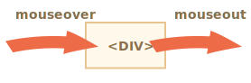

JavaScript 语言最初是为 Web 浏览器创建的。此后，它已经发展成为一种具有多种用途和平台的语言。
平台可以是一个浏览器，一个 Web 服务器，或其他 主机（host），甚至可以是一个“智能”咖啡机，如果它能运行 JavaScript 的话。它们每个都提供了特定于平台的功能。JavaScript 规范将其称为 主机环境。
主机环境提供了自己的对象和语言核心以外的函数。Web 浏览器提供了一种控制网页的方法。Node.JS 提供了服务器端功能，等等。
下面是 JavaScript 在浏览器中运行时的鸟瞰示意图：
有一个叫做 window 的“根”对象。它有两个角色：
window
例如，在这里我们将它用作全局对象：
function sayHi() { alert("Hello"); } // 全局函数是全局对象的方法： window.sayHi();
在这里，我们将它用作浏览器窗口，以查看窗口高度：
alert(window.innerHeight); // 内部窗口高度
还有更多窗口特定的方法和属性，我们稍后会介绍它们。
文档对象模型（Document Object Model），简称 DOM，将所有页面内容表示为可以修改的对象。
document 对象是页面的主要“入口点”。我们可以使用它来更改或创建页面上的任何内容。
document
例如：
// 将背景颜色修改为红色 document.body.style.background = "red"; // 在 1 秒后将其修改回来 setTimeout(() => document.body.style.background = "", 1000);
在这里，我们使用了 document.body.style，但还有很多很多其他的东西。规范中有属性和方法的详细描述：DOM Living Standard。
document.body.style
DOM 规范解释了文档的结构，并提供了操作文档的对象。有的非浏览器设备也使用 DOM。 例如，下载 HTML 文件并对其进行处理的服务器端脚本也可以使用 DOM。但它们可能仅支持部分规范中的内容。
另外也有一份针对 CSS 规则和样式表的、单独的规范 [CSS Object Model (CSSOM)](https://www.w3.org/TR/cssom-1/)，这份规范解释了如何将 CSS 表示为对象，以及如何读写这些对象。 当我们修改文档的样式规则时，CSSOM 与 DOM 是一起使用的。但实际上，很少需要 CSSOM，因为我们很少需要从 JavaScript 中修改 CSS 规则（我们通常只是添加/移除一些 CSS 类，而不是直接修改其中的 CSS 规则），但这也是可行的。
浏览器对象模型（Browser Object Model），简称 BOM，表示由浏览器（主机环境）提供的用于处理文档（document）之外的所有内容的其他对象。
navigator.userAgent
navigator.platform
这是我们可以如何使用 location 对象的方法：
location
alert(location.href); // 显示当前 URL if (confirm("Go to Wikipedia?")) { location.href = "https://wikipedia.org"; // 将浏览器重定向到另一个 URL }
函数 alert/confirm/prompt 也是 BOM 的一部分：它们与文档（document）没有直接关系，但它代表了与用户通信的纯浏览器方法。
alert/confirm/prompt
BOM 是通用 [HTML 规范](https://html.spec.whatwg.org) 的一部分。 是的，你没听错。在 <https://html.spec.whatwg.org> 中的 HTML 规范不仅是关于“HTML 语言”（标签，特性）的，还涵盖了一堆对象、方法和浏览器特定的 DOM 扩展。这就是“广义的 HTML”。此外，某些部分也有其他的规范，它们被列在 <https://spec.whatwg.org> 中。
说到标准，我们有：
DOM 规范 : 描述文档的结构、操作和事件，详见 https://dom.spec.whatwg.org。
CSSOM 规范 : 描述样式表和样式规则，对它们进行的操作，以及它们与文档的绑定，详见 https://www.w3.org/TR/cssom-1/。
HTML 规范 : 描述 HTML 语言（例如标签）以及 BOM（浏览器对象模型）— 各种浏览器函数：setTimeout，alert，location 等，详见 https://html.spec.whatwg.org。它采用了 DOM 规范，并使用了许多其他属性和方法对其进行了扩展。
setTimeout
alert
此外，某些类被分别描述在 https://spec.whatwg.org/。
请注意这些链接，因为要学的东西太多了，所以不可能涵盖并记住所有内容。
当你想要了解某个属性或方法时，Mozilla 手册 https://developer.mozilla.org/en-US/search 是一个很好的资源，但对应的规范可能会更好：它更复杂，且阅读起来需要更长的时间，但是会使你的基本知识更加全面，更加完整。
要查找某些内容时，你通常可以使用互联网搜索 "WHATWG [term]" 或 "MDN [term]"，例如 https://google.com?q=whatwg+localstorage，https://google.com?q=mdn+localstorage。
现在，我们开始学习 DOM，因为文档在 UI 中扮演着核心角色。
libs:
HTML 文档的主干是标签（tag）。
根据文档对象模型（DOM），每个 HTML 标签都是一个对象。嵌套的标签是闭合标签的“子标签（children）”。标签内的文本也是一个对象。
所有这些对象都可以通过 JavaScript 来访问，我们可以使用它们来修改页面。
例如，document.body 是表示 <body> 标签的对象。
document.body
<body>
运行这段代码会使 <body> 保持 3 秒红色状态:
document.body.style.background = 'red'; // 将背景设置为红色 setTimeout(() => document.body.style.background = '', 3000); // 恢复回去
在这，我们使用了 style.background 来修改 document.body 的背景颜色，但是还有很多其他的属性，例如：
style.background
innerHTML
offsetWidth
很快，我们将学习更多操作 DOM 的方法，但首先我们需要了解 DOM 的结构。
让我们从下面这个简单的文档（document）开始：
<!DOCTYPE HTML> <html> <head> <title>About elk</title> </head> <body> The truth about elk. </body> </html>
DOM 将 HTML 表示为标签的树形结构。它看起来如下所示：
在上面的图片中，你可以点击元素（element）节点，它们的子节点会打开/折叠。
每个树的节点都是一个对象。
标签被称为 元素节点（或者仅仅是元素），并形成了树状结构：<html> 在根节点，<head> 和 <body> 是其子项，等。
<html>
<head>
元素内的文本形成 文本节点，被标记为 ＃text。一个文本节点只包含一个字符串。它没有子项，并且总是树的叶子。
＃text
例如，<title> 标签里面有文本 "About elk"。
<title>
"About elk"
请注意文本节点中的特殊字符：
↵
\n
␣
空格和换行符都是完全有效的字符，就像字母和数字。它们形成文本节点并成为 DOM 的一部分。所以，例如，在上面的示例中，<head> 标签中的 <title> 标签前面包含了一些空格，并且该文本变成了一个 #text 节点（它只包含一个换行符和一些空格）。
#text
只有两个顶级排除项：
</body>
body
在其他情况下，一切都很简单 — 如果文档中有空格（就像任何字符一样），那么它们将成为 DOM 中的文本节点，而如果我们删除它们，则不会有任何空格。
这是没有空格的文本节点：
<!DOCTYPE HTML> <html><head><title>About elk</title></head><body>The truth about elk.</body></html>
与 DOM 一起使用的浏览器工具（即将介绍）通常不会在文本的开始/结尾显示空格，并且在标签之间也不会显示空文本节点（换行符）。 开发者工具通过这种方式节省屏幕空间。 在本教程中，如果这些空格和空文本节点无关紧要时，我们在后面出现的关于 DOM 的示意图中会忽略它们。这样的空格通常不会影响文档的显示方式。
如果浏览器遇到格式不正确的 HTML，它会在形成 DOM 时自动更正它。
例如，顶级标签总是 <html>。即使它不存在于文档中 — 它也会出现在 DOM 中，因为浏览器会创建它。对于 <body> 也是一样。
例如，如果一个 HTML 文件中只有一个单词 "Hello"，浏览器则会把它包装到 <html> 和 <body> 中，并且会添加所需的 <head>，DOM 将会变成下面这样：
在生成 DOM 时，浏览器会自动处理文档中的错误，关闭标签等。
一个没有关闭标签的文档：
<p>Hello <li>Mom <li>and <li>Dad
……将成为一个正常的 DOM，因为浏览器在读取标签时会填补缺失的部分：
````warn header="表格永远有 <tbody>" 表格是一个有趣的“特殊的例子”。按照 DOM 规范，它们必须具有 <tbody>，但 HTML 文本却（官方的）忽略了它。然后浏览器在创建 DOM 时，自动地创建了 <tbody>。
<tbody>
对于 HTML：
<table id="table"><tr><td>1</td></tr></table>
DOM 结构会变成：
看到了吗？<tbody> 出现了。你应该记住这一点，以免在使用表格时，对这种情况感到惊讶。
## 其他节点类型 除了元素和文本节点外，还有一些其他的节点类型。 例如，注释： ```html <!DOCTYPE HTML> <html> <body> The truth about elk. <ol> <li>An elk is a smart</li> *!* <!-- comment --> */!* <li>...and cunning animal!</li> </ol> </body> </html> ``` <div class="domtree"></div> <script> let node6 = {"name":"HTML","nodeType":1,"children":[{"name":"HEAD","nodeType":1,"children":[]},{"name":"BODY","nodeType":1,"children":[{"name":"#text","nodeType":3,"content":"\n The truth about elk.\n "},{"name":"OL","nodeType":1,"children":[{"name":"#text","nodeType":3,"content":"\n "},{"name":"LI","nodeType":1,"children":[{"name":"#text","nodeType":3,"content":"An elk is a smart"}]},{"name":"#text","nodeType":3,"content":"\n "},{"name":"#comment","nodeType":8,"content":"comment"},{"name":"#text","nodeType":3,"content":"\n "},{"name":"LI","nodeType":1,"children":[{"name":"#text","nodeType":3,"content":"...and cunning animal!"}]},{"name":"#text","nodeType":3,"content":"\n "}]},{"name":"#text","nodeType":3,"content":"\n \n"}]}]}; drawHtmlTree(node6, 'div.domtree', 690, 500); </script> 在这里我们可以看到一个新的树节点类型 — *comment node*，被标记为 `#comment`，它在两个文本节点之间。 我们可能会想 — 为什么要将注释添加到 DOM 中？它不会对视觉展现产生任何影响吗。但是有一条规则 — 如果一些内容存在于 HTML 中，那么它也必须在 DOM 树中。 **HTML 中的所有内容，甚至注释，都会成为 DOM 的一部分。** 甚至 HTML 开头的 `<!DOCTYPE...>` 指令也是一个 DOM 节点。它在 DOM 树中位于 `<html>` 之前。我们不会触及那个节点，出于这个原因，我们甚至不会在图表中绘制它，但它确实就在那里。 表示整个文档的 `document` 对象，在形式上也是一个 DOM 节点。 一共有 [12 种节点类型](https://dom.spec.whatwg.org/#node)。实际上，我们通常用到的是其中的 4 种： 1. `document` — DOM 的“入口点”。 2. 元素节点 — HTML 标签，树构建块。 3. 文本节点 — 包含文本。 4. 注释 — 有时我们可以将一些信息放入其中，它不会显示，但 JS 可以从 DOM 中读取它。 ## 自己看看 要在实际中查看 DOM 结构，请尝试 [Live DOM Viewer](http://software.hixie.ch/utilities/js/live-dom-viewer/)。只需输入文档，它将立即显示为 DOM。 探索 DOM 的另一种方式是使用浏览器开发工具。实际上，这就是我们在开发中所使用的。 你可以打开这个网页 [elks.html](elks.html)，然后打开浏览器开发工具，并切换到元素（Elements）选项卡。 它看起来像这样：  你可以看到 DOM，点击元素，查看它们的细节等。 请注意，开发者工具中的 DOM 结构是经过简化的。文本节点仅以文本形式显示。并且根本没有“空白”（只有空格）的文本节点。这其实挺好，因为大多数情况下，我们只关心元素节点。 点击左上角的 <span class="devtools" style="background-position:-328px -124px"></span> 按钮可以让我们使用鼠标（或其他指针设备）从网页中选择一个节点并“检查（inspect）”它（在元素选项卡中滚动到该节点）。当我们有一个巨大的 HTML 页面（和相应的巨大 DOM），并希望查看其中的一个特定元素的位置时，这很有用。 另一种方法是在网页上右键单击，然后在上下文菜单中选择“检查（Inspect）”。  在工具的右侧部分有以下子选项卡： - **Styles** — 我们可以看到按规则应用于当前元素的 CSS 规则，包括内置规则（灰色）。几乎所有内容都可以就地编辑，包括下面的方框的 dimension/margin/padding。 - **Computed** — 按属性查看应用于元素的 CSS：对于每个属性，我们可以都可以看到赋予它的规则（包括 CSS 继承等）。 - **Event Listeners** — 查看附加到 DOM 元素的事件侦听器（我们将在本教程的下一部分介绍它们）。 - ……等。 学习它们的最佳方式就是多点一点看一下。大多数值都是可以就地编辑的。 ## 与控制台交互 在我们处理 DOM 时，我们可能还希望对其应用 JavaScript。例如：获取一个节点并运行一些代码来修改它，以查看结果。以下是在元素（Elements）选项卡和控制台（Console）之间切换的一些技巧。 首先： - 在元素（Elements）选项卡中选择第一个 `<li>`。 - 按下 `key:Esc` — 它将在元素（Elements）选项卡下方打开控制台（Console）。 现在最后选中的元素可以通过 `$0` 来进行操作，先前选择的是 `$1`，等。 我们可以对它们执行一些命令。例如，`$0.style.background = 'red'` 使选定的列表项（list item）变成红色，像这样：  这就是在控制台（Console）中获取元素（Elements）选项卡中的节点的方法。 还有一种方式。如果存在引用 DOM 节点的变量，那么我们可以在控制台（Console）中使用命令 `inspect(node)`，来在元素（Elements）选项卡中查看它。 或者我们可以直接在控制台（Console）中输出 DOM 节点，并“就地”探索它，例如下面的 `document.body`：  当然，这是出于调试目的。从下一章开始，我们将使用 JavaScript 访问和修改 DOM。 浏览器开发者工具对于开发有很大的帮助：我们可以探索 DOM，尝试一些东西，并找出问题所在。 ## 总结 HTML/XML 文档在浏览器内均被表示为 DOM 树。 - 标签（tag）成为元素节点，并形成文档结构。 - 文本（text）成为文本节点。 - ……等，HTML 中的所有东西在 DOM 中都有它的位置，甚至对注释也是如此。 我们可以使用开发者工具来检查（inspect）DOM 并手动修改它。 在这里，我们介绍了基础知识，入门最常用和最重要的行为。在 <https://developers.google.cn/web/tools/chrome-devtools> 上有关于 Chrome 开发者工具的详细文档说明。学习这些工具的最佳方式就是到处点一点看一看，阅读菜单：大多数选项都很明显。而后，当你大致了解它们后，请阅读文档并学习其余内容。 DOM 节点具有允许我们在它们之间移动，修改它们，在页面中移动等的属性和方法。在下一章中，我们将介绍它们。
这里有很多种方法，例如：
获取 <div> DOM 节点：
<div>
document.body.firstElementChild // 或 document.body.children[0] // 或（第一个节点是空格，所以我们应该获取的是第二个） document.body.childNodes[1]
获取 <ul> DOM 节点：
<ul>
document.body.lastElementChild // 或 document.body.children[1]
获取第二个 <li>（即包含 Pete 的节点）：
<li>
// 获取 <ul>，然后获取它的最后一个子元素 document.body.lastElementChild.lastElementChild
importance: 5
对于这个页面：
<html> <body> <div>Users:</div> <ul> <li>John</li> <li>Pete</li> </ul> </body> </html>
对于以下各项，请给出至少一种访问方式：
elem.lastChild
nextSibling
elem.children[0]
previousSibling
请注意，对于这两种情况，如果没有子节点，那么就会报错。
如果这里没有子节点，那么 elem.lastChild 是 null，所以我们就访问不到 elem.lastChild.nextSibling。并且 elem.children 是空的（像一个空数组一样 []）。
null
elem.lastChild.nextSibling
elem.children
[]
如果 elem 是任意一个 DOM 元素节点……
elem
elem.children[0].previousSibling
我们将使用 rows 和 cells 属性来获取表格中的对角单元格。
rows
cells
编写代码来把表格中的对角单元格都绘制成红色。
你需要用代码从 <table> 中获取所有的对角单元格 <td>，然后绘制它们：
<table>
<td>
// td 表示的是对单元格的引用 td.style.backgroundColor = 'red';
结果应该如下所示：
[iframe src="solution" height=180]
DOM 让我们可以对元素和它们中的内容做任何事，但是首先我们需要获取到对应的 DOM 对象。
对 DOM 的所有操作都是以 document 对象开始。它是 DOM 的主“入口点”。从它我们可以访问任何节点。
这里是一张描述对象间链接的图片，通过这些链接我们可以在 DOM 节点之间移动。
让我们更详细地讨论它们吧。
最顶层的树节点可以直接作为 document 的属性来使用：
<html> = document.documentElement : 最顶层的 document 节点是 document.documentElement。这是对应 <html> 标签的 DOM 节点。
document.documentElement
<body> = document.body : 另一个被广泛使用的 DOM 节点是 <body> 元素 — document.body。
<head> = document.head : <head> 标签可以通过 document.head 访问。
document.head
````warn header="这里有个问题：document.body 的值可能是 null" 脚本无法访问在运行时不存在的元素。
尤其是，如果一个脚本是在 <head> 中，那么脚本是访问不到 document.body 元素的，因为浏览器还没有读到它。
所以，下面例子中的第一个 alert 显示 null：
<html> <head> <script> *!* alert( "From HEAD: " + document.body ); // null，这里目前还没有 <body> */!* </script> </head> <body> <script> alert( "From BODY: " + document.body ); // HTMLBodyElement，现在存在了 </script> </body> </html>
```smart header="在 DOM 的世界中，`null` 就意味着“不存在”" 在 DOM 中，`null` 值就意味着“不存在”或者“没有这个节点”。 ``` ## 子节点：childNodes，firstChild，lastChild 从现在开始，我们将使用下面这两个术语： - **子节点（或者叫作子）** — 对应的是直系的子元素。换句话说，它们被完全嵌套在给定的元素中。例如，`<head>` 和 `<body>` 就是 `<html>` 元素的子元素。 - **子孙元素** — 嵌套在给定元素中的所有元素，包括子元素，以及子元素的子元素等。 例如，这里 `<body>` 有子元素 `<div>` 和 `<ul>`（以及一些空白的文本节点）： ```html run <html> <body> <div>Begin</div> <ul> <li> <b>Information</b> </li> </ul> </body> </html> ``` ……`<body>` 元素的子孙元素不仅包含直接的子元素 `<div>` 和 `<ul>`，还包含像 `<li>`（`<ul>` 的子元素）和 `<b>`（`<li>` 的子元素）这样的元素 — 整个子树。 **`childNodes` 集合列出了所有子节点，包括文本节点。** 下面这个例子显示了 `document.body` 的子元素： ```html run <html> <body> <div>Begin</div> <ul> <li>Information</li> </ul> <div>End</div> <script> *!* for (let i = 0; i < document.body.childNodes.length; i++) { alert( document.body.childNodes[i] ); // Text, DIV, Text, UL, ..., SCRIPT } */!* </script> ...more stuff... </body> </html> ``` 请注意这里的一个有趣的细节。如果我们运行上面这个例子，所显示的最后一个元素是 `<script>`。实际上，文档下面还有很多东西，但是在这个脚本运行的时候，浏览器还没有读到下面的内容，所以这个脚本也就看不到它们。 **`firstChild` 和 `lastChild` 属性是访问第一个和最后一个子元素的快捷方式。** 它们只是简写。如果元素存在子节点，那么下面的脚本运行结果将是 true： ```js elem.childNodes[0] === elem.firstChild elem.childNodes[elem.childNodes.length - 1] === elem.lastChild ``` 这里还有一个特别的函数 `elem.hasChildNodes()` 用于检查节点是否有子节点。 ### DOM 集合 正如我们看到的那样，`childNodes` 看起来就像一个数组。但实际上它并不是一个数组，而是一个 **集合** — 一个类数组的可迭代对象。 这个性质会导致两个重要的结果： 1. 我们可以使用 `for..of` 来迭代它： ```js for (let node of document.body.childNodes) { alert(node); // 显示集合中的所有节点 } ``` 这是因为集合是可迭代的（提供了所需要的 `Symbol.iterator` 属性）。 2. 无法使用数组的方法，因为它不是一个数组： ```js run alert(document.body.childNodes.filter); // undefined（这里没有 filter 方法！） ``` 集合的性质所得到的第一个结果很不错。第二个结果也还可以忍受，因为如果我们想要使用数组的方法的话，我们可以使用 `Array.from` 方法来从集合创建一个“真”数组： ```js run alert( Array.from(document.body.childNodes).filter ); // function ``` ```warn header="DOM 集合是只读的" DOM 集合，甚至可以说本章中列出的 **所有** 导航（navigation）属性都是只读的。 我们不能通过类似 `childNodes[i] = ...` 的操作来替换一个子节点。 修改子节点需要使用其它方法。我们将会在下一章中看到它们。 ``` ```warn header="DOM 集合是实时的" 除小部分例外，几乎所有的 DOM 集合都是 **实时** 的。换句话说，它们反映了 DOM 的当前状态。 如果我们保留一个对 `elem.childNodes` 的引用，然后向 DOM 中添加/移除节点，那么这些节点的更新会自动出现在集合中。 ``` ````warn header="不要使用 `for..in` 来遍历集合" 可以使用 `for..of` 对集合进行迭代。但有时候人们会尝试使用 `for..in` 来迭代集合。 请不要这么做。`for..in` 循环遍历的是所有可枚举的（enumerable）属性。集合还有一些“额外的”很少被用到的属性，通常这些属性也是我们不期望得到的： ```html run <body> <script> // 显示 0，1，length，item，values 及其他。 for (let prop in document.body.childNodes) alert(prop); </script> </body>
兄弟节点（Sibling） 是指有同一个父节点的节点。
例如，<head> 和 <body> 就是兄弟节点：
<html> <head>...</head><body>...</body> </html>
下一个兄弟节点在 nextSibling 属性中，上一个是在 previousSibling 属性中。
可以通过 parentNode 来访问父节点。
parentNode
// <body> 的父节点是 <html> alert( document.body.parentNode === document.documentElement ); // true // <head> 的后一个是 <body> alert( document.head.nextSibling ); // HTMLBodyElement // <body> 的前一个是 <head> alert( document.body.previousSibling ); // HTMLHeadElement
上面列出的导航（navigation）属性引用 所有 节点。例如，在 childNodes 中我们可以看到文本节点，元素节点，甚至如果注释节点存在的话，也能访问到。
childNodes
但是对于很多任务来说，我们并不想要文本节点或注释节点。我们希望操纵的是代表标签的和形成页面结构的元素节点。
所以，让我们看看更多只考虑 元素节点 的导航链接（navigation link）：
这些链接和我们在上面提到过的类似，只是在词中间加了 Element：
Element
children
firstElementChild
lastElementChild
previousElementSibling
nextElementSibling
parentElement
````smart header="为什么是 parentElement? 父节点可以不是一个元素吗？" parentElement 属性返回的是“元素类型”的父节点，而 parentNode 返回的是“任何类型”的父节点。这些属性通常来说是一样的：它们都是用于获取父节点。
唯一的例外就是 document.documentElement：
alert( document.documentElement.parentNode ); // document alert( document.documentElement.parentElement ); // null
因为根节点 document.documentElement（<html>）的父节点是 document。但 document 不是一个元素节点，所以 parentNode 返回了 document，但 parentElement 返回的是 null。
当我们想从任意节点 elem 到 <html> 而不是到 document 时，这个细节可能很有用：
while(elem = elem.parentElement) { // 向上，直到 <html> alert( elem ); }
让我们修改上面的一个示例：用 `children` 来替换 `childNodes`。现在它只显示元素： ```html run <html> <body> <div>Begin</div> <ul> <li>Information</li> </ul> <div>End</div> <script> *!* for (let elem of document.body.children) { alert(elem); // DIV, UL, DIV, SCRIPT } */!* </script> ... </body> </html> ``` ## 更多链接：表格 [#dom-navigation-tables] 到现在，我们已经描述了基本的导航（navigation）属性。 方便起见，某些类型的 DOM 元素可能会提供特定于其类型的其他属性。 表格（Table）是一个很好的例子，它代表了一个特别重要的情况： **`<table>`** 元素支持 (除了上面给出的，之外) 以下这些属性: - `table.rows` — `<tr>` 元素的集合。 - `table.caption/tHead/tFoot` — 引用元素 `<caption>`，`<thead>`，`<tfoot>`。 - `table.tBodies` — `<tbody>` 元素的集合（根据标准还有很多元素，但是这里至少会有一个 — 即使没有被写在 HTML 源文件中，浏览器也会将其放入 DOM 中）。 **`<thead>`，`<tfoot>`，`<tbody>`** 元素提供了 `rows` 属性： - `tbody.rows` — 表格内部 `<tr>` 元素的集合。 **`<tr>`：** - `tr.cells` — 在给定 `<tr>` 中的 `<td>` 和 `<th>` 单元格的集合。 - `tr.sectionRowIndex` — 给定的 `<tr>` 在封闭的 `<thead>/<tbody>/<tfoot>` 中的位置（索引）。 - `tr.rowIndex` — 在整个表格中 `<tr>` 的编号（包括表格的所有行）。 **`<td>` 和 `<th>`：** - `td.cellIndex` — 在封闭的 `<tr>` 中单元格的编号。 用法示例： ```html run height=100 <table id="table"> <tr> <td>one</td><td>two</td> </tr> <tr> <td>three</td><td>four</td> </tr> </table> <script> // 获取带有 "two" 的 td（第一行，第二列） let td = table.*!*rows[0].cells[1]*/!*; td.style.backgroundColor = "red"; // highlight it </script> ``` 规范：[tabular data](https://html.spec.whatwg.org/multipage/tables.html)。 HTML 表单（form）还有其它导航（navigation）属性。稍后当我们开始使用表单（form）时，我们将对其进行研究。 ## 总结 给定一个 DOM 节点，我们可以使用导航（navigation）属性访问其直接的邻居。 这些属性主要分为两组： - 对于所有节点：`parentNode`，`childNodes`，`firstChild`，`lastChild`，`previousSibling`，`nextSibling`。 - 仅对于元素节点：`parentElement`，`children`，`firstElementChild`，`lastElementChild`，`previousElementSibling`，`nextElementSibling`。 某些类型的 DOM 元素，例如 table，提供了用于访问其内容的其他属性和集合。
实现的方式有很多种。
以下列举的是其中一些方法：
// 1. 带有 id="age-table" 的表格。 let table = document.getElementById('age-table') // 2. 表格内的所有 label 元素 table.getElementsByTagName('label') // 或 document.querySelectorAll('#age-table label') // 3. 表格中的第一个 td（带有 "Age" 字段） table.rows[0].cells[0] // 或 table.getElementsByTagName('td')[0] // 或 table.querySelector('td') // 4. 带有 name="search" 的 form。 // 假设文档中只有一个 name="search" 的元素 let form = document.getElementsByName('search')[0] // 或者，专门对于 form document.querySelector('form[name="search"]') // 5. 表单中的第一个 input form.getElementsByTagName('input')[0] // 或 form.querySelector('input') // 6. 表单中的最后一个 input let inputs = form.querySelectorAll('input') // 查找所有 input inputs[inputs.length-1] // 取出最后一个
importance: 4
这是带有表格（table）和表单（form）的文档。
如何查找？……
id="age-table"
label
td
name="search"
form
input
在一个单独的窗口中打开 table.html 页面，并对此页面使用浏览器开发者工具。
当元素彼此靠得近时，DOM 导航属性（navigation property）非常有用。如果不是，那该怎么办？如何去获取页面上的任意元素？
还有其他搜索方法。
如果一个元素有 id 特性（attribute），那我们就可以使用 document.getElementById(id) 方法获取该元素，无论它在哪里。
id
document.getElementById(id)
<div id="elem"> <div id="elem-content">Element</div> </div> <script> // 获取该元素 *!* let elem = document.getElementById('elem'); */!* // 将该元素背景改为红色 elem.style.background = 'red'; </script>
此外，还有一个通过 id 命名的全局变量，它引用了元素：
<div id="*!*elem*/!*"> <div id="*!*elem-content*/!*">Element</div> </div> <script> // elem 是对带有 id="elem" 的 DOM 元素的引用 elem.style.background = 'red'; // id="elem-content" 内有连字符，所以它不能成为一个变量 // ...但是我们可以通过使用方括号 window['elem-content'] 来访问它 </script>
……除非我们声明一个具有相同名称的 JavaScript 变量，否则它具有优先权：
<div id="elem"></div> <script> let elem = 5; // 现在 elem 是 5，而不是对 <div id="elem"> 的引用 alert(elem); // 5 </script>
[在规范中](http://www.whatwg.org/specs/web-apps/current-work/#dom-window-nameditem) 对此行为进行了描述，所以它是一种标准。但这是注意考虑到兼容性才支持的。 浏览器尝试通过混合 JavaScript 和 DOM 的命名空间来帮助我们。对于内联到 HTML 中的简单脚本来说，这还行，但是通常来说，这不是一件好事。因为这可能会造成命名冲突。另外，当人们阅读 JavaScript 代码且看不到对应的 HTML 时，变量的来源就会不明显。 在本教程中，我们只会在元素来源非常明显时，为了简洁起见，才会使用 `id` 直接引用对应的元素。 在实际开发中，`document.getElementById` 是首选方法。
```smart header="id 必须是唯一的" id 必须是唯一的。在文档中，只能有一个元素带有给定的 id。
如果有多个元素都带有同一个 id，那么使用它的方法的行为是不可预测的，例如 document.getElementById 可能会随机返回其中一个元素。因此，请遵守规则，保持 id 的唯一性。
document.getElementById
```warn header="只有 `document.getElementById`，没有 `anyElem.getElementById`" `getElementById` 方法只能被在 `document` 对象上调用。它会在整个文档中查找给定的 `id`。
到目前为止，最通用的方法是 elem.querySelectorAll(css)，它返回 elem 中与给定 CSS 选择器匹配的所有元素。
elem.querySelectorAll(css)
在这里，我们查找所有为最后一个子元素的 <li> 元素：
<ul> <li>The</li> <li>test</li> </ul> <ul> <li>has</li> <li>passed</li> </ul> <script> *!* let elements = document.querySelectorAll('ul > li:last-child'); */!* for (let elem of elements) { alert(elem.innerHTML); // "test", "passed" } </script>
这个方法确实功能强大，因为可以使用任何 CSS 选择器。
CSS 选择器的伪类，例如 `:hover` 和 `:active` 也都是被支持的。例如，`document.querySelectorAll(':hover')` 将会返回鼠标指针现在已经结束的元素的集合（按嵌套顺序：从最外层 `<html>` 到嵌套最多的元素）。
elem.querySelector(css) 调用会返回给定 CSS 选择器的第一个元素。
elem.querySelector(css)
换句话说，结果与 elem.querySelectorAll(css)[0] 相同，但是后者会查找 所有 元素，并从中选取一个，而 elem.querySelector 只会查找一个。因此它在速度上更快，并且写起来更短。
elem.querySelectorAll(css)[0]
elem.querySelector
之前的方法是搜索 DOM。
elem.matches(css) 不会查找任何内容，它只会检查 elem 是否与给定的 CSS 选择器匹配。它返回 true 或 false。
true
false
当我们遍历元素（例如数组或其他内容）并试图过滤那些我们感兴趣的元素时，这个方法会很有用。
<a href="http://example.com/file.zip">...</a> <a href="http://ya.ru">...</a> <script> // 不一定是 document.body.children，还可以是任何集合 for (let elem of document.body.children) { *!* if (elem.matches('a[href$="zip"]')) { */!* alert("The archive reference: " + elem.href ); } } </script>
元素的祖先（ancestor）是：父级，父级的父级，它的父级等。祖先们一起组成了从元素到顶端的父级链。
elem.closest(css) 方法会查找与 CSS 选择器匹配的最近的祖先。elem 自己也会被搜索。
elem.closest(css)
换句话说，方法 closest 在元素中得到了提升，并检查每个父级。如果它与选择器匹配，则停止搜索并返回该祖先。
closest
<h1>Contents</h1> <div class="contents"> <ul class="book"> <li class="chapter">Chapter 1</li> <li class="chapter">Chapter 1</li> </ul> </div> <script> let chapter = document.querySelector('.chapter'); // LI alert(chapter.closest('.book')); // UL alert(chapter.closest('.contents')); // DIV alert(chapter.closest('h1')); // null（因为 h1 不是祖先） </script>
还有其他通过标签，类等查找节点的方法。
如今，它们大多已经成为了历史，因为 querySelector 功能更强大，写起来更短。
querySelector
因此，这里我们介绍它们只是为了完整起见，而你仍然可以在就脚本中找到这些方法。
elem.getElementsByTagName(tag)
tag
"*"
elem.getElementsByClassName(className)
document.getElementsByName(name)
name
// 获取文档中的所有 div let divs = document.getElementsByTagName('div');
让我们查找 table 中的所有 input 标签：
<table id="table"> <tr> <td>Your age:</td> <td> <label> <input type="radio" name="age" value="young" checked> less than 18 </label> <label> <input type="radio" name="age" value="mature"> from 18 to 50 </label> <label> <input type="radio" name="age" value="senior"> more than 60 </label> </td> </tr> </table> <script> *!* let inputs = table.getElementsByTagName('input'); */!* for (let input of inputs) { alert( input.value + ': ' + input.checked ); } </script>
```warn header="不要忘记字母 \"s\"！" 新手开发者有时会忘记字符 "s"。也就是说，他们会调用 getElementByTagName 而不是 getElementsByTagName。
\"s\"
"s"
getElementByTagName
getElementsByTagName
getElementById 中没有字母 "s"，是因为它只返回单个元素。但是 getElementsByTagName 返回的是元素的集合，所以里面有 "s"。
getElementById
````warn header="它返回的是一个集合，不是一个元素！" 新手的另一个普遍的错误是写： ```js // 行不通 document.getElementsByTagName('input').value = 5;
这是行不通的，因为它需要的是一个 input 的 集合，并将值赋（assign）给它，而不是赋值给其中的一个元素。
我们应该遍历集合或通过对应的索引来获取元素，然后赋值，如下所示：
// 应该可以运行（如果有 input） document.getElementsByTagName('input')[0].value = 5;
查找 `.article` 元素： ```html run height=50 <form name="my-form"> <div class="article">Article</div> <div class="long article">Long article</div> </form> <script> // 按 name 特性查找 let form = document.getElementsByName('my-form')[0]; // 在 form 中按 class 查找 let articles = form.getElementsByClassName('article'); alert(articles.length); // 2, found two elements with class "article" </script> ``` ## 实时的集合 所有的 `"getElementsBy*"` 方法都会返回一个 **实时的（live）** 集合。这样的集合始终反映的是文档的当前状态，并且在文档发生更改时会“自动更新”。 在下面的例子中，有两个脚本。 1. 第一个创建了对 `<div>` 的集合的引用。截至目前，它的长度是 `1`。 2. 第二个脚本在浏览器再遇到一个 `<div>` 时运行，所以它的长度是 `2`。 ```html run <div>First div</div> <script> let divs = document.getElementsByTagName('div'); alert(divs.length); // 1 </script> <div>Second div</div> <script> *!* alert(divs.length); // 2 */!* </script> ``` 相反，`querySelectorAll` 返回的是一个 **静态的** 集合。就像元素的固定数组。 如果我们使用它，那么两个脚本都会输出 `1`： ```html run <div>First div</div> <script> let divs = document.querySelectorAll('div'); alert(divs.length); // 1 </script> <div>Second div</div> <script> *!* alert(divs.length); // 1 */!* </script> ``` 现在我们可以很容易地看到不同之处。在文档中出现新的 `div` 后，静态集合并没有增加。 ## 总结 有 6 种主要的方法，可以在 DOM 中搜素节点： <table> <thead> <tr> <td>Method</td> <td>Searches by...</td> <td>Can call on an element?</td> <td>Live?</td> </tr> </thead> <tbody> <tr> <td><code>querySelector</code></td> <td>CSS-selector</td> <td>✔</td> <td>-</td> </tr> <tr> <td><code>querySelectorAll</code></td> <td>CSS-selector</td> <td>✔</td> <td>-</td> </tr> <tr> <td><code>getElementById</code></td> <td><code>id</code></td> <td>-</td> <td>-</td> </tr> <tr> <td><code>getElementsByName</code></td> <td><code>name</code></td> <td>-</td> <td>✔</td> </tr> <tr> <td><code>getElementsByTagName</code></td> <td>tag or <code>'*'</code></td> <td>✔</td> <td>✔</td> </tr> <tr> <td><code>getElementsByClassName</code></td> <td>class</td> <td>✔</td> <td>✔</td> </tr> </tbody> </table> 目前为止，最常用的是 `querySelector` 和 `querySelectorAll`，但是 `getElementBy*` 可能会偶尔有用，或者可以在旧脚本中找到。 此外： - `elem.matches(css)` 用于检查 `elem` 与给定的 CSS 选择器是否匹配。 - `elem.closest(css)` 用于查找与给定 CSS 选择器相匹配的最近的祖先。`elem` 本身也会被检查。 让我们在这里提一下另一种用来检查子级与父级之间关系的方法，因为它有时很有用： - 如果 `elemB` 在 `elemA` 内（`elemA` 的后代）或者 `elemA==elemB`，`elemA.contains(elemB)` 将返回 true。
这里有一个陷阱。
在 <script> 执行时，最后一个 DOM 节点就是 <script>，因为浏览器还没有处理页面的其余部分。
<script>
所以结果是 1（元素节点）。
1
<html> <body> <script> alert(document.body.lastChild.nodeType); </script> </body> </html>
下面这个脚本会显示什么？
我们使用循环遍历 <li>：
for (let li of document.querySelectorAll('li')) { ... }
循环时，我们需要获取每个 li 中的文本。
li
我们可以从 li 的第一个子节点读取文本，即文本节点：
for (let li of document.querySelectorAll('li')) { let title = li.firstChild.data; // title 是在 <li> 中的任何其他节点之前的文本 }
然后我们就可以使用 li.getElementsByTagName('li') 来获取后代的数目了。
li.getElementsByTagName('li')
这里有一个树结构嵌套的 ul/li。
ul/li
编写代码，为每个 <li> 显示：
[demo src="solution"]
答案：**BODY**。
BODY
<script> let body = document.body; body.innerHTML = "<!--" + body.tagName + "-->"; alert( body.firstChild.data ); // BODY </script>
让我们一步一步来看看发生了什么：
<!--BODY-->
body.tagName == "BODY"
tagName
body.firstChild
data
<!--...-->
"BODY"
importance: 3
这段代码会显示什么？
<script> let body = document.body; body.innerHTML = "<!--" + body.tagName + "-->"; alert( body.firstChild.data ); // 这里会显示什么？ </script>
我们可以通过输出它，来看看它是属于哪个类的，像这样：
alert(document); // [object HTMLDocument]
或者：
alert(document.constructor.name); // HTMLDocument
因此，document 是 HTMLDocument 类的一个实例。
HTMLDocument
它位于 DOM 层次结构（hierarchy）中的什么位置？
是的，我们可以浏览规范，但是手动找出它会更快。
我们通过 __proto__ 来遍历原型链。
__proto__
正如我们所知道的，类的方法在 constructor 的 prototype 中。例如，HTMLDocument.prototype 有用于文档（document）的方法。
prototype
HTMLDocument.prototype
此外，在 prototype 中还有一个对构造函数的引用：
alert(HTMLDocument.prototype.constructor === HTMLDocument); // true
为了以字符串的形式获取一个类的 name，我们可以使用 constructor.name。让我们对整个 document 的原型链执行该操作，直到 class Node：
constructor.name
Node
alert(HTMLDocument.prototype.constructor.name); // HTMLDocument alert(HTMLDocument.prototype.__proto__.constructor.name); // Document alert(HTMLDocument.prototype.__proto__.__proto__.constructor.name); // Node
这就是层次结构。
我们还可以使用 console.dir(document) 来检查对象，并通过打开 __proto__ 来查看这些名称。控制台将它们从 constructor 内部取出来。
console.dir(document)
constructor
document 属于哪一类？
它继承自 Node 还是 Element，或者可能是 HTMLElement？
HTMLElement
让我们更深入地了解一下 DOM 节点。
在本章中，我们将更深入地了解它们是什么，并学习它们最常用的属性。
不同的 DOM 节点可能有不同的属性。例如，标签 <a> 相对应的元素节点具有链接相关的（link-related）属性，标签 <input> 相对应的元素节点具有与输入相关的属性，等。文本节点与元素节点不同。但是所有这些标签对应的 DOM 节点之间也存在共有的属性和方法，因为所有类型的 DOM 节点都形成了一个单一层次的结构（single hierarchy）。
<a>
<input>
每个 DOM 节点都属于相应的内建类。
层次结构（hierarchy）的根节点是 EventTarget，Node 继承自它，其他 DOM 节点继承自 Node。
下图做了进一步说明：
类如下所示：
Text
Comment
SVGElement
XMLElement
因此，给定节点的全部属性和方法都是继承的结果。
例如，我们考虑一下 <input> 元素的 DOM 对象。它属于 HTMLInputElement 类。
它获取属性和方法，并将其作为下列类（按继承顺序列出）的叠加：
HTMLInputElement
EventTarget
Object
hasOwnProperty
我们可以通过回调来查看 DOM 节点类名，因为对象通常都具有 constructor 属性。它引用类的 constructor，constructor.name 就是它的名称：
alert( document.body.constructor.name ); // HTMLBodyElement
……或者我们可以对其使用 toString 方法：
toString
alert( document.body ); // [object HTMLBodyElement]
我们还可以使用 instanceof 来检查继承：
instanceof
alert( document.body instanceof HTMLBodyElement ); // true alert( document.body instanceof HTMLElement ); // true alert( document.body instanceof Element ); // true alert( document.body instanceof Node ); // true alert( document.body instanceof EventTarget ); // true
正如我们所看到的，DOM 节点是常规的 JavaScript 对象。它们使用基于原型的类进行继承。
在浏览器中，使用 console.dir(elem) 输出元素来查看也是非常容易的。在控制台中，你可以看到 HTMLElement.prototype 和 Element.prototype 等。
console.dir(elem)
HTMLElement.prototype
Element.prototype
```smart header="console.dir(elem) 与 console.log(elem)" 大多数浏览器在其开发者工具中都支持这两个命令：console.log 和 console.dir。它们将它们的参数输出到控制台中。对于 JavaScript 对象，这些命令通常做的是相同的事。
console.log(elem)
console.log
console.dir
但对于 DOM 元素，它们是不同的：
你可以在 document.body 上尝试一下。
````smart header="规范中的 IDL" 在规范中，DOM 类不是使用 JavaScript 来描述的，而是一种特殊的 [接口描述语言（Interface description language）](https://en.wikipedia.org/wiki/Interface_description_language)，简写为 IDL，它通常很容易理解。 在 IDL 中，所有属性以其类型开头。例如，`DOMString` 和 `boolean` 等。 以下是摘录（excerpt），并附有注释： ```js // 定义 HTMLInputElement *!* // 冒号 ":" 表示 HTMLInputElement 继承自 HTMLElement */!* interface HTMLInputElement: HTMLElement { // 接下来是 <input> 元素的属性和方法 *!* // "DOMString" 表示属性的值是字符串 */!* attribute DOMString accept; attribute DOMString alt; attribute DOMString autocomplete; attribute DOMString value; *!* // 布尔值属性（true/false） attribute boolean autofocus; */!* ... *!* // 现在方法："void" 表示方法没有返回值 */!* void select(); ... }
## "nodeType" 属性 `nodeType` 属性提供了另一种“过时的”用来获取 DOM 节点类型的方法。 它有一个数值型值（numeric value）： - 对于元素节点 `elem.nodeType == 1`， - 对于文本节点 `elem.nodeType == 3`， - 对于 document 对象 `elem.nodeType == 9`， - 在 [规范](https://dom.spec.whatwg.org/#node) 中还有一些其他值。 例如： ```html run <body> <script> let elem = document.body; // 让我们检查一下它是什么？ alert(elem.nodeType); // 1 => element // 第一个子节点是 alert(elem.firstChild.nodeType); // 3 => text // 对于 document 对象，类型是 9 alert( document.nodeType ); // 9 </script> </body> ``` 在现代脚本中，我们可以使用 `instanceof` 和其他基于类的检查方法来查看节点类型，但有时 `nodeType` 可能更简单。我们只能读取 `nodeType` 而不能修改它。 ## 标签：nodeName 和 tagName 给定一个 DOM 节点，我们可以从 `nodeName` 或者 `tagName` 属性中读取它的标签名： 例如： ```js run alert( document.body.nodeName ); // BODY alert( document.body.tagName ); // BODY ``` tagName 和 nodeName 之间有什么不同吗？ 当然，差异就体现在它们的名字上，但确实有些微妙。 - `tagName` 属性仅适用于 `Element` 节点。 - `nodeName` 是为任意 `Node` 定义的： - 对于元素，它的意义与 `tagName` 相同。 - 对于其他节点类型（text，comment 等），它拥有一个对应节点类型的字符串。 换句话说，`tagName` 仅受元素节点支持（因为它起源于 `Element` 类），而 `nodeName` 则可以说明其他节点类型。 例如，我们比较一下 `document` 的 `tagName` 和 `nodeName`，以及一个注释节点： ```html run <body><!-- comment --> <script> // for comment alert( document.body.firstChild.tagName ); // undefined（不是一个元素） alert( document.body.firstChild.nodeName ); // #comment // for document alert( document.tagName ); // undefined（不是一个元素） alert( document.nodeName ); // #document </script> </body> ``` 如果我们只处理元素，那么 `tagName` 和 `nodeName` 这两种方法，我们都可以使用，没有区别。 ```smart header="标签名称始终是大写的，除非是在 XML 模式下" 浏览器有两种处理文档（document）的模式：HTML 和 XML。通常，HTML 模式用于网页。只有在浏览器接收到带有 header `Content-Type: application/xml+xhtml` 的 XML-document 时，XML 模式才会被启用。 在 HTML 模式下，`tagName/nodeName` 始终是大写的：它是 `BODY`，而不是 `<body>` 或 `<BoDy>`。 在 XML 模式中，大小写保持为“原样”。如今，XML 模式很少被使用。 ``` ## innerHTML：内容 [innerHTML](https://w3c.github.io/DOM-Parsing/#widl-Element-innerHTML) 属性允许将元素中的 HTML 获取为字符串形式。 我们也可以修改它。因此，它是更改页面最有效的方法之一。 下面这个示例显示了 `document.body` 中的内容，然后将其完全替换： ```html run <body> <p>A paragraph</p> <div>A div</div> <script> alert( document.body.innerHTML ); // 读取当前内容 document.body.innerHTML = 'The new BODY!'; // 替换它 </script> </body> ``` 我们可以尝试插入无效的 HTML，浏览器会修复我们的错误： ```html run <body> <script> document.body.innerHTML = '<b>test'; // 忘记闭合标签 alert( document.body.innerHTML ); // <b>test</b>（被修复了） </script> </body> ``` ```smart header="脚本不会执行" 如果 `innerHTML` 将一个 `<script>` 标签插入到 document 中 — 它会成为 HTML 的一部分，但是不会执行。 ``` ### 小心："innerHTML+=" 会进行完全重写 我们可以使用 `elem.innerHTML+="more html"` 将 HTML 附加到元素上。 就像这样： ```js chatDiv.innerHTML += "<div>Hello<img src='smile.gif'/> !</div>"; chatDiv.innerHTML += "How goes?"; ``` 但我们必须非常谨慎地使用它，因为我们所做的 **不是** 附加内容，而且完全地重写。 从技术上来说，下面这两行代码的作用相同： ```js elem.innerHTML += "..."; // 进行写入的一种更简短的方式： *!* elem.innerHTML = elem.innerHTML + "..." */!* ``` 换句话说，`innerHTML+=` 做了以下工作： 1. 移除旧的内容。 2. 然后写入新的 `innerHTML`（新旧结合）。 **因为内容已“归零”并从头开始重写，因此所有的图片和其他资源都将重写加载。** 在上面的 `chatDiv` 示例中，`chatDiv.innerHTML+="How goes?"` 重建了 HTML 内容并重新加载了 `smile.gif`（希望它是缓存的）。如果 `chatDiv` 有许多其他文本和图片，那么就很容易看到重新加载（译注：是指在有很多内容时，重新加载会耗费更多的时间，所以你就很容易看见页面重载的过程）。 并且还会有其他副作用。例如，如果现有的文本被用鼠标选中了，那么大多数浏览器都会在重写 `innerHTML` 时删除选定状态。如果这里有一个带有用户输入的文本的 `<input>`，那么这个被输入的文本将会被移除。诸如此类。 幸运的是，除了 `innerHTML`，还有其他可以添加 HTML 的方法，我们很快就会学到。 ## outerHTML：元素的完整 HTML `outerHTML` 属性包含了元素的完整 HTML。就像 `innerHTML` 加上元素本身一样。 下面是一个示例： ```html run <div id="elem">Hello <b>World</b></div> <script> alert(elem.outerHTML); // <div id="elem">Hello <b>World</b></div> </script> ``` **注意：与 `innerHTML` 不同，写入 `outerHTML` 不会改变元素。而是在 DOM 中替换它。** 是的，听起来很奇怪，它确实很奇怪，这就是为什么我们在这里对此做了一个单独的注释。看一下。 考虑下面这个示例： ```html run <div>Hello, world!</div> <script> let div = document.querySelector('div'); *!* // 使用 <p>...</p> 替换 div.outerHTML */!* div.outerHTML = '<p>A new element</p>'; // (*) *!* // 蛤！'div' 还是原来那样！ */!* alert(div.outerHTML); // <div>Hello, world!</div> (**) </script> ``` 看起来真的很奇怪，对吧？ 在 `(*)` 行，我们使用 `<p>A new element</p>` 替换 `div`。在外部文档（DOM）中我们可以看到的是新内容而不是 `<div>`。但是正如我们在 `(**)` 行所看到的，旧的 `div` 变量并没有被改变。 `outerHTML` 赋值不会修改 DOM 元素（在这个例子中是被 'div' 引用的对象），而是将其从 DOM 中删除并在其位置插入新的 HTML。 所以，在 `div.outerHTML=...` 中发生的事情是： - `div` 被从文档（document）中移除。 - 另一个 HTML 片段 `<p>A new element</p>` 被插入到其位置上。 - `div` 仍拥有其旧的值。新的 HTML 没有被赋值给任何变量。 在这儿很容易出错：修改 `div.outerHTML` 然后继续使用 `div`，就好像它包含的是新内容一样。但事实并非如此。这样的东西对于 `innerHTML` 是正确的，但是对于 `outerHTML` 却不正确。 我们可以向 `elem.outerHTML` 写入内容，但是要记住，它不会改变我们所写的元素（'elem'）。而是将新的 HTML 放在其位置上。我们可以通过查询 DOM 来获取对新元素的引用。 ## nodeValue/data：文本节点内容 `innerHTML` 属性仅对元素节点有效。 其他节点类型，例如文本节点，具有它们的对应项：`nodeValue` 和 `data` 属性。这两者在实际使用中几乎相同，只有细微规范上的差异。因此，我们将使用 `data`，因为它更短。 读取文本节点和注释节点的内容的示例： ```html run height="50" <body> Hello <!-- Comment --> <script> let text = document.body.firstChild; *!* alert(text.data); // Hello */!* let comment = text.nextSibling; *!* alert(comment.data); // Comment */!* </script> </body> ``` 对于文本节点，我们可以想象读取或修改它们的原因，但是注释呢？ 有时，开发者会将信息或模板说明嵌入到 HTML 中的注释中，如下所示： ```html <!-- if isAdmin --> <div>Welcome, Admin!</div> <!-- /if --> ``` ……然后，JavaScript 可以从 `data` 属性中读取它，并处理嵌入的指令。 ## textContent：纯文本 `textContent` 提供了对元素内的 **文本** 的访问权限：仅文本，去掉所有 `<tags>`。 例如： ```html run <div id="news"> <h1>Headline!</h1> <p>Martians attack people!</p> </div> <script> // Headline! Martians attack people! alert(news.textContent); </script> ``` 正如我们所看到，只返回文本，就像所有 `<tags>` 都被剪掉了一样，但实际上其中的文本仍然存在。 在实际开发中，用到这样的文本读取的场景非常少。 **写入 `textContent` 要有用得多，因为它允许以“安全方式”写入文本。** 假设我们有一个用户输入的任意字符串，我们希望将其显示出来。 - 使用 `innerHTML`，我们将其“作为 HTML”插入，带有所有 HTML 标签。 - 使用 `textContent`，我们将其“作为文本”插入，所有符号（symbol）均按字面意义处理。 比较两者： ```html run <div id="elem1"></div> <div id="elem2"></div> <script> let name = prompt("What's your name?", "<b>Winnie-the-pooh!</b>"); elem1.innerHTML = name; elem2.textContent = name; </script> ``` 1. 第一个 `<div>` 获取 name “作为 HTML”：所有标签都变成标签，所以我们可以看到粗体的 name。 2. 第二个 `<div>` 获取 name “作为文本”，因此我们可以从字面上看到 `<b>Winnie-the-pooh!</b>`。 在大多数情况下，我们期望来自用户的文本，并希望将其视为文本对待。我们不希望在我们的网站中出现意料不到的 HTML。对 `textContent` 的赋值正好可以做到这一点。 ## "hidden" 属性 "hidden" 特性（attribute）和 DOM 属性（property）指定元素是否可见。 我们可以在 HTML 中使用它，或者使用 JavaScript 进行赋值，如下所示： ```html run height="80" <div>Both divs below are hidden</div> <div hidden>With the attribute "hidden"</div> <div id="elem">JavaScript assigned the property "hidden"</div> <script> elem.hidden = true; </script> ``` 从技术上来说，`hidden` 与 `style="display:none"` 做的是相同的事。但 `hidden` 写法更简洁。 这里有一个 blinking 元素： ```html run height=50 <div id="elem">A blinking element</div> <script> setInterval(() => elem.hidden = !elem.hidden, 1000); </script> ``` ## 更多属性 DOM 元素还有其他属性，特别是那些依赖于 class 的属性： - `value` — `<input>`，`<select>` 和 `<textarea>`（`HTMLInputElement`，`HTMLSelectElement`……）的 value。 - `href` — `<a href="...">`（`HTMLAnchorElement`）的 href。 - `id` — 所有元素（`HTMLElement`）的 "id" 特性（attribute）的值。 - ……以及更多其他内容…… 例如： ```html run height="80" <input type="text" id="elem" value="value"> <script> alert(elem.type); // "text" alert(elem.id); // "elem" alert(elem.value); // value </script> ``` 大多数标准 HTML 特性（attribute）都具有相应的 DOM 属性，我们可以像这样访问它。 如果我们想知道给定类的受支持属性的完整列表，我们可以在规范中找到它们。例如，在 <https://html.spec.whatwg.org/#htmlinputelement> 中记录了 `HTMLInputElement`。 或者，如果我们想要快速获取它们，或者对具体的浏览器规范感兴趣 — 我们总是可以使用 `console.dir(elem)` 输出元素并读取其属性。或者在浏览器的开发者工具的元素（Elements）标签页中探索“DOM 属性”。 ## 总结 每个 DOM 节点都属于一个特定的类。这些类形成层次结构（hierarchy）。完整的属性和方法集是继承的结果。 主要的 DOM 节点属性有： `nodeType` : 我们可以使用它来查看节点是文本节点还是元素节点。它具有一个数值型值（numeric value）：`1` 表示元素，`3` 表示文本节点，其他一些则代表其他节点类型。只读。 `nodeName/tagName` : 用于元素名，标签名（除了 XML 模式，都要大写）。对于非元素节点，`nodeName` 描述了它是什么。只读。 `innerHTML` : 元素的 HTML 内容。可以被修改。 `outerHTML` : 元素的完整 HTML。对 `elem.outerHTML` 的写入操作不会触及 `elem` 本身。而是在外部上下文中将其替换为新的 HTML。 `nodeValue/data` : 非元素节点（文本、注释）的内容。两者几乎一样，我们通常使用 `data`。可以被修改。 `textContent` : 元素内的文本：HTML 减去所有 `<tags>`。写入文本会将文本放入元素内，所有特殊字符和标签均被视为文本。可以安全地插入用户生成的文本，并防止不必要的 HTML 插入。 `hidden` : 当被设置为 `true` 时，执行与 CSS `display:none` 相同的事。 DOM 节点还具有其他属性，具体有哪些属性则取决于它们的类。例如，`<input>` 元素（`HTMLInputElement`）支持 `value`，`type`，而 `<a>` 元素（`HTMLAnchorElement`）则支持 `href` 等。大多数标准 HTML 特性（attribute）都具有相应的 DOM 属性。 然而，但是 HTML 特性（attribute）和 DOM 属性（property）并不总是相同的，我们将在下一章中看到。
<!DOCTYPE html> <html> <body> <div data-widget-name="menu">Choose the genre</div> <script> // 获取它 let elem = document.querySelector('[data-widget-name]'); // 读取值 alert(elem.dataset.widgetName); // 或 alert(elem.getAttribute('data-widget-name')); </script> </body> </html>
编写代码，从文档（document）中获取带有 data-widget-name 特性（attribute）的元素，并读取它的值。
data-widget-name
<!DOCTYPE html> <html> <body> <div data-widget-name="menu">Choose the genre</div> <script> /* your code */ </script> </body> </html>
首先，我们需要找到所有外部链接。
这里有两种方式。
第一种是使用 document.querySelectorAll('a') 找到所有链接，然后过滤出我们需要的部分：
document.querySelectorAll('a')
let links = document.querySelectorAll('a'); for (let link of links) { *!* let href = link.getAttribute('href'); */!* if (!href) continue; // 没有特性 if (!href.includes('://')) continue; // 没有协议 if (href.startsWith('http://internal.com')) continue; // 内部的 link.style.color = 'orange'; }
请注意：我们用的是 link.getAttribute('href')。而不是 link.href，因为我们需要的是来自 HTML 的值。
link.getAttribute('href')
link.href
……另一种更简单的方法，是使用 CSS 选择器进行检查：
// 查找所有 href 中包含 :// 的链接 // 但 href 不是以 http://internal.com 开头 let selector = 'a[href*="://"]:not([href^="http://internal.com"])'; let links = document.querySelectorAll(selector); links.forEach(link => link.style.color = 'orange');
通过修改 style 属性，将所有外部链接变为橙色。
style
如果一个链接是外部的：
href
://
http://internal.com
<a name="list">the list</a> <ul> <li><a href="http://google.com">http://google.com</a></li> <li><a href="/tutorial">/tutorial.html</a></li> <li><a href="local/path">local/path</a></li> <li><a href="ftp://ftp.com/my.zip">ftp://ftp.com/my.zip</a></li> <li><a href="http://nodejs.org">http://nodejs.org</a></li> <li><a href="http://internal.com/test">http://internal.com/test</a></li> </ul> <script> // 为单个链接设置样式 let link = document.querySelector('a'); link.style.color = 'orange'; </script>
结果应该是：
[iframe border=1 height=180 src="solution"]
当浏览器加载页面时，它会“读取”（或者称之为：“解析”）HTML 并从中生成 DOM 对象。对于元素节点，大多数标准的 HTML 特性（attributes）会自动变成 DOM 对象的属性（properties）。（译注：attribute 和 property 两词意思相近，为作区分，全文将 attribute 译为“特性”，property 译为“属性”，请读者注意区分。）
例如，如果标签是 <body id="page">，那么 DOM 对象就会有 body.id="page"。
<body id="page">
body.id="page"
但特性—属性映射并不是一一对应的！在本章，我们将带领你一起分清楚这两个概念，了解如何使用它们，了解它们何时相同何时不同。
我们已经见过了内建 DOM 属性。它们数量庞大。但是从技术上讲，没有人会限制我们，如果我们觉得这些 DOM 还不够，我们可以添加我们自己的。
DOM 节点是常规的 JavaScript 对象。我们可以 alert 它们。
例如，让我们在 document.body 中创建一个新的属性：
document.body.myData = { name: 'Caesar', title: 'Imperator' }; alert(document.body.myData.title); // Imperator
我们也可以像下面这样添加一个方法：
document.body.sayTagName = function() { alert(this.tagName); }; document.body.sayTagName(); // BODY（这个方法中的 "this" 的值是 document.body）
我们还可以修改内建属性的原型，例如修改 Element.prototype 为所有元素添加一个新方法：
Element.prototype.sayHi = function() { alert(`Hello, I'm ${this.tagName}`); }; document.documentElement.sayHi(); // Hello, I'm HTML document.body.sayHi(); // Hello, I'm BODY
所以，DOM 属性和方法的行为就像常规的 Javascript 对象一样：
elem.nodeType
elem.NoDeTyPe
在 HTML 中，标签可能拥有特性（attributes）。当浏览器解析 HTML 文本，并根据标签创建 DOM 对象时，浏览器会辨别 标准的 特性并以此创建 DOM 属性。
所以，当一个元素有 id 或其他 标准的 特性，那么就会生成对应的 DOM 属性。但是非 标准的 特性则不会。
<body id="test" something="non-standard"> <script> alert(document.body.id); // test *!* // 非标准的特性没有获得对应的属性 alert(document.body.something); // undefined */!* </script> </body>
请注意，一个元素的标准的特性对于另一个元素可能是未知的。例如 "type" 是 <input> 的一个标准的特性（HTMLInputElement），但对于 <body>（HTMLBodyElement）来说则不是。规范中对相应元素类的标准的属性进行了详细的描述。
"type"
这里我们可以看到：
<body id="body" type="..."> <input id="input" type="text"> <script> alert(input.type); // text *!* alert(body.type); // undefined：DOM 属性没有被创建，因为它不是一个标准的特性 */!* </script> </body>
所以，如果一个特性不是标准的，那么就没有相对应的 DOM 属性。那我们有什么方法来访问这些特性吗？
当然。所有特性都可以通过使用以下方法进行访问：
elem.hasAttribute(name)
elem.getAttribute(name)
elem.setAttribute(name, value)
elem.removeAttribute(name)
这些方法操作的实际上是 HTML 中的内容。
我们也可以使用 elem.attributes 读取所有特性：属于内建 Attr 类的对象的集合，具有 name 和 value 属性。
elem.attributes
value
下面是一个读取非标准的特性的示例：
<body something="non-standard"> <script> *!* alert(document.body.getAttribute('something')); // 非标准的 */!* </script> </body>
HTML 特性有以下几个特征：
ID
下面是一个使用特性的扩展示例：
<body> <div id="elem" about="Elephant"></div> <script> alert( elem.getAttribute('About') ); // (1) 'Elephant'，读取 elem.setAttribute('Test', 123); // (2) 写入 alert( elem.outerHTML ); // (3) 查看特性是否在 HTML 中（在） for (let attr of elem.attributes) { // (4) 列出所有 alert( `${attr.name} = ${attr.value}` ); } </script> </body>
请注意：
getAttribute('About')
"123"
outerHTML
attributes
当一个标准的特性被改变，对应的属性也会自动更新，（除了几个特例）反之亦然。
在下面这个示例中，id 被修改为特性，我们可以看到对应的属性也发生了变化。然后反过来也是同样的效果：
<input> <script> let input = document.querySelector('input'); // 特性 => 属性 input.setAttribute('id', 'id'); alert(input.id); // id（被更新了） // 属性 => 特性 input.id = 'newId'; alert(input.getAttribute('id')); // newId（被更新了） </script>
但这里也有些例外，例如 input.value 只能从特性同步到属性，反过来则不行：
input.value
<input> <script> let input = document.querySelector('input'); // 特性 => 属性 input.setAttribute('value', 'text'); alert(input.value); // text *!* // 这个操作无效，属性 => 特性 input.value = 'newValue'; alert(input.getAttribute('value')); // text（没有被更新！） */!* </script>
在上面这个例子中：
这个“功能”在实际中会派上用场，因为用户行为可能会导致 value 的更改，然后在这些操作之后，如果我们想从 HTML 中恢复“原始”值，那么该值就在特性中。
DOM 属性不总是字符串类型的。例如，input.checked 属性（对于 checkbox 的）是布尔型的。
input.checked
<input id="input" type="checkbox" checked> checkbox <script> alert(input.getAttribute('checked')); // 特性值是：空字符串 alert(input.checked); // 属性值是：true </script>
还有其他的例子。style 特性是字符串类型的，但 style 属性是一个对象：
<div id="div" style="color:red;font-size:120%">Hello</div> <script> // 字符串 alert(div.getAttribute('style')); // color:red;font-size:120% // 对象 alert(div.style); // [object CSSStyleDeclaration] alert(div.style.color); // red </script>
尽管大多数 DOM 属性都是字符串类型的。
有一种非常少见的情况，即使一个 DOM 属性是字符串类型的，但它可能和 HTML 特性也是不同的。例如，href DOM 属性一直是一个 完整的 URL，即使该特性包含一个相对路径或者包含一个 #hash。
#hash
这里有一个例子：
<a id="a" href="#hello">link</a> <script> // 特性 alert(a.getAttribute('href')); // #hello // 属性 alert(a.href ); // http://site.com/page#hello 形式的完整 URL </script>
如果我们需要 href 特性的值，或者其他与 HTML 中所写的完全相同的特性，则可以使用 getAttribute。
getAttribute
当编写 HTML 时，我们会用到很多标准的特性。但是非标准的，自定义的呢？首先，让我们看看它们是否有用？用来做什么？
有时，非标准的特性常常用于将自定义的数据从 HTML 传递到 JavaScript，或者用于为 JavaScript “标记” HTML 元素。
像这样：
<!-- 标记这个 div 以在这显示 "name" --> <div *!*show-info="name"*/!*></div> <!-- 标记这个 div 以在这显示 "age" --> <div *!*show-info="age"*/!*></div> <script> // 这段代码找到带有标记的元素，并显示需要的内容 let user = { name: "Pete", age: 25 }; for(let div of document.querySelectorAll('[show-info]')) { // 在字段中插入相应的信息 let field = div.getAttribute('show-info'); div.innerHTML = user[field]; // 首先 "name" 变为 Pete，然后 "age" 变为 25 } </script>
它们还可以用来设置元素的样式。
例如，这里使用 order-state 特性来设置订单状态：
order-state
<style> /* 样式依赖于自定义特性 "order-state" */ .order[order-state="new"] { color: green; } .order[order-state="pending"] { color: blue; } .order[order-state="canceled"] { color: red; } </style> <div class="order" order-state="new"> A new order. </div> <div class="order" order-state="pending"> A pending order. </div> <div class="order" order-state="canceled"> A canceled order. </div>
为什么使用特性比使用 .order-state-new，.order-state-pending，order-state-canceled 这些样式类要好？
.order-state-new
.order-state-pending
order-state-canceled
因为特性值更容易管理。我们可以轻松地更改状态：
// 比删除旧的或者添加一个新的类要简单一些 div.setAttribute('order-state', 'canceled');
但是自定义的特性也存在问题。如果我们出于我们的目的使用了非标准的特性，之后它被引入到了标准中并有了其自己的用途，该怎么办？HTML 语言是在不断发展的，并且更多的特性出现在了标准中，以满足开发者的需求。在这种情况下，自定义的属性可能会产生意料不到的影响。
为了避免冲突，存在 data-* 特性。
所有以 "data-" 开头的特性均被保留供程序员使用。它们可在 dataset 属性中使用。
dataset
例如，如果一个 elem 有一个名为 "data-about" 的特性，那么可以通过 elem.dataset.about 取到它。
"data-about"
elem.dataset.about
<body data-about="Elephants"> <script> alert(document.body.dataset.about); // Elephants </script>
像 data-order-state 这样的多词特性可以以驼峰式进行调用：dataset.orderState。
data-order-state
dataset.orderState
这里是 "order state" 那个示例的重构版：
<style> .order[data-order-state="new"] { color: green; } .order[data-order-state="pending"] { color: blue; } .order[data-order-state="canceled"] { color: red; } </style> <div id="order" class="order" data-order-state="new"> A new order. </div> <script> // 读取 alert(order.dataset.orderState); // new // 修改 order.dataset.orderState = "pending"; // (*) </script>
使用 data-* 特性是一种合法且安全的传递自定义数据的方式。
data-*
请注意，我们不仅可以读取数据，还可以修改数据属性（data-attributes）。然后 CSS 会更新相应的视图：在上面这个例子中的最后一行 (*) 将颜色更改为了蓝色。
(*)
简略的对比：
操作特性的方法：
在大多数情况下，最好使用 DOM 属性。仅当 DOM 属性无法满足开发需求，并且我们真的需要特性时，才使用特性，例如：
data-
回答：1 和 3。
这两个命令都会将 text “作为文本”添加到 elem 中。
text
这是一个例子：
<div id="elem1"></div> <div id="elem2"></div> <div id="elem3"></div> <script> let text = '<b>text</b>'; elem1.append(document.createTextNode(text)); elem2.innerHTML = text; elem3.textContent = text; </script>
我们有一个空的 DOM 元素 elem 和一个字符串 text。
下面这 3 个命令中的哪个命令做的是完全相同的事儿？
elem.append(document.createTextNode(text))
elem.innerHTML = text
elem.textContent = text
首先，让我们编写 HTML/CSS。
时间的每个组件都有其自己的 <span>，那将会看起来很棒：
<span>
<div id="clock"> <span class="hour">hh</span>:<span class="min">mm</span>:<span class="sec">ss</span> </div>
另外，我们需要使用 CSS 为它们着色。
函数 update 会刷新时钟，由 setInterval 每秒调用一次：
update
setInterval
function update() { let clock = document.getElementById('clock'); *!* let date = new Date(); // (*) */!* let hours = date.getHours(); if (hours < 10) hours = '0' + hours; clock.children[0].innerHTML = hours; let minutes = date.getMinutes(); if (minutes < 10) minutes = '0' + minutes; clock.children[1].innerHTML = minutes; let seconds = date.getSeconds(); if (seconds < 10) seconds = '0' + seconds; clock.children[2].innerHTML = seconds; }
在 (*) 行中，我们每次都检查当前时间。setInterval 调用并不可靠：它们可能会发生延迟现象。
时钟管理函数：
let timerId; function clockStart() { // 运行时钟 timerId = setInterval(update, 1000); update(); // (*) } function clockStop() { clearInterval(timerId); timerId = null; }
请注意，update() 不仅在 clockStart() 中被调度，而且还立即在 (*) 行运行。否则，访问者将不得不等到 setInterval 第一次执行。在那之前，时钟将是空的。
update()
clockStart()
创建一个像这样的彩色时钟：
[iframe src="solution" height=60]
使用 HTML/CSS 进行样式设计，JavaScript 仅用来更新元素中的时间。
当我们需要在某处插入 HTML 时，insertAdjacentHTML 是最适合的方案。
insertAdjacentHTML
解决方法：
one.insertAdjacentHTML('afterend', '<li>2</li><li>3</li>');
编写代码，将 <li>2</li><li>3</li>，插入到两个 <li> 之间：
<li>2</li><li>3</li>
<ul id="ul"> <li id="one">1</li> <li id="two">4</li> </ul>
这个解决方案虽然很短，但可能看起来有点难理解，因此，在这里我提供了一些扩展性的注释：
let sortedRows = Array.from(table.tBodies[0].rows) // 1 .sort((rowA, rowB) => rowA.cells[0].innerHTML.localeCompare(rowB.cells[0].innerHTML)); table.tBodies[0].append(...sortedRows); // (3)
对此算法一步一步进行讲解：
<tr>
.append(...sortedRows)
我们不必删除行元素，只需要“重新插入”，它们就会自动离开原来的位置。
P.S. 在我们的例子中，表格中有一个明确的 <tbody>，但即使 HTML 中的表格没有 <tbody>，DOM 结构也总是具有它。
下面是一个表格：
<table> <thead> <tr> <th>Name</th><th>Surname</th><th>Age</th> </tr> </thead> <tbody> <tr> <td>John</td><td>Smith</td><td>10</td> </tr> <tr> <td>Pete</td><td>Brown</td><td>15</td> </tr> <tr> <td>Ann</td><td>Lee</td><td>5</td> </tr> <tr> <td>...</td><td>...</td><td>...</td> </tr> </tbody> </table>
可能会有更多行。
编写代码，按 "name" 列对其进行排序。
"name"
首先，让我们看看 错误 的做法：
function clear(elem) { for (let i=0; i < elem.childNodes.length; i++) { elem.childNodes[i].remove(); } }
这是行不通的，因为调用 remove() 会从首端开始移除 elem.childNodes 集合中的元素，因此，元素每次都从索引 0 开始。但是 i 在增加，所以元素就被跳过了。
remove()
elem.childNodes
0
i
用 for..of 循环的结果也跟上面一样。
for..of
正确的做法是：
function clear(elem) { while (elem.firstChild) { elem.firstChild.remove(); } }
还有一种更简单的方法，也可以达到我们所要的效果：
function clear(elem) { elem.innerHTML = ''; }
创建一个函数 clear(elem) 用来移除元素里的内容。
clear(elem)
<ol id="elem"> <li>Hello</li> <li>World</li> </ol> <script> function clear(elem) { /* 你的代码 */ } clear(elem); // 清除列表 </script>
这个题目中的 HTML 是错的。这就是造成怪异现象的原因。
浏览器必须自动修复它。但 <table> 内可能会没有文本：根据规范，只允许特定于表格的标签。所以浏览器把 "aaa" 添加到了 <table> 前面。
"aaa"
当我们删除表格后，文本 "aaa" 仍然存在的原因就很明显了吧。
通过使用浏览器开发者工具查看 DOM，就可以轻松地回答这个问题。从浏览器开发者工具中我们可以看到，"aaa" 在 <table> 前面。
HTML 标准规范详细描述了如何处理错误的 HTML，并且浏览器的这种行为是正确的。
importance: 1
在下面这个示例中，我们调用 table.remove() 从文档中删除表格。
table.remove()
但如果运行它，你就会看到文本 "aaa" 并没有被删除。
这是为什么？
<table id="table"> aaa <tr> <td>Test</td> </tr> </table> <script> alert(table); // 表格，就是它应有的样子 table.remove(); // 为什么 aaa 还存在于文档中？ </script>
请注意使用 textContent 对 <li> 的内容进行赋值的用法。
textContent
编写一个接口，根据用户输入创建一个列表（list）。
对于每个列表项：
prompt
key:Esc
所有元素应该都是动态创建的。
如果用户输入了 HTML 标签，那么这些内容应该被视为文本进行后续处理。
遍历对象的最简单的方法是使用递归。
编写一个函数 createTree，从嵌套对象创建一个嵌套的 ul/li 列表（list）。
createTree
let data = { "Fish": { "trout": {}, "salmon": {} }, "Tree": { "Huge": { "sequoia": {}, "oak": {} }, "Flowering": { "apple tree": {}, "magnolia": {} } } };
语法：
let container = document.getElementById('container'); *!* createTree(container, data); // 将树创建在 container 中 */!*
结果（树）看起来像这样：
[iframe border=1 src="build-tree-dom"]
选择下面两种方式中的一种，来完成这个任务：
container.innerHTML
如果这两种方式你都做，那就太好了。
P.S. 树上不应该有“多余”的元素，例如空的 <ul></ul> 叶子节点。
<ul></ul>
为了将文本附加到每个 <li> 中，我们可以改变文本节点的 data。
这里有一棵由嵌套的 ul/li 组成的树。
编写代码，为每个 <li> 添加其后代数量。跳过叶子节点（没有子代的节点）。
结果：
[iframe border=1 src="solution"]
我们将表格创建为字符串："<table>...</table>"，然后将其赋值给 innerHTML。
"<table>...</table>"
算法如下：
<th>
d = new Date(year, month-1)
month
d.getDay()
<td></td>
d
d.setDate(d.getDate()+1)
d.getMonth()
"</tr><tr>"
编写一个函数 createCalendar(elem, year, month)。
createCalendar(elem, year, month)
对该函数的调用，应该使用给定的 year/month 创建一个日历，并将创建的日历放入 elem 中。
创建的日历应该是一个表格（table），其中每一周用 <tr> 表示，每一天用 <td> 表示。表格顶部应该是带有星期名的 <th>：第一天应该是 Monday，依此类推，直到 Sunday。
例如，createCalendar(cal, 2012, 9) 应该在元素 cal 中生成如下所示的日历：
createCalendar(cal, 2012, 9)
cal
[iframe height=210 src="solution"]
P.S. 在这个任务中，生成一个日历就可以了，不需要有点击交互的功能。
DOM 修改是创建“实时”页面的关键。
在这里，我们将会看到如何“即时”创建新元素并修改现有页面内容。
让我们使用一个示例进行演示。我们将在页面上添加一条比 alert 更好看的消息。
它的外观如下：
<style> .alert { padding: 15px; border: 1px solid #d6e9c6; border-radius: 4px; color: #3c763d; background-color: #dff0d8; } </style> *!* <div class="alert"> <strong>Hi there!</strong> You've read an important message. </div> */!*
这是一个 HTML 示例。现在，让我们使用 JavaScript 创建一个相同的 div（假设样式已经在 HTML/CSS 文件中）。
div
要创建 DOM 节点，这里有两种方法：
document.createElement(tag) : 用给定的标签创建一个新 元素节点（element node）：
document.createElement(tag)
```js let div = document.createElement('div'); ```
document.createTextNode(text) : 用给定的文本创建一个 文本节点：
document.createTextNode(text)
```js let textNode = document.createTextNode('Here I am'); ```
大多数情况下，我们需要为此消息创建像 div 这样的元素节点。
创建一个消息 div 分为 3 个步骤：
// 1. 创建 <div> 元素 let div = document.createElement('div'); // 2. 将元素的类设置为 "alert" div.className = "alert"; // 3. 填充消息内容 div.innerHTML = "<strong>Hi there!</strong> You've read an important message.";
我们已经创建了该元素。但到目前为止，它还只是在一个名为 div 的变量中，尚未在页面中。所以我们无法在页面上看到它。
为了让 div 显示出来，我们需要将其插入到 document 中的某处。例如，into <body> element, referenced by document.body.
对此有一个特殊的方法 append：document.body.append(div)。
append
document.body.append(div)
这是完整代码：
<style> .alert { padding: 15px; border: 1px solid #d6e9c6; border-radius: 4px; color: #3c763d; background-color: #dff0d8; } </style> <script> let div = document.createElement('div'); div.className = "alert"; div.innerHTML = "<strong>Hi there!</strong> You've read an important message."; *!* document.body.append(div); */!* </script>
在这个例子中，我们对 document.body 调用了 append 方法。不过我们可以在其他任何元素上调用 append 方法，以将另外一个元素放入到里面。例如，通过调用 div.append(anotherElement)，我们便可以在 <div> 末尾添加一些内容。
div.append(anotherElement)
这里是更多的元素插入方法，指明了不同的插入位置：
node.append(...nodes or strings)
node
node.prepend(...nodes or strings)
node.before(...nodes or strings)
node.after(...nodes or strings)
node.replaceWith(...nodes or strings)
这些方法的参数可以是一个要插入的任意的 DOM 节点列表，或者文本字符串（会被自动转换成文本节点）。
让我们在实际应用中看一看。
下面是使用这些方法将列表项添加到列表中，以及将文本添加到列表前面和后面的示例：
<ol id="ol"> <li>0</li> <li>1</li> <li>2</li> </ol> <script> ol.before('before'); // 将字符串 "before" 插入到 <ol> 前面 ol.after('after'); // 将字符串 "after" 插入到 <ol> 后面 let liFirst = document.createElement('li'); liFirst.innerHTML = 'prepend'; ol.prepend(liFirst); // 将 liFirst 插入到 <ol> 的最开始 let liLast = document.createElement('li'); liLast.innerHTML = 'append'; ol.append(liLast); // 将 liLast 插入到 <ol> 的最末尾 </script>
这张图片直观地显示了这些方法所做的工作：
因此，最终列表将为：
before <ol id="ol"> <li>prepend</li> <li>0</li> <li>1</li> <li>2</li> <li>append</li> </ol> after
如上所述，这些方法可以在单个调用中插入多个节点列表和文本片段。
例如，在这里插入了一个字符串和一个元素：
<div id="div"></div> <script> div.before('<p>Hello</p>', document.createElement('hr')); </script>
请注意：这里的文字都被“作为文本”插入，而不是“作为 HTML 代码”。因此像 <、> 这样的符号都会被作转义处理来保证正确显示。
<
>
所以，最终的 HTML 为：
*!* <p>Hello</p> */!* <hr> <div id="div"></div>
换句话说，字符串被以一种安全的方式插入到页面中，就像 elem.textContent 所做的一样。
elem.textContent
所以，这些方法只能用来插入 DOM 节点或文本片段。
但如果我们想要将内容“作为 HTML 代码插入”，让内容中的所有标签和其他东西都像使用 elem.innerHTML 所表现的效果一样，那应该怎么办呢？
elem.innerHTML
为此，我们可以使用另一个非常通用的方法：elem.insertAdjacentHTML(where, html)。
elem.insertAdjacentHTML(where, html)
该方法的第一个参数是代码字（code word），指定相对于 elem 的插入位置。必须为以下之一：
"beforebegin"
html
"afterbegin"
"beforeend"
"afterend"
第二个参数是 HTML 字符串，该字符串会被“作为 HTML” 插入。
<div id="div"></div> <script> div.insertAdjacentHTML('beforebegin', '<p>Hello</p>'); div.insertAdjacentHTML('afterend', '<p>Bye</p>'); </script>
……将导致：
<p>Hello</p> <div id="div"></div> <p>Bye</p>
这就是我们可以在页面上附加任意 HTML 的方式。
这是插入变体的示意图：
我们很容易就会注意到这张图片和上一张图片的相似之处。插入点实际上是相同的，但此方法插入的是 HTML。
这个方法有两个兄弟：
elem.insertAdjacentText(where, text)
elem.insertAdjacentElement(where, elem)
它们的存在主要是为了使语法“统一”。实际上，大多数时候只使用 insertAdjacentHTML。因为对于元素和文本，我们有 append/prepend/before/after 方法 — 它们也可以用于插入节点/文本片段，但写起来更短。
append/prepend/before/after
所以，下面是显示一条消息的另一种变体：
<style> .alert { padding: 15px; border: 1px solid #d6e9c6; border-radius: 4px; color: #3c763d; background-color: #dff0d8; } </style> <script> document.body.insertAdjacentHTML("afterbegin", `<div class="alert"> <strong>Hi there!</strong> You've read an important message. </div>`); </script>
想要移除一个节点，可以使用 node.remove()。
node.remove()
让我们的消息在一秒后消失：
<style> .alert { padding: 15px; border: 1px solid #d6e9c6; border-radius: 4px; color: #3c763d; background-color: #dff0d8; } </style> <script> let div = document.createElement('div'); div.className = "alert"; div.innerHTML = "<strong>Hi there!</strong> You've read an important message."; document.body.append(div); *!* setTimeout(() => div.remove(), 1000); */!* </script>
请注意：如果我们要将一个元素 移动 到另一个地方，则无需将其从原来的位置中删除。
所有插入方法都会自动从旧位置删除该节点。
例如，让我们进行元素交换：
<div id="first">First</div> <div id="second">Second</div> <script> // 无需调用 remove second.after(first); // 获取 #second，并在其后面插入 #first </script>
如何再插入一条类似的消息？
我们可以创建一个函数，并将代码放在其中。但是另一种方法是 克隆 现有的 div，并修改其中的文本（如果需要）。
当我们有一个很大的元素时，克隆的方式可能更快更简单。
调用 elem.cloneNode(true) 来创建元素的一个“深”克隆 — 具有所有特性（attribute）和子元素。如果我们调用 elem.cloneNode(false)，那克隆就不包括子元素。
elem.cloneNode(true)
elem.cloneNode(false)
一个拷贝消息的示例：
<style> .alert { padding: 15px; border: 1px solid #d6e9c6; border-radius: 4px; color: #3c763d; background-color: #dff0d8; } </style> <div class="alert" id="div"> <strong>Hi there!</strong> You've read an important message. </div> <script> *!* let div2 = div.cloneNode(true); // 克隆消息 div2.querySelector('strong').innerHTML = 'Bye there!'; // 修改克隆 div.after(div2); // 在已有的 div 后显示克隆 */!* </script>
DocumentFragment 是一个特殊的 DOM 节点，用作来传递节点列表的包装器（wrapper）。
DocumentFragment
我们可以向其附加其他节点，但是当我们将其插入某个位置时，则会插入其内容。
例如，下面这段代码中的 getListContent 会生成带有 <li> 列表项的片段，然后将其插入到 <ul> 中：
getListContent
<ul id="ul"></ul> <script> function getListContent() { let fragment = new DocumentFragment(); for(let i=1; i<=3; i++) { let li = document.createElement('li'); li.append(i); fragment.append(li); } return fragment; } *!* ul.append(getListContent()); // (*) */!* </script>
请注意，在最后一行 (*) 我们附加了 DocumentFragment，但是它和 ul “融为一体（blends in）”了，所以最终的文档结构应该是：
ul
<ul> <li>1</li> <li>2</li> <li>3</li> </ul>
DocumentFragment 很少被显式使用。如果可以改为返回一个节点数组，那为什么还要附加到特殊类型的节点上呢？重写示例：
<ul id="ul"></ul> <script> function getListContent() { let result = []; for(let i=1; i<=3; i++) { let li = document.createElement('li'); li.append(i); result.push(li); } return result; } *!* ul.append(...getListContent()); // append + "..." operator = friends! */!* </script>
我们之所以提到 DocumentFragment，主要是因为它上面有一些概念，例如 template 元素，我们将在以后讨论。
[old]
由于历史原因，还存在“老式”的 DOM 操作方法。
这些方法来自真正的远古时代。如今，没有理由再使用它们了，因为诸如 append，prepend，before，after，remove，replaceWith 这些现代方法更加灵活。
prepend
before
after
remove
replaceWith
我们在这儿列出这些方法的唯一原因是，你可能会在许多脚本中遇到它们。
parentElem.appendChild(node) : 将 node 附加为 parentElem 的最后一个子元素。
parentElem.appendChild(node)
parentElem
下面这个示例在 `<ol>` 的末尾添加了一个新的 `<li>`： ```html run height=100 <ol id="list"> <li>0</li> <li>1</li> <li>2</li> </ol> <script> let newLi = document.createElement('li'); newLi.innerHTML = 'Hello, world!'; list.appendChild(newLi); </script> ```
parentElem.insertBefore(node, nextSibling) : 在 parentElem 的 nextSibling 前插入 node。
parentElem.insertBefore(node, nextSibling)
下面这段代码在第二个 `<li>` 前插入了一个新的列表项： ```html run height=100 <ol id="list"> <li>0</li> <li>1</li> <li>2</li> </ol> <script> let newLi = document.createElement('li'); newLi.innerHTML = 'Hello, world!'; *!* list.insertBefore(newLi, list.children[1]); */!* </script> ``` 如果要将 `newLi` 插入为第一个元素，我们可以这样做： ```js list.insertBefore(newLi, list.firstChild); ```
parentElem.replaceChild(node, oldChild) : 将 parentElem 的后代中的 oldChild 替换为 node。
parentElem.replaceChild(node, oldChild)
oldChild
parentElem.removeChild(node) : 从 parentElem 中删除 node（假设 node 为 parentElem 的后代）。
parentElem.removeChild(node)
下面这个示例从 `<ol>` 中删除了 `<li>`： ```html run height=100 <ol id="list"> <li>0</li> <li>1</li> <li>2</li> </ol> <script> let li = list.firstElementChild; list.removeChild(li); </script> ```
所有这些方法都会返回插入/删除的节点。换句话说，parentElem.appendChild(node) 返回 node。但是通常我们不会使用返沪值，我们只是使用对应的方法。
还有一个非常古老的向网页添加内容的方法：document.write。
document.write
语法如下：
<p>Somewhere in the page...</p> *!* <script> document.write('<b>Hello from JS</b>'); </script> */!* <p>The end</p>
调用 document.write(html) 意味着将 html “就地马上”写入页面。html 字符串可以是动态生成的，所以它很灵活。我们可以使用 JavaScript 创建一个完整的页面并对其进行写入。
document.write(html)
这个方法来自于没有 DOM，没有标准的上古时期……。但这个方法依被保留了下来，因为还有脚本在使用它。
由于以下重要的限制，在现代脚本中我们很少看到它：
document.write 调用只在页面加载时工作。
如果我们稍后调用它，则现有文档内容将被擦除。
<p>After one second the contents of this page will be replaced...</p> *!* <script> // 1 秒后调用 document.write // 这时页面已经加载完成，所以它会擦除现有内容 setTimeout(() => document.write('<b>...By this.</b>'), 1000); </script> */!*
因此，在某种程度上讲，它在“加载完成”阶段是不可用的，这与我们上面介绍的其他 DOM 方法不同。
这是它的缺陷。
还有一个好处。从技术上讲，当在浏览器正在读取（“解析”）传入的 HTML 时调用 document.write 方法来写入一些东西，浏览器会像它本来就在 HTML 文本中那样使用它。
所以它运行起来出奇的快，因为它 不涉及 DOM 修改。它直接写入到页面文本中，而此时 DOM 尚未构建。
因此，如果我们需要向 HTML 动态地添加大量文本，并且我们正处于页面加载阶段，并且速度很重要，那么它可能会有帮助。但实际上，这些要求很少同时出现。我们可以在脚本中看到此方法，通常是因为这些脚本很旧。
创建新节点的方法：
document.createTextNode(value)
elem.cloneNode(deep)
deep==true
插入和移除节点的方法：
node.append(...nodes or strings) — 在 node 末尾插入，
node.prepend(...nodes or strings) — 在 node 开头插入，
node.before(...nodes or strings) — 在 node 之前插入，
node.after(...nodes or strings) — 在 node 之后插入，
node.replaceWith(...nodes or strings) — 替换 node。
node.remove() — 移除 node。
文本字符串被“作为文本”插入。
这里还有“旧式”的方法：
parent.appendChild(node)
parent.insertBefore(node, nextSibling)
parent.removeChild(node)
parent.replaceChild(newElem, node)
这些方法都返回 node。
在 html 中给定一些 HTML，elem.insertAdjacentHTML(where, html) 会根据 where 的值来插入它：
where
另外，还有类似的方法，elem.insertAdjacentText 和 elem.insertAdjacentElement，它们会插入文本字符串和元素，但很少使用。
elem.insertAdjacentText
elem.insertAdjacentElement
要在页面加载完成之前将 HTML 附加到页面：
页面加载完成后，这样的调用将会擦除文档。多见于旧脚本。
编写一个函数 showNotification(options)：该函数创建一个带有给定内容的通知 <div class="notification">。该通知应该在 1.5 秒后自动消失。
showNotification(options)
<div class="notification">
参数：
// 在窗口的右上角附近显示一个带有文本 "Hello" 的元素 showNotification({ top: 10, // 距窗口顶部 10px（默认为 0px） right: 10, // 距窗口右边缘 10px（默认为 0px） html: "Hello!", // 通知中的 HTML className: "welcome" // div 的附加类（可选） });
使用 CSS 定位在给定的 top/right 坐标处显示元素。源文档已经提供了必要的样式。
在我们讨论 JavaScript 处理样式和类的方法之前 — 有一个重要的规则。希望它足够明显，但是我们仍然必须提到它。
通常有两种设置元素样式的方式：
<div class="...">
<div style="...">
JavaScript 既可以修改类，也可以修改 style 属性。
相较于将样式写入 style 属性，我们应该首选通过 CSS 类的方式来添加样式。仅当类“无法处理”时，才应选择使用 style 属性的方式。
例如，如果我们动态地计算元素的坐标，并希望通过 JavaScript 来设置它们，那么使用 style 是可以接受的，如下所示：
let top = /* 复杂的计算 */; let left = /* 复杂的计算 */; elem.style.left = left; // 例如 '123px'，在运行时计算出的 elem.style.top = top; // 例如 '456px'
对于其他情况，例如将文本设为红色，添加一个背景图标 — 可以在 CSS 中对这些样式进行描述，然后添加类（JavaScript 可以做到）。这样更灵活，更易于支持。
更改类是脚本中最常见的操作之一。
在很旧以前，JavaScript 中有一个限制：像 "class" 这样的保留字不能用作对象的属性。这一限制现在已经不存在了，但当时就不能存在像 elem.class 这样的 "class" 属性。
"class"
elem.class
因此，对于类，引入了看起来类似的属性 "className"：elem.className 对应于 "class" 特性（attribute）。
"className"
elem.className
<body class="main page"> <script> alert(document.body.className); // main page </script> </body>
如果我们对 elem.className 进行赋值，它将替换类中的整个字符串。有时，这正是我们所需要的，但通常我们希望添加/删除单个类。
这里还有另一个属性：elem.classList。
elem.classList
elem.classList 是一个特殊的对象，它具有 add/remove/toggle 单个类的方法。
add/remove/toggle
<body class="main page"> <script> *!* // 添加一个 class document.body.classList.add('article'); */!* alert(document.body.className); // main page article </script> </body>
因此，我们既可以使用 className 对完整的类字符串进行操作，也可以使用使用 classList 对单个类进行操作。我们选择什么取决于我们的需求。
className
classList
classList 的方法：
elem.classList.add/remove(class)
elem.classList.toggle(class)
elem.classList.contains(class)
true/false
此外，classList 是可迭代的，因此，我们可以像下面这样列出所有类：
<body class="main page"> <script> for (let name of document.body.classList) { alert(name); // main，然后是 page } </script> </body>
elem.style 属性是一个对象，它对应于 "style" 特性（attribute）中所写的内容。elem.style.width="100px" 的效果等价于我们在 style 特性中有一个 width:100px 字符串。
elem.style
"style"
elem.style.width="100px"
width:100px
对于多词（multi-word）属性，使用驼峰式 camelCase：
background-color => elem.style.backgroundColor z-index => elem.style.zIndex border-left-width => elem.style.borderLeftWidth
document.body.style.backgroundColor = prompt('background color?', 'green');
像 `-moz-border-radius` 和 `-webkit-border-radius` 这样的浏览器前缀属性，也遵循同样的规则：连字符 `-` 表示大写。 例如： ```js button.style.MozBorderRadius = '5px'; button.style.WebkitBorderRadius = '5px'; ```
有时我们想要分配一个样式属性，稍后移除它。
例如，为了隐藏一个元素，我们可以设置 elem.style.display = "none"。
elem.style.display = "none"
然后，稍后我们可能想要移除 style.display，就像它没有被设置一样。这里不应该使用 delete elem.style.display，而应该使用 elem.style.display = "" 将其赋值为空。
style.display
delete elem.style.display
elem.style.display = ""
// 如果我们运行这段代码，<body> 将会闪烁 document.body.style.display = "none"; // 隐藏 setTimeout(() => document.body.style.display = "", 1000); // 恢复正常
如果我们将 display 设置为空字符串，那么浏览器通常会应用 CSS 类以及内置样式，就好像根本没有这样的 style 属性一样。
display
````smart header="用 style.cssText 进行完全的重写" 通常，我们使用 style.* 来对各个样式属性进行赋值。我们不能像这样的 div.style="color: red; width: 100px" 设置完整的属性，因为 div.style 是一个对象，并且它是只读的。
style.cssText
style.*
div.style="color: red; width: 100px"
div.style
想要以字符串的形式设置完整的样式，可以使用特殊属性 style.cssText：
<div id="div">Button</div> <script> // 我们可以在这里设置特殊的样式标记，例如 "important" div.style.cssText=`color: red !important; background-color: yellow; width: 100px; text-align: center; `; alert(div.style.cssText); </script>
我们很少使用这个属性，因为这样的赋值会删除所有现有样式：它不是进行添加，而是替换它们。有时可能会删除所需的内容。但是，当我们知道我们不会删除现有样式时，可以安全地将其用于新元素。
可以通过设置一个特性（attribute）来实现同样的效果：div.setAttribute('style', 'color: red...')。
div.setAttribute('style', 'color: red...')
## 注意单位 不要忘记将 CSS 单位添加到值上。 例如，我们不应该将 `elem.style.top` 设置为 `10`，而应将其设置为 `10px`。否则设置会无效： ```html run height=100 <body> <script> *!* // 无效！ document.body.style.margin = 20; alert(document.body.style.margin); // ''（空字符串，赋值被忽略了） */!* // 现在添加了 CSS 单位（px）— 生效了 document.body.style.margin = '20px'; alert(document.body.style.margin); // 20px alert(document.body.style.marginTop); // 20px alert(document.body.style.marginLeft); // 20px </script> </body> ``` 请注意：浏览器在最后几行代码中对属性 `style.margin` 进行了“解包”，并从中推断出 `style.marginLeft` 和 `style.marginTop`。 ## 计算样式：getComputedStyle 修改样式很简单。但是如何 **读取** 样式呢？ 例如，我们想知道元素的 size，margins 和 color。应该怎么获取？ **`style` 属性仅对 `"style"` 特性（attribute）值起作用，而没有任何 CSS 级联（cascade）。** 因此我们无法使用 `elem.style` 读取来自 CSS 类的任何内容。 例如，这里的 `style` 看不到 margin： ```html run height=60 no-beautify <head> <style> body { color: red; margin: 5px } </style> </head> <body> The red text <script> *!* alert(document.body.style.color); // 空的 alert(document.body.style.marginTop); // 空的 */!* </script> </body> ``` ……但如果我们需要，例如，将 margin 增加 20px 呢？那么我们需要 margin 的当前值。 对于这个需求，这里有另一种方法：`getComputedStyle`。 语法如下： ```js getComputedStyle(element, [pseudo]) ``` element : 需要被读取样式值的元素。 pseudo : 伪元素（如果需要），例如 `::before`。空字符串或无参数则意味着元素本身。 结果是一个具有样式属性的对象，像 `elem.style`，但现在对于所有的 CSS 类来说都是如此。 例如： ```html run height=100 <head> <style> body { color: red; margin: 5px } </style> </head> <body> <script> let computedStyle = getComputedStyle(document.body); // 现在我们可以读取它的 margin 和 color 了 alert( computedStyle.marginTop ); // 5px alert( computedStyle.color ); // rgb(255, 0, 0) </script> </body> ``` ```smart header="计算值和解析值" 在 [CSS](https://drafts.csswg.org/cssom/#resolved-values) 中有两个概念： 1. **计算 (computed)** 样式值是所有 CSS 规则和 CSS 继承都应用后的值，这是 CSS 级联（cascade）的结果。它看起来像 `height:1em` 或 `font-size:125%`。 2. **解析 (resolved)** 样式值是最终应用于元素的样式值值。诸如 `1em` 或 `125%` 这样的值是相对的。浏览器将使用计算（computed）值，并使所有单位均为固定的，且为绝对单位，例如：`height:20px` 或 `font-size:16px`。对于几何属性，解析（resolved）值可能具有浮点，例如：`width:50.5px`。 很久以前，创建了 `getComputedStyle` 来获取计算（computed）值，但事实证明，解析（resolved）值要方便得多，标准也因此发生了变化。 所以，现在 `getComputedStyle` 实际上返回的是属性的解析值（resolved）。 ``` ````warn header="`getComputedStyle` 需要完整的属性名" 我们应该总是使用我们想要的确切的属性，例如 `paddingLeft`、`marginTop` 或 `borderTopWidth`。否则，就不能保证正确的结果。 例如，如果有 `paddingLeft/paddingTop` 属性，那么对于 `getComputedStyle(elem).padding`，我们会得到什么？什么都没有，或者是从已知的 padding 中“生成”的值？这里没有标准的规则。 还有其他不一致的地方。例如，在下面这个例子中，某些浏览器（Chrome）会显示 `10px`，而某些浏览器（Firefox）则没有： ```html run <style> body { margin: 10px; } </style> <script> let style = getComputedStyle(document.body); alert(style.margin); // 在 Firefox 中是空字符串 </script> ```
```smart header="应用于 :visited 链接的样式被隐藏了！" 可以使用 CSS 伪类 :visited 对被访问过的链接进行着色。
:visited
但 getComputedStyle 没有给出访问该颜色的方式，因为否则，任意页面都可以通过在页面上创建它，并通过检查样式来确定用户是否访问了某链接。
getComputedStyle
JavaScript 看不到 :visited 所应用的样式。此外，CSS 中也有一个限制，即禁止在 :visited 中应用更改几何形状的样式。这是为了确保一个不好的页面无法测试链接是否被访问，进而窥探隐私。
## 总结 要管理 class，有两个 DOM 属性： - `className` — 字符串值，可以很好地管理整个类的集合。 - `classList` — 具有 `add/remove/toggle/contains` 方法的对象，可以很好地支持单个类。 要改变样式： - `style` 属性是具有驼峰（camelCased）样式的对象。对其进行读取和修改与修改 `"style"` 特性（attribute）中的各个属性具有相同的效果。要了解如何应用 `important` 和其他特殊内容 — 在 [MDN](mdn:api/CSSStyleDeclaration) 中有一个方法列表。 - `style.cssText` 属性对应于整个 `"style"` 特性（attribute），即完整的样式字符串。 要读取已解析的（resolved）样式（对于所有类，在应用所有 CSS 并计算最终值之后）： - `getComputedStyle(elem, [pseudo])` 返回与 `style` 对象类似的，且包含了所有类的对象。只读。
解决方案：
let scrollBottom = elem.scrollHeight - elem.scrollTop - elem.clientHeight;
换句话说：（完全高度）减去（已滚出顶部的高度）减去（可见部分的高度）— 得到的结果就是滚动出来的底部的部分。
elem.scrollTop 属性是从顶部滚动出来的部分的大小。如何获得底部滚动的大小（我们称其为 scrollBottom）？
elem.scrollTop
scrollBottom
编写适用于任意 elem 的代码。
P.S. 请检查你的代码：如果没有滚动，或元素底部已经完全滚动完成，那么它应该返回 0。
为了获得滚动条的宽度，我们可以创建一个带有滚动条的元素，但是没有边框（border）和内边距（padding）。
然后，它的全宽度 offsetWidth 和内部内容宽度 clientWidth 之间的差值就是滚动条的宽度：
clientWidth
// 创建一个包含滚动条的 div let div = document.createElement('div'); div.style.overflowY = 'scroll'; div.style.width = '50px'; div.style.height = '50px'; // 必须将其放入文档（document）中，否则其大小将为 0 document.body.append(div); let scrollWidth = div.offsetWidth - div.clientWidth; div.remove(); alert(scrollWidth);
编写代码，返回标准滚动条宽度。
对于 Windows，它通常在 12px 和 20px 之间变化。如果浏览器没有为其保留任何空间（滚动条以半透明的形式处于文本上面，也是可能发生的），那么它可能是 0px。
12px
20px
0px
P.S. 该代码应适用于任何 HTML 文档，而不依赖于其内容。
球具有 position:absolute。这意味着它的 left/top 坐标是从最近的具有定位属性的元素开始测量的，这个元素即 #field（因为它有 position:relative）。
position:absolute
left/top
#field
position:relative
坐标从场（field）的左上角内侧开始：
内部的场（field）的 width/height 是 clientWidth/clientHeight。所以场（field）的中心坐标为 (clientWidth/2, clientHeight/2)。
clientWidth/clientHeight
(clientWidth/2, clientHeight/2)
……但是，如果我们将 ball.style.left/top 设置为这种值，那么在中心的会是球的左上边缘，而不是整个球：
ball.style.left/top
ball.style.left = Math.round(field.clientWidth / 2) + 'px'; ball.style.top = Math.round(field.clientHeight / 2) + 'px';
这是它将显示出来的效果：
[iframe height=180 src="ball-half"]
为了使球的中心与场（field）的中心重合，我们应该把球向左移动球宽度的一半，并向上移动球高度的一半：
ball.style.left = Math.round(field.clientWidth / 2 - ball.offsetWidth / 2) + 'px'; ball.style.top = Math.round(field.clientHeight / 2 - ball.offsetHeight / 2) + 'px';
现在，球终于居中了。
当 `<img>` 没有 width/height 时，代码将无法可靠地工作： ```html <img src="ball.png" id="ball"> ```
当浏览器不知道图片的 width/height（通过标签 attribute 或 CSS）时，它会假定它们等于 0，直到图片加载完成。
因此，在图片加载完成之前，ball.offsetWidth 的值为 0。这会导致上面的代码中会有错误的坐标。
ball.offsetWidth
在第一次加载完成后，浏览器通常会缓存该图片，并在下一次加载时，浏览器会立即拥有该图片的大小。但是在第一次加载时，ball.offsetWidth 的值为 0。
我们应该通过在 <img> 中添加 width/height 来解决这个问题：
<img>
width/height
<img src="ball.png" *!*width="40" height="40"*/!* id="ball">
……或者在 CSS 中提供大小：
#ball { width: 40px; height: 40px; }
源文件的效果如下：
[iframe src="source" edit link height=180]
区域（field）的中心坐标是多少？
计算它们，并将小球置于绿色的区域（field）中心：
10
20
30
P.S. 当然了，置于中心的操作通过 CSS 也可以完成，但是这里我们需要通过 JavaScript 完成。此外，当必须使用 JavaScript 时，我们可能会遇到其他话题以及更加复杂的情况，这里我们只是做一个“热身”。
不同点：
getComputedStyle(elem).width
px
"auto"
box-sizing
getComputedStyle(elem).width 与 elem.clientWidth 之间有什么不同点？
elem.clientWidth
指出至少三种不同点。当然越多越好。
JavaScript 中有许多属性可让我们读取有关元素宽度、高度和其他几何特征的信息。
我们在 JavaScript 中移动或定位元素时，我们会经常需要它们。
作为演示属性的示例元素，我们将使用下面给出的元素：
<div id="example"> ...Text... </div> <style> #example { width: 300px; height: 200px; border: 25px solid #E8C48F; padding: 20px; overflow: auto; } </style>
它有边框（border），内边距（padding）和滚动（scrolling）等全套功能。但没有外边距（margin），因为它们不是元素本身的一部分，并且它们没什么特殊的属性。
这个元素看起来就像这样：
你可以 在 sandbox 中打开这个文档。
上图演示了元素具有滚动条这种最复杂的情况。一些浏览器（并非全部）通过从内容（上面标记为 "content width"）中获取空间来为滚动条保留空间。 因此，如果没有滚动条，内容宽度将是 `300 px`，但是如果滚动条宽度是 `16px`（不同的设备和浏览器，滚动条的宽度可能有所不同），那么还剩下 `300 - 16 ＝ 284px`，我们应该考虑到这一点。这就是为什么本章的例子总是假设有滚动条。如果没有滚动条，一些计算会更简单。
```smart header="文本可能会溢出到 padding-bottom 中" 在我们的插图中的 padding 中通常显示为空，但是如果元素中有很多文本，并且溢出了，那么浏览器会在 padding-bottom 处显示“溢出”文本，这是正常现象。
padding-bottom
## 几何 这是带有几何属性的整体图片：  这些属性的值在技术上讲是数字，但这些数字其实是“像素（pixel）”，因此它们是像素测量值。 让我们从元素外部开始探索属性。 ## offsetParent，offsetLeft/Top 这些属性很少使用，但它们仍然是“最外面”的几何属性，所以我们将从它们开始。 `offsetParent` 是最接近的祖先（ancestor），在浏览器渲染期间，它被用于计算坐标。 最近的祖先为下列之一： 1. CSS 定位的（`position` 为 `absolute`，`relative` 或 `fixed`）， 2. 或 `<td>`，`<th>`，`<table>`， 3. 或 `<body>`。 属性 `offsetLeft/offsetTop` 提供相对于 `offsetParent` 左上角的 x/y 坐标。 在下面这个例子中，内部的 `<div>` 有 `<main>` 作为 `offsetParent`，并且 `offsetLeft/offsetTop` 让它从左上角位移（`180`）： ```html run height=10 <main style="position: relative" id="main"> <article> <div id="example" style="position: absolute; left: 180px; top: 180px">...</div> </article> </main> <script> alert(example.offsetParent.id); // main alert(example.offsetLeft); // 180（注意：这是一个数字，不是字符串 "180px"） alert(example.offsetTop); // 180 </script>
有以下几种情况下，offsetParent 的值为 null：
offsetParent
display:none
position:fixed
现在，让我们继续关注元素本身。
这两个属性是最简单的。它们提供了元素的“外部” width/height。或者，换句话说，它的完整大小（包括边框）。
对于我们的示例元素：
offsetWidth = 390
300px
2 * 20px
2 * 25px
offsetHeight = 290
仅针对显示的元素计算几何属性。 如果一个元素（或其任何祖先）具有 `display:none` 或不在文档中，则所有几何属性均为零（或 `offsetParent` 为 `null`）。 例如，当我们创建了一个元素，但尚未将其插入文档中，或者它（或它的祖先）具有 `display:none` 时，`offsetParent` 为 `null`，并且 `offsetWidth` 和 `offsetHeight` 为 `0`。 我们可以用它来检查一个元素是否被隐藏，像这样： ```js function isHidden(elem) { return !elem.offsetWidth && !elem.offsetHeight; } ``` 请注意，对于屏幕上显示，但大小为零的元素（例如空的 `<div>`），它们的 `isHidden` 返回 `true`。
在元素内部，我们有边框（border）。
为了测量它们，可以使用 clientTop 和 clientLeft。
clientTop
clientLeft
在我们的例子中：
clientLeft = 25
clientTop = 25
……但准确地说 — 这些属性不是边框的 width/height，而是内侧与外侧的相对坐标。
有什么区别？
当文档从右到左显示（操作系统为阿拉伯语或希伯来语）时，影响就显现出来了。此时滚动条不在右边，而是在左边，此时 clientLeft 则包含了滚动条的宽度。
在这种情况下，clientLeft 的值将不是 25，而是加上滚动条的宽度 25 + 16 = 41。
25
25 + 16 = 41
这是希伯来语的例子：
这些属性提供了元素边框内区域的大小。
它们包括了 "content width" 和 "padding"，但不包括滚动条宽度（scrollbar）：
在上图中，我们首先考虑 clientHeight。
clientHeight
这里没有水平滚动条，所以它恰好是 border 内的总和：CSS-width 200px 加上顶部和底部的 padding（2 * 20px），总计 240px。
200px
240px
现在 clientWidth — 这里的 "content width" 不是 300px，而是 284px，因为被滚动条占用了 16px。所以加起来就是 284px 加上左侧和右侧的 padding，总计 324px。
284px
16px
324px
如果这里没有 padding，那么 clientWidth/Height 代表的就是内容区域，即 border 和 scrollbar（如果有）内的区域。
clientWidth/Height
因此，当没有 padding 时，我们可以使用 clientWidth/clientHeight 来获取内容区域的大小。
这些属性就像 clientWidth/clientHeight，但它们还包括滚动出（隐藏）的部分：
在上图中：
scrollHeight = 723
scrollWidth = 324
我们可以使用这些属性将元素展开（expand）到整个 width/height。
// 将元素展开（expand）到完整的内容高度 element.style.height = `${element.scrollHeight}px`;
点击按钮展开元素： <div id="element" style="width:300px;height:200px; padding: 0;overflow: auto; border:1px solid black;">text text text text text text text text text text text text text text text text text text text text text text text text text text text text text text text text text text text text text text text text text text text text text text text text text text text text text text text text text text text text text text text text text text text text text text text text text text text text text text text text text text text text text text text text text text text text text text text text text text text text text text text text text text text text text text text text text text text text text text text text text text text text text text text text text text text text text text text text text text text text</div> <button style="padding:0" onclick="element.style.height = `${element.scrollHeight}px`">element.style.height = `${element.scrollHeight}px`</button>
属性 scrollLeft/scrollTop 是元素的隐藏、滚动部分的 width/height。
scrollLeft/scrollTop
在下图中，我们可以看到带有垂直滚动块的 scrollHeight 和 scrollTop。
scrollHeight
scrollTop
换句话说，scrollTop 就是“已经滚动了多少”。
````smart header="scrollLeft/scrollTop 是可修改的" 大多数几何属性是只读的，但是 scrollLeft/scrollTop 是可修改的，并且浏览器会滚动该元素。
如果你点击下面的元素，则会执行代码 `elem.scrollTop += 10`。这使得元素内容向下滚动 `10px`。 <div onclick="this.scrollTop+=10" style="cursor:pointer;border:1px solid black;width:100px;height:80px;overflow:auto">Click<br>Me<br>1<br>2<br>3<br>4<br>5<br>6<br>7<br>8<br>9</div>
将 scrollTop 设置为 0 或一个大的值，例如 1e9，将会使元素滚动到顶部/底部。
1e9
## 不要从 CSS 中获取 width/height 我们刚刚介绍了 DOM 元素的几何属性，它们可用于获得宽度、高度和计算距离。 但是，正如我们在 <info:styles-and-classes> 一章所知道的那样，我们可以使用 `getComputedStyle` 来读取 CSS-width 和 height。 那为什么不像这样用 `getComputedStyle` 读取元素的 width 呢？ ```js run let elem = document.body; alert( getComputedStyle(elem).width ); // 显示 elem 的 CSS width ``` 为什么我们应该使用几何属性呢？这里有两个原因： 1. 首先，CSS `width/height` 取决于另一个属性：`box-sizing`，它定义了“什么是” CSS 宽度和高度。出于 CSS 的目的而对 `box-sizing` 进行的更改可能会破坏此类 JavaScript 操作。 2. 其次，CSS 的 `width/height` 可能是 `auto`，例如内联（inline）元素： ```html run <span id="elem">Hello!</span> <script> *!* alert( getComputedStyle(elem).width ); // auto */!* </script> ``` 从 CSS 的观点来看，`width:auto` 是完全正常的，但在 JavaScript 中，我们需要一个确切的 `px` 大小，以便我们在计算中使用它。因此，这里的 CSS 宽度没什么用。 还有另一个原因：滚动条。有时，在没有滚动条的情况下代码工作正常，当出现滚动条时，代码就出现了 bug，因为在某些浏览器中，滚动条会占用内容的空间。因此，可用于内容的实际宽度小于 CSS 宽度。而 `clientWidth/clientHeight` 则会考虑到这一点。 ……但是，使用 `getComputedStyle(elem).width` 时，情况就不同了。某些浏览器（例如 Chrome）返回的是实际内部宽度减去滚动条宽度，而某些浏览器（例如 Firefox）返回的是 CSS 宽度（忽略了滚动条）。这种跨浏览器的差异是不使用 `getComputedStyle` 而依靠几何属性的原因。 ```online 如果你的浏览器保留了滚动条的空间（大多数 Windows 中的浏览器），那么你可以在下面测试它。 [iframe src="cssWidthScroll" link border=1] 带有文本的元素具有 `width:300px`。 在桌面 Windows 操作系统上，Firefox、Chrome、Edgy 都为滚动条保留了空间。但 Firefox 显示的是 `300px`，而 Chrome 和 Edgy 显示较少。这是因为 Firefox 返回 CSS 宽度，其他浏览器返回“真实”宽度。 ``` 请注意，所描述的差异只是关于从 JavaScript 读取的 `getComputedStyle(...).width`，而视觉上看，一切都是正确的。 ## 总结 元素具有以下几何属性： - `offsetParent` — 是最接近的 CSS 定位的祖先，或者是 `td`，`th`，`table`，`body`。 - `offsetLeft/offsetTop` — 是相对于 `offsetParent` 的左上角边缘的坐标。 - `offsetWidth/offsetHeight` — 元素的“外部” width/height，边框（border）尺寸计算在内。 - `clientLeft/clientTop` — 从元素左上角外角到左上角内角的距离。对于从左到右显示内容的操作系统来说，它们始终是左侧/顶部 border 的宽度。而对于从右到左显示内容的操作系统来说，垂直滚动条在左边，所以 `clientLeft` 也包括滚动条的宽度。 - `clientWidth/clientHeight` — 内容的 width/height，包括 padding，但不包括滚动条（scrollbar）。 - `scrollWidth/scrollHeight` — 内容的 width/height，就像 `clientWidth/clientHeight` 一样，但还包括元素的滚动出的不可见的部分。 - `scrollLeft/scrollTop` — 从元素的左上角开始，滚动出元素的上半部分的 width/height。 除了 `scrollLeft/scrollTop` 外，所有属性都是只读的。如果我们修改 `scrollLeft/scrollTop`，浏览器会滚动对应的元素。
我们如何找到浏览器窗口（window）的宽度和高度呢？我们如何获得文档（document）的包括滚动部分在内的完整宽度和高度呢？我们如何使用 JavaScript 滚动页面？
对于大多数此类请求，我们可以使用与 <html> 标签相对应的根文档元素 document.documentElement。但是还有很多其他方法，这些方法和特性非常重要，值得我们考虑。
为了获取窗口（window）的宽度和高度，我们可以使用 document.documentElement 的 clientWidth/clientHeight：
例如，这个按钮会显示窗口的高度： <button onclick="alert(document.documentElement.clientHeight)">alert(document.documentElement.clientHeight)</button>
````warn header="不是 window.innerWidth/Height" 浏览器也支持 window.innerWidth/innerHeight 属性。它们看起来像我们想要的。那为什么不使用它们呢？
window.innerWidth/Height
window.innerWidth/innerHeight
如果这里存在一个滚动条，并且滚动条占用了一些空间，那么 clientWidth/clientHeight 会提供没有滚动条（减去它）的 width/height。换句话说，它们返回的是可用于内容的文档的可见部分的 width/height。
……而 window.innerWidth/innerHeight 包括了滚动条。
如果这里有一个滚动条，它占用了一些空间，那么这两行代码会显示不同的值：
alert( window.innerWidth ); // 整个窗口的宽度 alert( document.documentElement.clientWidth ); // 减去滚动条宽度后的窗口宽度
在大多数情况下，我们需要 可用 的窗口宽度：以绘制或放置某些东西。也就是说：在滚动条内（如果有）。所以我们应该使用 documentElement.clientHeight/Width。
documentElement.clientHeight/Width
```warn header="`DOCTYPE` 很重要" 请注意：当 HTML 中没有 `<!DOCTYPE HTML>` 时，顶层级（top-level）几何属性的工作方式可能就会有所不同。可能会出现一些稀奇古怪的情况。 在现代 HTML 中，我们始终都应该写 `DOCTYPE`。 ``` ## 文档的 width/height 从理论上讲，由于根文档元素是 `document.documentElement`，并且它包围了所有内容，因此我们可以通过使用 `documentElement.scrollWidth/scrollHeight` 来测量文档的完整大小。 但是在该元素上，对于整个文档，这些属性均无法正常工作。在 Chrome/Safari/Opera 中，如果没有滚动条，`documentElement.scrollHeight` 甚至可能小于 `documentElement.clientHeight`！听起来像胡话，很奇怪，对吧？ 为了可靠地获得完整的文档高度，我们应该采用以下这些属性的最大值： ```js run let scrollHeight = Math.max( document.body.scrollHeight, document.documentElement.scrollHeight, document.body.offsetHeight, document.documentElement.offsetHeight, document.body.clientHeight, document.documentElement.clientHeight ); alert('Full document height, with scrolled out part: ' + scrollHeight); ``` 为什么这样？最好不要问。这些不一致来源于远古时代，而不是“聪明”的逻辑。 ## 获得当前滚动 [#page-scroll] DOM 元素的当前滚动状态在 `elem.scrollLeft/scrollTop` 中。 对于文档滚动，在大多数浏览器中，我们可以使用 `document.documentElement.scrollLeft/Top`，但在较旧的基于 WebKit 的浏览器中则不行，例如在 Safari（bug [5991](https://bugs.webkit.org/show_bug.cgi?id=5991)）中，我们应该使用 `document.body` 而不是 `document.documentElement`。 幸运的是，我们根本不必记住这些特性，因为滚动在 `window.pageXOffset/pageYOffset` 中可用： ```js run alert('Current scroll from the top: ' + window.pageYOffset); alert('Current scroll from the left: ' + window.pageXOffset); ``` 这些属性是只读的。 ## 滚动：scrollTo，scrollBy，scrollIntoView [#window-scroll] ```warn 必须在 DOM 完全构建好之后才能通过 JavaScript 滚动页面 例如，如果我们尝试从 `<head>` 中的脚本滚动页面，它将无法正常工作。 ``` 可以通过更改 `scrollTop/scrollLeft` 来滚动常规元素。 我们可以使用 `document.documentElement.scrollTop/Left` 对页面进行相同的操作（Safari 除外，而应该使用 `document.body.scrollTop/Left` 代替）。 或者，有一个更简单的通用解决方案：使用特殊方法 [window.scrollBy(x,y)](mdn:api/Window/scrollBy) 和 [window.scrollTo(pageX,pageY)](mdn:api/Window/scrollTo)。 - 方法 `scrollBy(x,y)` 将页面滚动至 **相对于当前位置的 `(x, y)` 位置**。例如，`scrollBy(0,10)` 会将页面向下滚动 `10px`。 ```online 下面这个按钮演示了这个方法： <button onclick="window.scrollBy(0,10)">window.scrollBy(0,10)</button> ``` - 方法 `scrollTo(pageX,pageY)` 将页面滚动至 **绝对坐标**，使得可见部分的左上角具有相对于文档左上角的坐标 `(pageX, pageY)`。就像设置了 `scrollLeft/scrollTop` 一样。 要滚动到最开始，我们可以使用 `scrollTo(0,0)`。 ```online <button onclick="window.scrollTo(0,0)">window.scrollTo(0,0)</button> ``` 这些方法适用于所有浏览器。 ## scrollIntoView 为了完整起见，让我们再介绍一种方法：[elem.scrollIntoView(top)](mdn:api/Element/scrollIntoView)。 对 `elem.scrollIntoView(top)` 的调用将滚动页面以使 `elem` 可见。它有一个参数： - 如果 `top=true`（默认值），页面滚动，使 `elem` 出现在窗口顶部。元素的上边缘与窗口顶部对齐。 - 如果 `top=false`，页面滚动，使 `elem` 出现在窗口底部。元素的底部边缘与窗口底部对齐。 ```online 下面这个按钮会滚动页面，以使它自身显示在窗口顶部： <button onclick="this.scrollIntoView()">this.scrollIntoView()</button> 下面这个按钮会滚动页面，以使它自身显示在窗口底部： <button onclick="this.scrollIntoView(false)">this.scrollIntoView(false)</button> ``` ## 禁止滚动 有时候我们需要使文档“不可滚动”。例如，当我们需要用一条需要立即引起注意的大消息来覆盖文档时，我们希望访问者与该消息而不是与文档进行交互。 要使文档不可滚动，只需要设置 `document.body.style.overflow = "hidden"`。该页面将冻结在其当前滚动上。 ```online 试一试： <button onclick="document.body.style.overflow = 'hidden'">document.body.style.overflow = 'hidden'</button> <button onclick="document.body.style.overflow = ''">document.body.style.overflow = ''</button> 第一个按钮冻结了滚动，第二个按钮则恢复了滚动。 ``` 我们还可以使用相同的技术来“冻结”其他元素的滚动，而不仅仅是 `document.body`。 这个方法的缺点是会使滚动条消失。如果滚动条占用了一些空间，它原本占用的空间就会空出来，那么内容就会“跳”进去以填充它。 这看起来有点奇怪，但是我们可以对比冻结前后的 `clientWidth`，如果它增加了（滚动条消失后），那么我们可以在 `document.body` 中滚动条原来的位置处通过添加 `padding`，来替代滚动条，这样这个问题就解决了。保持了滚动条冻结前后文档内容宽度相同。 ## 总结 几何： - 文档可见部分的 width/height（内容区域的 width/height）：`document.documentElement.clientWidth/Height` - 整个文档的 width/height，其中包括滚动出去的部分： ```js let scrollHeight = Math.max( document.body.scrollHeight, document.documentElement.scrollHeight, document.body.offsetHeight, document.documentElement.offsetHeight, document.body.clientHeight, document.documentElement.clientHeight ); ``` 滚动： - 读取当前的滚动：`window.pageYOffset/pageXOffset`。 - 更改当前的滚动： - `window.scrollTo(pageX,pageY)` — 绝对坐标， - `window.scrollBy(x,y)` — 相对当前位置进行滚动， - `elem.scrollIntoView(top)` — 滚动以使 `elem` 可见（`elem` 与窗口的顶部/底部对齐）。
外角就是我们从 elem.getBoundingClientRect() 获取的。
answer1 为左上角的坐标，answer2 为右下角的坐标：
answer1
answer2
let coords = elem.getBoundingClientRect(); let answer1 = [coords.left, coords.top]; let answer2 = [coords.right, coords.bottom];
内角与外角主要的不同在于边框的宽度。一种获取距离的可靠的方法是 clientLeft/clientTop：
clientLeft/clientTop
let answer3 = [coords.left + field.clientLeft, coords.top + field.clientTop];
在我们的例子中，我们需要把外部坐标减去边框（border）大小。
我们可以使用 CSS 的方式：
let answer4 = [ coords.right - parseInt(getComputedStyle(field).borderRightWidth), coords.bottom - parseInt(getComputedStyle(field).borderBottomWidth) ];
另一种方式是把 clientWidth/clientHeight 和左上角的坐标相加。这个方式相较于上一个或许更好：
let answer4 = [ coords.left + elem.clientLeft + elem.clientWidth, coords.top + elem.clientTop + elem.clientHeight ];
在下面的 iframe 中，你可以看到一个带有绿色区域（field）的文档。
使用 JavaScript 查找带箭头指向的角的窗口坐标。
为了方便起见，已经在文档中实现了一个小功能。在任何地方点击都会显示那里的坐标。
[iframe border=1 height=360 src="source" link edit]
你的代码应该使用 DOM 来获取以下窗口坐标：
你计算得到的坐标，应该与点击鼠标返回的坐标相同。
P.S. 如果元素具有其他大小（size）和边框（border），且未绑定任何固定的值，你写的代码也应该起作用。
在这个任务中，我们只需要准确地计算坐标即可。具体细节，请参见代码。
请注意：元素必须在文档中才能读取 offsetHeight 和其它属性。 隐藏的（display:none）或者不在文档中的元素没有大小。
offsetHeight
创建一个函数 positionAt(anchor, position, elem) 来定位 elem，具体取决于 anchor 元素附近的 position。
positionAt(anchor, position, elem)
anchor
position
position 必须具有下列三个字符串中的一个：
"top"
"right"
"bottom"
position 被用在函数 showNote(anchor, position, html) 内，该函数使用给定的 html 创建一个 "note" 元素，并将其显示在 anchor 附近的 position 处。
showNote(anchor, position, html)
这是一个演示示例：
[iframe src="solution" height="350" border="1" link]
解决方案实际上很简单：
.note
修改 上一个任务 的解决方案，让 note 元素使用 position:absolute 来替代 position:fixed。
这可以防止页面滚动时元素的“失控”。
以上一个任务的解决方案为基础。为了测试页面滚动，请添加样式 <body style="height: 2000px">。
<body style="height: 2000px">
扩展上一个任务 info:task/position-at-absolute：教函数 positionAt(anchor, position, elem) 把 elem 插入到 anchor 内部。
position 的新值：
top-out
right-out
bottom-out
top-in
right-in
bottom-in
// 在 blockquote 上方显示 note positionAt(blockquote, "top-out", note); // 在 blockquote 内部的上边缘显示 note positionAt(blockquote, "top-in", note);
[iframe src="solution" height="310" border="1" link]
可以以上一个任务 info:task/position-at-absolute 的解决方案为基础。
要移动页面的元素，我们应该先熟悉坐标。
大多数 JavaScript 方法处理的是以下两种坐标系中的一个：
clientX/clientY
pageX/pageY
当页面滚动到最开始时，此时窗口的左上角恰好是文档的左上角，它们的坐标彼此相等。但是，在文档移动之后，元素的窗口相对坐标会发生变化，因为元素在窗口中移动，而元素在文档中的相对坐标保持不变。
在下图中，我们在文档中取一点，并演示了它滚动之前（左）和之后（右）的坐标：
当文档滚动了：
pageY
clientY
方法 elem.getBoundingClientRect() 返回最小矩形的窗口坐标，该矩形将 elem 作为内建 DOMRect 类的对象。
elem.getBoundingClientRect()
主要的 DOMRect 属性：
DOMRect
x/y
此外，还有派生（derived）属性：
top/bottom
left/right
例如，点击下面这个按钮以查看其窗口坐标： <p><input id="brTest" type="button" value="Get coordinates using button.getBoundingClientRect() for this button" onclick='showRect(this)'/></p> <script> function showRect(elem) { let r = elem.getBoundingClientRect(); alert(`x:${r.x} y:${r.y} width:${r.width} height:${r.height} top:${r.top} bottom:${r.bottom} left:${r.left} right:${r.right} `); } </script> 如果你滚动此页面并重复点击上面那个按钮，你会发现随着窗口相对按钮位置的改变，其窗口坐标（如果你垂直滚动页面，则为 `y/top/bottom`）也随之改变。
下面这张是 elem.getBoundingClientRect() 的输出的示意图：
正如你所看到的，x/y 和 width/height 对矩形进行了完整的描述。可以很容易地从它们计算出派生（derived）属性：
left = x
top = y
right = x + width
bottom = y + height
10.5
style.left/top
elem.getBoundingClientRect().top
```smart header="为什么需要派生（derived）属性？如果有了 x/y，为什么还要还会存在 top/left？" 从数学上讲，一个矩形是使用其起点 (x,y) 和方向向量 (width,height) 唯一定义的。因此，其它派生属性是为了方便起见。
top/left
(x,y)
(width,height)
从技术上讲，width/height 可能为负数，从而允许“定向（directed）”矩形，例如代表带有正确标记的开始和结束的鼠标选择。
负的 width/height 值表示矩形从其右下角开始，然后向左上方“增长”。
这是一个矩形，其 width 和 height 均为负数（例如 width=-200，height=-100）：
width
height
width=-200
height=-100
正如你所看到的，在这个例子中，left/top 与 x/y 不相等。
但是实际上，elem.getBoundingClientRect() 总是返回正数的 width/height，这里我们提及负的 width/height 只是为了帮助你理解，为什么这些看起来重复的属性，实际上并不是重复的。
```warn header="IE 和 Edge 浏览器不支持 `x/y`" 由于历史原因，IE 和 Edge 浏览器不支持 `x/y` 属性。 因此，我们可以写一个 polyfill（在 `DomRect.prototype` 中添加一个 getter），或者仅使用 `top/left`，因为对于正值的 `width/height` 来说，它们和 `x/y` 一直是一样的，尤其是对于 `elem.getBoundingClientRect()` 的结果。
相对于窗口（window）的坐标和 CSS `position:fixed` 之间有明显的相似之处。 但是在 CSS 定位中，`right` 属性表示距右边缘的距离，而 `bottom` 属性表示距下边缘的距离。 如果我们再看一下上面的图片，我们可以看到在 JavaScript 中并非如此。窗口的所有坐标都从左上角开始计数，包括这些坐标。
对 document.elementFromPoint(x, y) 的调用会返回在窗口坐标 (x, y) 处嵌套最多（the most nested）的元素。
document.elementFromPoint(x, y)
(x, y)
let elem = document.elementFromPoint(x, y);
例如，下面的代码会高亮显示并输出现在位于窗口中间的元素的标签：
let centerX = document.documentElement.clientWidth / 2; let centerY = document.documentElement.clientHeight / 2; let elem = document.elementFromPoint(centerX, centerY); elem.style.background = "red"; alert(elem.tagName);
因为它使用的是窗口坐标，所以元素可能会因当前滚动位置而有所不同。
````warn header="对于在窗口之外的坐标，elementFromPoint 返回 null" 方法 document.elementFromPoint(x,y) 只对在可见区域内的坐标 (x,y) 起作用。
elementFromPoint
document.elementFromPoint(x,y)
如果任何坐标为负或者超过了窗口的 width/height，那么该方法就会返回 null。
在大多数情况下，这种行为并不是一个问题，但是我们应该记住这一点。
如果我们没有对其进行检查，可能就会发生下面这个典型的错误：
let elem = document.elementFromPoint(x, y); // 如果坐标恰好在窗口外，则 elem = null *!* elem.style.background = ''; // Error! */!*
## 用于 "fixed" 定位 为了显示元素附近的东西，我们可以使用 `getBoundingClientRect` 来获取其坐标，然后使用 CSS `position` 以及 `left/top`（或 `right/bottom`）。 例如，下面的函数 `createMessageUnder(elem, html)` 在 `elem` 下显示了消息： ```js let elem = document.getElementById("coords-show-mark"); function createMessageUnder(elem, html) { // 创建 message 元素 let message = document.createElement('div'); // 在这里最好使用 CSS class 来定义样式 message.style.cssText = "position:fixed; color: red"; *!* // 分配坐标，不要忘记 "px"！ let coords = elem.getBoundingClientRect(); message.style.left = coords.left + "px"; message.style.top = coords.bottom + "px"; */!* message.innerHTML = html; return message; } // 用法： // 在文档中添加 message 保持 5 秒 let message = createMessageUnder(elem, 'Hello, world!'); document.body.append(message); setTimeout(() => message.remove(), 5000); ``` ```online 点击下面这个按钮来运行它： <button id="coords-show-mark">Button with id="coords-show-mark", the message will appear under it</button> ``` 我们可以修改代码以在元素左侧，右侧或下面显示消息，也可以应用 CSS 动画来营造“淡入淡出”效果等。这很简单，因为我们有该元素所有坐标和大小。 但是请注意一个重要的细节：滚动页面时，消息就会从按钮流出。 原因很显然：message 元素依赖于 `position:fixed`，因此当页面滚动时，它仍位于窗口的同一位置。 要改变这一点，我们需要使用基于文档（document）的坐标和 `position:absolute` 样式。 ## 文档坐标 [#getCoords] 文档相对坐标从文档的左上角开始计算，而不是窗口。 在 CSS 中，窗口坐标对应于 `position:fixed`，而文档坐标与顶部的 `position:absolute` 类似。 我们可以使用 `position:absolute` 和 `top/left` 来把某些内容放到文档中的某个位置，以便在页面滚动时，元素仍能保留在该位置。但是我们首先需要正确的坐标。 这里没有标准方法来获取元素的文档坐标。但是写起来很容易。 这两个坐标系统通过以下公式相连接： - `pageY` = `clientY` + 文档的垂直滚动出的部分的高度。 - `pageX` = `clientX` + 文档的水平滚动出的部分的宽度。 函数 `getCoords(elem)` 将从 `elem.getBoundingClientRect()` 获取窗口坐标，并向其中添加当前滚动： ```js // 获取元素的文档坐标 function getCoords(elem) { let box = elem.getBoundingClientRect(); return { top: box.top + window.pageYOffset, right: box.right + window.pageXOffset, bottom: box.bottom + window.pageYOffset, left: box.left + window.pageXOffset }; } ``` 如果在上面的示例中，我们将其与 `position:absolute` 一起使用，则在页面滚动时，消息仍停留在元素附近。 修改后的 `createMessageUnder` 函数： ```js function createMessageUnder(elem, html) { let message = document.createElement('div'); message.style.cssText = "*!*position:absolute*/!*; color: red"; let coords = *!*getCoords(elem);*/!* message.style.left = coords.left + "px"; message.style.top = coords.bottom + "px"; message.innerHTML = html; return message; } ``` ## 总结 页面上的任何点都有坐标： 1. 相对于窗口的坐标 — `elem.getBoundingClientRect()`。 2. 相对于文档的坐标 — `elem.getBoundingClientRect()` 加上当前页面滚动。 窗口坐标非常适合和 `position:fixed` 一起使用，文档坐标非常适合和 `position:absolute` 一起使用。 这两个坐标系统各有利弊。有时我们需要其中一个或另一个，就像 CSS `position` 的 `absolute` 和 `fixed` 一样。
为 button 添加 JavaScript 代码，使得 <div id="text"> 在我们点击该按钮时消失。
button
<div id="text">
示例：
[iframe border=1 src="solution" height=80]
可以在处理程序中使用 this 来引用“元素自身”：
this
<input type="button" onclick="this.hidden=true" value="Click to hide">
创建一个按钮，在被点击时，隐藏自己。
就像这样： <input type="button" onclick="this.hidden=true" value="Click to hide">
答案：1 和 2。
2
第一个处理程序会触发，因为它没有被 removeEventListener 移除。要移除处理程序，我们需要传递正确的所分配的函数。在代码中，传递了一个新的函数，该函数看起来相同，但仍然是另一个函数。
removeEventListener
要移除一个函数对象，我们需要存储对它的引用，像这样：
function handler() { alert(1); } button.addEventListener("click", handler); button.removeEventListener("click", handler);
无论 addEventListener 怎样，button.onclick 处理程序都会触发。
addEventListener
button.onclick
在变量中有一个按钮。它上面没有处理程序。
执行以下代码之后，哪些处理程序会在按钮被点击时运行？会显示哪些 alert？
button.addEventListener("click", () => alert("1")); button.removeEventListener("click", () => alert("1")); button.onclick = () => alert(2);
首先，我们需要选择一种定位球的方法。
我们不能使用 position:fixed，因为滚动页面会造成球被移出球场。
所以我们应该使用 position:absolute，并且要使定位真正可靠，应该使 field 自身具有 position:absolute。
field
然后，球将相对于球场定位：
#field { width: 200px; height: 150px; position: relative; } #ball { position: absolute; left: 0; /* 相对于最接近的祖先（field） */ top: 0; transition: 1s all; /* left/top 的 CSS 动画，使球飞起来 */ }
接下来我们需要指定正确的 ball.style.left/top。它们现在包含相对于球场的坐标。
这是示意图：
我们有 event.clientX/clientY —— 点击位置的窗口相对坐标。
event.clientX/clientY
要获取点击位置的球场相对坐标 left，我们可以减去球场左边缘和边框的宽度：
left
let left = event.clientX - fieldCoords.left - field.clientLeft;
通常情况下，ball.style.left 表示“元素的左边缘”（球）。因此，如果我们将其指定为 left，那么球的边缘而非球的中心将位于鼠标光标下方。
ball.style.left
我们需要将球向左移动球宽度的一半，向上移动球高度的一半，以使其居中。
所以，最后的 left 将是：
let left = event.clientX - fieldCoords.left - field.clientLeft - ball.offsetWidth/2;
使用相同的逻辑来计算垂直坐标。
请注意，球的宽度/高度必须在我们访问 ball.offsetWidth 时就已知。应该在 HTML 或 CSS 中指定。
点击球场中任意一点，让球在球场中移动。就像这样：
[iframe src="solution" height="260" link]
要求：
注意：
event.clientX/event.clientY
首先，让我们创建 HTML/CSS。
菜单是页面上的一个独立图形组件，所以最好把它放入一个单独的 DOM 元素中。
菜单项的列表可以被作为列表 ul/li 列出。
下面是示例结构：
<div class="menu"> <span class="title">Sweeties (click me)!</span> <ul> <li>Cake</li> <li>Donut</li> <li>Honey</li> </ul> </div>
我们对标题使用 <span>，因为 <div> 有一个隐式的 display:block，它会占据 100% 的水平宽度。
display:block
就像这样：
<div style="border: solid red 1px" onclick="alert(1)">Sweeties (click me)!</div>
因此，如果我们在它上面设置 onclick，那么它也会捕获文本右侧的点击。
onclick
……由于 <span> 有一个隐式的 display: inline，它恰好占据了足以容纳所有文本的位置：
display: inline
<span style="border: solid red 1px" onclick="alert(1)">Sweeties (click me)!</span>
切换菜单应更改箭头并显示/隐藏菜单列表。
所有这些更改都可以通过 CSS 完美处理。在 JavaScript 中，我们应该通过添加/移除 .open 类来标记菜单的当前状态。
.open
没有它，菜单就会被关闭：
.menu ul { margin: 0; list-style: none; padding-left: 20px; display: none; } .menu .title::before { content: '▶ '; font-size: 80%; color: green; }
……有 .open 后，箭头会改变，列表会出现：
.menu.open .title::before { content: '▼ '; } .menu.open ul { display: block; }
创建一个在点击时打开/折叠的菜单：
[iframe border=1 height=100 src="solution"]
P.S. 源文档的 HTML/CSS 将被修改。
我们可以使用 position:absolute（并使窗格 position:relative）或者 float:right 来添加按钮。float:right 的好处是按钮永远都不会与文本重叠，但是 position:absolute 则提供了更大的自由度。选择权在你自己手上。
float:right
然后，对于每个窗格（pane），代码可以像这样：
pane.insertAdjacentHTML("afterbegin", '<button class="remove-button">[x]</button>');
然后 <button> 变成了 pane.firstChild，因此我们可以像这样为它添加处理程序：
<button>
pane.firstChild
pane.firstChild.onclick = () => pane.remove();
有一个消息列表。
使用 JavaScript 在每条消息的右上角添加一个关闭按钮。
[iframe src="solution" height=450]
图像带可以表示为图像 <img> 的 ul/li 列表。
通常，这样的图像带是很宽的，但我们在其周围放置了一个固定大小的 <div> 来“剪切”它，因此，只有图像带的一部分是可见的：
为了使列表水平显示，我们需要为 <li> 应用正确的 CSS 属性，例如 display: inline-block。
display: inline-block
对于 <img> 来说，我们应该调整 display，因为默认情况下它是 inline。在 inline 元素下方为 "letter tails" 保留了额外的空间，因此，我们可以使用 display:block 来将其删除。
inline
我们可以移动 <ul> 来进行滚动。有很多方法可以实现这一点，例如，通过修改 margin-left 或者使用 transform: translateX()（性能更好）：
margin-left
transform: translateX()
外部的 <div> 具有固定的宽度，因此，会裁剪掉“多余”的图像。
整个轮播图是页面上的一个独立的“图形组件”，因此我们最好将其包装到一个单独的 <div class="carousel"> 中，并在其中对其进行样式设置。
<div class="carousel">
创建一个“轮播图（carousel）” —— 一条可以通过点击箭头来滚动图像的图像带。
[iframe height=200 src="solution"]
之后，我们可以为其添加更多功能：无限滚动，动态加载等。
P.S. 对于这个任务，HTML/CSS 结构实际上占解决方案的 90%。
事件 是某事发生的信号。所有的 DOM 节点都生成这样的信号（但事件不仅限于 DOM）。
这是最有用的 DOM 事件的列表，你可以浏览一下：
鼠标事件：
click
contextmenu
mouseover
mouseout
mousedown
mouseup
mousemove
键盘事件：
keydown
keyup
表单（form）元素事件：
submit
<form>
focus
Document 事件：
DOMContentLoaded
CSS 事件：
transitionend
还有很多其他事件。我们将在下一章中详细介绍具体事件。
为了对事件作出响应，我们可以分配一个 处理程序（handler）—— 一个在事件发生时运行的函数。
处理程序是在发生用户行为（action）时运行 JavaScript 代码的一种方式。
有几种分配处理程序的方法。让我们来看看，从最简单的开始。
处理程序可以设置在 HTML 中名为 on<event> 的特性（attribute）中。
on<event>
例如，要为一个 input 分配一个 click 处理程序，我们可以使用 onclick，像这样；
<input value="Click me" *!*onclick="alert('Click!')"*/!* type="button">
在鼠标点击时，onclick 中的代码就会运行。
请注意，在 onclick 中，我们使用单引号，因为特性本身使用的是双引号。如果我们忘记了代码是在特性中的，而使用了双引号，像这样：onclick="alert("Click!")"，那么它就无法正确运行。
onclick="alert("Click!")"
HTML 特性不是编写大量代码的好位置，因此我们最好创建一个 JavaScript 函数，然后在 HTML 特性中调用这个函数。
在这里点击会运行 countRabbits()：
countRabbits()
<script> function countRabbits() { for(let i=1; i<=3; i++) { alert("Rabbit number " + i); } } </script> <input type="button" *!*onclick="countRabbits()"*/!* value="Count rabbits!">
我们知道，HTML 特性名是大小写不敏感的，所以 ONCLICK 和 onClick 以及 onCLICK 都一样可以运行。但是特性通常是小写的：onclick。
ONCLICK
onClick
onCLICK
我们可以使用 DOM 属性（property）on<event> 来分配处理程序。
例如 elem.onclick：
elem.onclick
<input id="elem" type="button" value="Click me"> <script> *!* elem.onclick = function() { alert('Thank you'); }; */!* </script>
如果一个处理程序是通过 HTML 特性（attribute）分配的，那么随后浏览器读取它，并从特性的内容创建一个新函数，并将这个函数写入 DOM 属性（property）。
因此，这种方法实际上与前一种方法相同。
这两段代码工作相同：
只有 HTML：
<input type="button" *!*onclick="alert('Click!')"*/!* value="Button">
HTML + JS：
<input type="button" id="button" value="Button"> <script> *!* button.onclick = function() { alert('Click!'); }; */!* </script>
在第一个例子中，button.onclick 是通过 HTML 特性（attribute）初始化的，而在第二个例子中是通过脚本初始化的。这是它们唯一的不同之处。
因为这里只有一个 onclick 属性，所以我们无法分配更多事件处理程序。
在下面这个示例中，我们使用 JavaScript 添加了一个处理程序，覆盖了现有的处理程序：
<input type="button" id="elem" onclick="alert('Before')" value="Click me"> <script> *!* elem.onclick = function() { // 覆盖了现有的处理程序 alert('After'); // 只会显示此内容 }; */!* </script>
要移除一个处理程序 —— 赋值 elem.onclick = null。
elem.onclick = null
处理程序中的 this 的值是对应的元素。就是处理程序所在的那个元素。
下面这行代码中的 button 使用 this.innerHTML 来显示它的内容：
this.innerHTML
<button onclick="alert(this.innerHTML)">Click me</button>
如果你刚开始写事件 —— 请注意一些细微之处。
我们可以将一个现存的函数用作处理程序：
function sayThanks() { alert('Thanks!'); } elem.onclick = sayThanks;
但要注意：函数应该是以 sayThanks 的形式进行赋值，而不是 sayThanks()。
sayThanks
sayThanks()
// 正确 button.onclick = sayThanks; // 错误 button.onclick = sayThanks();
如果我们添加了括号，那么 sayThanks() 就变成了一个函数调用。所以，最后一行代码实际上获得的是函数执行的 结果，即 undefined（因为这个函数没有返回值）。此代码不会工作。
undefined
……但在标记（markup）中，我们确实需要括号：
<input type="button" id="button" onclick="sayThanks()">
这个区别很容易解释。当浏览器读取 HTML 特性（attribute）时，浏览器将会使用 特性中的内容 创建一个处理程序。
所以，标记（markup）会生成下面这个属性：
button.onclick = function() { *!* sayThanks(); // <-- 特性（attribute）中的内容变到了这里 */!* };
不要对处理程序使用 setAttribute。
setAttribute
这样的调用会失效：
// 点击 <body> 将产生 error， // 因为特性总是字符串的，函数变成了一个字符串 document.body.setAttribute('onclick', function() { alert(1) });
DOM 属性是大小写敏感的。
将处理程序分配给 elem.onclick，而不是 elem.ONCLICK，因为 DOM 属性是大小写敏感的。
elem.ONCLICK
上述分配处理程序的方式的根本问题是 —— 我们不能为一个事件分配多个处理程序。
假设，在我们点击了一个按钮时，我们代码中的一部分想要高亮显示这个按钮，另一部分则想要显示一条消息。
我们想为此事件分配两个处理程序。但是，新的 DOM 属性将覆盖现有的 DOM 属性：
input.onclick = function() { alert(1); } // ... input.onclick = function() { alert(2); } // 替换了前一个处理程序
Web 标准的开发者很早就了解到了这一点，并提出了一种使用特殊方法 addEventListener 和 removeEventListener 来管理处理程序的替代方法。它们没有这样的问题。
添加处理程序的语法：
element.addEventListener(event, handler[, options]);
event : 事件名，例如："click"。
event
"click"
handler : 处理程序。
handler
options : 具有以下属性的附加可选对象： - once：如果为 true，那么会在被触发后自动删除监听器。 - capture：事件处理的阶段，我们稍后将在 info:bubbling-and-capturing 一章中介绍。由于历史原因，options 也可以是 false/true，它与 {capture: false/true} 相同。 - passive：如果为 true，那么处理程序将不会调用 preventDefault()，我们稍后将在 info:default-browser-action 一章中介绍。
options
once
capture
false/true
{capture: false/true}
passive
preventDefault()
要移除处理程序，可以使用 removeEventListener：
element.removeEventListener(event, handler[, options]);
要移除处理程序，我们需要传入与分配的函数完全相同的函数。 这不起作用： ```js no-beautify elem.addEventListener( "click" , () => alert('Thanks!')); // .... elem.removeEventListener( "click", () => alert('Thanks!')); ``` 处理程序不会被移除，因为 `removeEventListener` 获取了另一个函数 —— 使用相同的代码，但这并不起作用，因为它是一个不同的函数对象。 下面是正确方法： ```js function handler() { alert( 'Thanks!' ); } input.addEventListener("click", handler); // .... input.removeEventListener("click", handler); ``` 请注意 —— 如果我们不将函数存储在一个变量中，那么我们就无法移除它。由 `addEventListener` 分配的处理程序将无法被“读回”。
多次调用 addEventListener 允许添加多个处理程序，如下所示：
<input id="elem" type="button" value="Click me"/> <script> function handler1() { alert('Thanks!'); }; function handler2() { alert('Thanks again!'); } *!* elem.onclick = () => alert("Hello"); elem.addEventListener("click", handler1); // Thanks! elem.addEventListener("click", handler2); // Thanks again! */!* </script>
正如我们在上面这个例子中所看到的，我们可以 同时 使用 DOM 属性和 addEventListener 来设置处理程序。但通常我们只使用其中一种方式。
````warn header="对于某些事件，只能通过 addEventListener 设置处理程序" 有些事件无法通过 DOM 属性进行分配。只能使用 addEventListener。
例如，DOMContentLoaded 事件，该事件在文档加载完成并且 DOM 构建完成时触发。
// 永远不会运行 document.onDOMContentLoaded = function() { alert("DOM built"); };
// 这种方式可以运行 document.addEventListener("DOMContentLoaded", function() { alert("DOM built"); });
所以 addEventListener 更通用。虽然这样的事件是特例而不是规则。
## 事件对象 为了正确处理事件，我们需要更深入地了解发生了什么。不仅仅是 "click" 或 "keydown"，还包括鼠标指针的坐标是什么？按下了哪个键？等等。 当事件发生时，浏览器会创建一个 **`event` 对象**，将详细信息放入其中，并将其作为参数传递给处理程序。 下面是一个从 `event` 对象获取鼠标指针的坐标的示例： ```html run <input type="button" value="Click me" id="elem"> <script> elem.onclick = function(*!*event*/!*) { // 显示事件类型、元素和点击的坐标 alert(event.type + " at " + event.currentTarget); alert("Coordinates: " + event.clientX + ":" + event.clientY); }; </script> ``` `event` 对象的一些属性： `event.type` : 事件类型，这里是 `"click"`。 `event.currentTarget` : 处理事件的元素。这与 `this` 相同，除非处理程序是一个箭头函数，或者它的 `this` 被绑定到了其他东西上，之后我们就可以从 `event.currentTarget` 获取元素了。 `event.clientX / event.clientY` : 指针事件（pointer event）的指针的窗口相对坐标。 还有很多属性。其中很多都取决于事件类型：键盘事件具有一组属性，指针事件具有另一组属性，稍后我们将详细讨论不同事件，那时我们再对其进行详细研究。 ````smart header="`event` 对象在 HTML 处理程序中也可用" 如果我们在 HTML 中分配了一个处理程序，那么我们也可以使用 `event` 对象，像这样： ```html autorun height=60 <input type="button" onclick="*!*alert(event.type)*/!*" value="Event type"> ``` 这是可能的，因为当浏览器读取特性（attribute）时，它会创建像这样的处理程序：`function(event) { alert(event.type) }`。也就是说：它的第一个参数是 `"event"`，而主体取自于该特性（attribute）。
我们不仅可以分配函数，还可以使用 addEventListener 将一个对象分配为事件处理程序。当事件发生时，就会调用该对象的 handleEvent 方法。
handleEvent
<button id="elem">Click me</button> <script> let obj = { handleEvent(event) { alert(event.type + " at " + event.currentTarget); } }; elem.addEventListener('click', obj); </script>
正如我们所看到的，当 addEventListener 接收一个对象作为处理程序时，在事件发生时，它就会调用 obj.handleEvent(event) 来处理事件。
obj.handleEvent(event)
我们也可以对此使用一个类：
<button id="elem">Click me</button> <script> class Menu { handleEvent(event) { switch(event.type) { case 'mousedown': elem.innerHTML = "Mouse button pressed"; break; case 'mouseup': elem.innerHTML += "...and released."; break; } } } *!* let menu = new Menu(); elem.addEventListener('mousedown', menu); elem.addEventListener('mouseup', menu); */!* </script>
这里，同一个对象处理两个事件。请注意，我们需要使用 addEventListener 来显示设置事件，以指明要监听的事件。这里的 menu 对象只监听 mousedown 和 mouseup，而没有任何其他类型的事件。
menu
handleEvent 方法不必通过自身完成所有的工作。它可以调用其他特定于事件的方法，例如：
<button id="elem">Click me</button> <script> class Menu { handleEvent(event) { // mousedown -> onMousedown let method = 'on' + event.type[0].toUpperCase() + event.type.slice(1); this[method](event); } onMousedown() { elem.innerHTML = "Mouse button pressed"; } onMouseup() { elem.innerHTML += "...and released."; } } let menu = new Menu(); elem.addEventListener('mousedown', menu); elem.addEventListener('mouseup', menu); </script>
现在事件处理程序已经明确地分离了出来，这样更容易进行代码编写和后续维护。
这里有 3 种分配事件处理程序的方式：
onclick="..."
elem.onclick = function
elem.addEventListener(event, handler[, phase])
HTML 特性很少使用，因为 HTML 标签中的 JavaScript 看起来有些奇怪且陌生。而且也不能在里面写太多代码。
DOM 属性用起来还可以，但我们无法为特定事件分配多个处理程序。在许多场景中，这种限制并不严重。
最后一种方式是最灵活的，但也是写起来最长的。有少数事件只能使用这种方式。例如 transtionend 和 DOMContentLoaded（上文中讲到了）。addEventListener 也支持对象作为事件处理程序。在这种情况下，如果发生事件，则会调用 handleEvent 方法。
transtionend
无论你如何分类处理程序 —— 它都会将获得一个事件对象作为第一个参数。该对象包含有关所发生事件的详细信息。
在下一章中，我们将学习更多关于一般事件和不同类型事件的内容。
让我们从一个示例开始。
处理程序（handler）被分配给了 <div>，但是如果你点击任何嵌套的标签（例如 <em> 或 <code>），该处理程序也会运行：
<em>
<code>
<div onclick="alert('The handler!')"> <em>If you click on <code>EM</code>, the handler on <code>DIV</code> runs.</em> </div>
这是不是有点奇怪？如果实际上点击的是 <em>，为什么在 <div> 上的处理程序会运行？
冒泡（bubbling）原理很简单。
当一个事件发生在一个元素上，它会首先运行在该元素上的处理程序，然后运行其父元素上的处理程序，然后一直向上到其他祖先上的处理程序。
假设我们有 3 层嵌套 FORM > DIV > P，它们各自拥有一个处理程序：
FORM > DIV > P
<style> body * { margin: 10px; border: 1px solid blue; } </style> <form onclick="alert('form')">FORM <div onclick="alert('div')">DIV <p onclick="alert('p')">P</p> </div> </form>
点击内部的 <p> 会首先运行 onclick：
<p>
因此，如果我们点击 <p>，那么我们将看到 3 个 alert：p -> div -> form。
p
这个过程被称为“冒泡（bubbling）”，因为事件从内部元素“冒泡”到所有父级，就像在水里的气泡一样。
这句话中的关键词是“几乎”。 例如，`focus` 事件不会冒泡。同样，我们以后还会遇到其他例子。但这仍然是例外，而不是规则，大多数事件的确都是冒泡的。
父元素上的处理程序始终可以获取事件实际发生位置的详细信息。
引发事件的那个嵌套层级最深的元素被称为目标元素,可以通过 event.target 访问。
event.target
注意与 this（=event.currentTarget）之间的区别：
event.currentTarget
例如，如果我们有一个处理程序 form.onclick，那么它可以“捕获”表单内的所有点击。无论点击发生在哪里，它都会冒泡到 <form> 并运行处理程序。
form.onclick
在 form.onclick 处理程序中：
一探究竟：
[codetabs height=220 src="bubble-target"]
event.target 可能会等于 this —— 当点击事件发生在 <form> 元素上时，就会发生这种情况。
冒泡事件从目标元素开始向上冒泡。通常，它会一直上升到 <html>，然后再到 document 对象，有些事件甚至会到达 window，它们会调用路径上所有的处理程序。
但是任意处理程序都可以决定事件已经被完全处理，并停止冒泡。
用于停止冒泡的方法是 event.stopPropagation()。
event.stopPropagation()
例如，如果你点击 <button>，这里的 body.onclick 不会工作：
body.onclick
<body onclick="alert(`the bubbling doesn't reach here`)"> <button onclick="event.stopPropagation()">Click me</button> </body>
如果一个元素在一个事件上有多个处理程序，即使其中一个停止冒泡，其他处理程序仍会执行。 换句话说，`event.stopPropagation()` 停止向上移动，但是当前元素上的其他处理程序都会继续运行。 有一个 `event.stopImmediatePropagation()` 方法，可以用于停止冒泡，并阻止当前元素上的处理程序运行。使用该方法之后，其他处理程序就不会被执行。
冒泡很方便。不要在没有真实需求时阻止它：除非是显而易见的，并且在架构上经过深思熟虑的。 有时 `event.stopPropagation()` 会产生隐藏的陷阱，以后可能会成为问题。 例如： 1. 我们创建了一个嵌套菜单，每个子菜单各自处理对自己的元素的点击事件，并调用 `stopPropagation`，以便不会触发外部菜单。 2. 之后，我们决定捕获在整个窗口上的点击，以追踪用户的行为（用户点击的位置）。有些分析系统会这样做。通常，代码会使用 `document.addEventListener('click'…)` 来捕获所有的点击。 3. 我们的分析不适用于被 `stopPropagation` 所阻止点击的区域。太伤心了，我们有一个“死区”。 通常，没有真正的必要去阻止冒泡。一项看似需要阻止冒泡的任务，可以通过其他方法解决。其中之一就是使用自定义事件，稍后我们会介绍它们此外，我们还可以将我们的数据写入一个处理程序中的 `event` 对象，并在另一个处理程序中读取该数据，这样我们就可以向父处理程序传递有关下层处理程序的信息。
事件处理的另一个阶段被称为“捕获（capturing）”。它很少被用在实际开发中，但有时是有用的。
DOM 事件标准描述了事件传播的 3 个阶段：
下面是在表格中点击 <td> 的图片，摘自规范：
也就是说：点击 <td>，事件首先通过祖先链向下到达元素（捕获阶段），然后到达目标（目标阶段），最后上升（冒泡阶段），在途中调用处理程序。
之前，我们只讨论了冒泡，因为捕获阶段很少被使用。通常我们看不到它。
使用 on<event> 属性或使用 HTML 特性（attribute）或使用两个参数的 addEventListener(event, handler) 添加的处理程序，对捕获一无所知，它们仅在第二阶段和第三阶段运行。
addEventListener(event, handler)
为了在捕获阶段捕获事件，我们需要将处理程序的 capture 选项设置为 true：
elem.addEventListener(..., {capture: true}) // 或者，用 {capture: true} 的别名 "true" elem.addEventListener(..., true)
capture 选项有两个可能的值：
请注意，虽然形式上有 3 个阶段，但第 2 阶段（“目标阶段”：事件到达元素）没有被单独处理：捕获阶段和冒泡阶段的处理程序都在该阶段被触发。
让我们来看看捕获和冒泡：
<style> body * { margin: 10px; border: 1px solid blue; } </style> <form>FORM <div>DIV <p>P</p> </div> </form> <script> for(let elem of document.querySelectorAll('*')) { elem.addEventListener("click", e => alert(`Capturing: ${elem.tagName}`), true); elem.addEventListener("click", e => alert(`Bubbling: ${elem.tagName}`)); } </script>
上面这段代码为文档中的 每个 元素都设置了点击处理程序，以查看哪些元素上的点击事件处理程序生效了。
如果你点击了 <p>，那么顺序是：
HTML
FORM
DIV
P
有一个属性 event.eventPhase，它告诉我们捕获事件的阶段数。但它很少被使用，因为我们通常是从处理程序中了解到它。
event.eventPhase
```smart header="要移除处理程序，removeEventListener 需要同一阶段" 如果我们 addEventListener(..., true)，那么我们应该在 removeEventListener(..., true) 中提到同一阶段，以正确删除处理程序。
addEventListener(..., true)
removeEventListener(..., true)
````smart header="同一元素的同一阶段的监听器按其设置顺序运行" 如果我们在同一阶段有多个事件处理程序，并通过 `addEventListener` 分配给了相同的元素，则它们的运行顺序与创建顺序相同： ```js elem.addEventListener("click", e => alert(1)); // 会先被触发 elem.addEventListener("click", e => alert(2));
## 总结 当一个事件发生时 —— 发生该事件的嵌套最深的元素被标记为“目标元素”（`event.target`）。 - 然后，事件从文档根节点向下移动到 `event.target`，并在途中调用分配了 `addEventListener(..., true)` 的处理程序（`true` 是 `{capture: true}` 的一个简写形式）。 - 然后，在目标元素自身上调用处理程序。 - 然后，事件从 `event.target` 向上移动到根，调用使用 `on<event>` 和没有第三个参数的，或者第三个参数为 `false/{capture:false}` 的 `addEventListener` 分配的处理程序。 每个处理程序都可以访问 `event` 对象的属性： - `event.target` —— 引发事件的层级最深的元素。 - `event.currentTarget`（=`this`）—— 处理事件的当前元素（具有处理程序的元素） - `event.eventPhase` —— 当前阶段（capturing=1，target=2，bubbling=3）。 任何事件处理程序都可以通过调用 `event.stopPropagation()` 来停止事件，但不建议这样做，因为我们不确定是否确实不需要冒泡上来的事件，也许是用于完全不同的事情。 捕获阶段很少使用，通常我们会在冒泡时处理事件。这背后有一个逻辑。 在现实世界中，当事故发生时，当地警方会首先做出反应。他们最了解发生这件事的地方。然后，如果需要，上级主管部门再进行处理。 事件处理程序也是如此。在特定元素上设置处理程序的代码，了解有关该元素最详尽的信息。特定于 `<td>` 的处理程序可能恰好适合于该 `<td>`，这个处理程序知道关于该元素的所有信息。所以该处理程序应该首先获得机会。然后，它的直接父元素也了解相关上下文，但了解的内容会少一些，以此类推，直到处理一般性概念并最后运行的最顶部的元素为止。 冒泡和捕获为“事件委托”奠定了基础 —— 一种非常强大的事件处理模式，我们将在下一章中进行研究。
有一个带有移除按钮 [x] 的消息列表。让按钮可以工作。
[x]
[iframe src="solution" height=420]
P.S. 在容器上应该只有一个事件监听器，请使用事件委托。
解决方案分为两个部分。
:hover
tree
创建一个点击可以显示/隐藏子节点的树形菜单：
使表格可排序：点击 <th> 元素，应按对应的列对表格进行排序。
每个 <th> 的特性（attribute）中都有类型，如下所示：
<table id="grid"> <thead> <tr> *!* <th data-type="number">Age</th> <th data-type="string">Name</th> */!* </tr> </thead> <tbody> <tr> <td>5</td> <td>John</td> </tr> <tr> <td>10</td> <td>Ann</td> </tr> ... </tbody> </table>
在上面的示例中，第一列为数字，第二列为字符串。排序函数应根据类型进行排序。
应该只支持 "string" 和 "number" 类型。
"string"
"number"
运行示例：
[iframe border=1 src="solution" height=190]
P.S. 表格可以更大，有任意数量的行和列。
编写工具提示（tooltip）行为的 JavaScript 代码。
当鼠标在带有 data-tooltip 的元素的上方时，工具提示应显示在其上方，当鼠标移开时，工具提示将隐藏起来。
data-tooltip
带有注释的 HTML 示例：
<button data-tooltip="the tooltip is longer than the element">Short button</button> <button data-tooltip="HTML<br>tooltip">One more button</button>
运行效果如下：
[iframe src="solution" height=200 border=1]
在此任务中，我们假设所有具有 data-tooltip 的元素中都只有文本。尚无嵌套标签。
详情：
5px
在这里你将需要两个事件：
请使用事件委托：在 document 上设置两个处理程序，以跟踪带有 data-tooltip 的元素中的所有 "over" 和 "out"，并从那里管理工具提示。
在实现了该行为后，即使不熟悉 JavaScript 的人也可以添加带注释的元素。
P.S. 一次只能显示一个工具提示。
捕获和冒泡允许我们实现一种被称为 事件委托 的强大的事件处理模式。
这个想法是，如果我们有许多以类似方式处理的元素，那么就不必为每个元素分配一个处理程序 —— 而是将单个处理程序放在它们的共同祖先上。
在处理程序中，我们获得 event.target，查看事件实际发生的位置并进行处理。
让我们看一个示例 —— 反映中国古代哲学的 八卦图。
如下所示：
[iframe height=350 src="bagua" edit link]
其 HTML 如下所示：
<table> <tr> <th colspan="3"> <em>Bagua</em> Chart: Direction, Element, Color, Meaning </th> </tr> <tr> <td class="nw"> <strong>Northwest</strong><br />Metal<br />Silver<br />Elders </td> <td class="n">...</td> <td class="ne">...</td> </tr> <tr> ...2 more lines of this kind... </tr> <tr> ...2 more lines of this kind... </tr> </table>
该表格有 9 个单元格（cell），但可以有 99 个或 9999 个单元格，这都不重要。
我们的任务是在点击时高亮显示被点击的单元格 <td>。
与其为每个 <td>（可能有很多）分配一个 onclick 处理程序 —— 我们可以在 <table> 元素上设置一个“捕获所有”的处理程序。
它将使用 event.target 来获取点击的元素并高亮显示它。
代码如下：
let selectedTd; *!* table.onclick = function(event) { let target = event.target; // 在哪里点击的？ if (target.tagName != 'TD') return; // 不在 TD 上？那么我们就不会在意 highlight(target); // 高亮显示它 }; */!* function highlight(td) { if (selectedTd) { // 移除现有的高亮显示，如果有的话 selectedTd.classList.remove('highlight'); } selectedTd = td; selectedTd.classList.add('highlight'); // 高亮显示新的 td }
此代码不会关心在表格中有多少个单元格。我们可以随时动态添加/移除 <td>，高亮显示仍然有效。
尽管如此，但还是存在缺陷。
点击可能不是发生在 <td> 上，而是发生在其内部。
在我们的例子中，如果我们看一下 HTML 内部，我们可以看到 <td> 内还有嵌套的标签，例如 <strong>：
<strong>
<td> *!* <strong>Northwest</strong> */!* ... </td>
自然地，如果在该 <strong> 上点击，那么它将成为 event.target 的值。
在处理程序 table.onclick 中，我们应该接受这样的 event.target，并确定该点击是否在 <td> 内。
table.onclick
下面是改进后的代码：
table.onclick = function (event) { let td = event.target.closest("td"); // (1) if (!td) return; // (2) if (!table.contains(td)) return; // (3) highlight(td); // (4) };
解释：
elem.closest(selector)
selector
最终，我们得到了一个快速、高效的用于高亮显示的代码，该代码与表格中的 <td> 的数量无关。
事件委托还有其他用途。（译注：本节标题中的“标记中的行为”即 action in markup）
例如，我们想要编写一个有“保存”、“加载”和“搜索”等按钮的菜单。并且，这里有一个具有 save、load 和 search 等方法的对象。如何匹配它们？
save
load
search
第一个想法可能是为每个按钮分配一个单独的处理程序。但是有一个更优雅的解决方案。我们可以为整个菜单添加一个处理程序，并为具有方法调用的按钮添加 data-action 特性（attribute）：
data-action
<button *!*data-action="save"*/!*>Click to Save</button>
处理程序读取特性（attribute）并执行该方法。工作示例如下：
<div id="menu"> <button data-action="save">Save</button> <button data-action="load">Load</button> <button data-action="search">Search</button> </div> <script> class Menu { constructor(elem) { this._elem = elem; elem.onclick = this.onClick.bind(this); // (*) } save() { alert('saving'); } load() { alert('loading'); } search() { alert('searching'); } onClick(event) { *!* let action = event.target.dataset.action; if (action) { this[action](); } */!* }; } new Menu(menu); </script>
请注意，this.onClick 在 (*) 行中被绑定到了 this。这很重要，因为否则内部的 this 将引用 DOM 元素（elem），而不是 Menu 对象，那样的话，this[action] 将不是我们所需要的。
this.onClick
Menu
this[action]
那么，这里的委托给我们带来了什么好处？
+ 我们不需要编写代码来为每个按钮分配一个处理程序。只需要创建一个方法并将其放入标记（markup）中即可。 + HTML 结构非常灵活，我们可以随时添加/移除按钮。
我们也可以使用 .action-save，.action-load 类，但 data-action 特性（attribute）在语义上更好。我们也可以在 CSS 规则中使用它。
.action-save
.action-load
我们还可以使用事件委托将“行为（behavior）”以 声明方式 添加到具有特殊特性（attribute）和类的元素中。
行为模式分为两个部分：
例如，这里的特性 data-counter 给按钮添加了一个“点击增加”的行为。
data-counter
Counter: <input type="button" value="1" data-counter /> One more counter: <input type="button" value="2" data-counter /> <script> document.addEventListener("click", function (event) { if (event.target.dataset.counter != undefined) { // 如果这个特性存在... event.target.value++; } }); </script>
如果我们点击按钮 —— 它的值就会增加。但不仅仅是按钮，一般的方法在这里也很重要。
我们可以根据需要使用 data-counter 特性，多少都可以。我们可以随时向 HTML 添加新的特性。使用事件委托，我们属于对 HTML 进行了“扩展”，添加了描述新行为的特性。
对于文档级的处理程序 —— 始终使用的是 addEventListener" 当我们将事件处理程序分配给 document对象时，我们应该始终使用addEventListener， 而不是 document.on<event>，因为后者会引起冲突：新的处理程序会覆盖旧的处理程序。
document.on<event>
对于实际项目来说。在 document 上有许多由代码的不同部分设置的处理程序，这是很正常的。
再举一个例子。点击一个具有 data-toggle-id 特性的元素将显示/隐藏具有给定 id 的元素：
data-toggle-id
<button data-toggle-id="subscribe-mail">Show the subscription form</button> <form id="subscribe-mail" hidden>Your mail: <input type="email" /></form> <script> document.addEventListener("click", function (event) { let id = event.target.dataset.toggleId; if (!id) return; let elem = document.getElementById(id); elem.hidden = !elem.hidden; }); </script>
让我们再次注意我们做了什么。现在，要向元素添加切换功能 —— 无需了解 JavaScript，只需要使用特性 data-toggle-id 即可。
这可能变得非常方便 —— 无需为每个这样的元素编写 JavaScript。只需要使用行为。文档级处理程序使其适用于页面的任意元素。
我们也可以组合单个元素上的多个行为。
“行为”模式可以替代 JavaScript 的小片段。
事件委托真的很酷！这是 DOM 事件最有用的模式之一。
它通常用于为许多相似的元素添加相同的处理，但不仅限于此。
算法：
好处：
+ 简化初始化并节省内存：无需添加许多处理程序。 + 更少的代码：添加或移除元素时，无需添加/移除处理程序。 + DOM 修改 ：我们可以使用 `innerHTML` 等，来批量添加/移除元素。
事件委托也有其局限性：
- 首先，事件必须冒泡。而有些事件不会冒泡。此外，低级别的处理程序不应该使用 `event.stopPropagation()`。 - 其次，委托可能会增加 CPU 负载，因为容器级别的处理程序会对容器中任意位置的事件做出反应，而不管我们是否对该事件感兴趣。但是，通常负载可以忽略不计，所以我们不考虑它。
当浏览器读取诸如 onclick 之类的 on* 特性（attribute）时，浏览器会根据其内容创建对应的处理程序。
on*
对于 onclick="handler()" 来说，函数是：
onclick="handler()"
function(event) { handler() // onclick 的内容 }
现在我们可以看到 handler() 的返回值并没有被使用，也没有对结果产生影响。
handler()
修复起来很简单：
<script> function handler() { alert("..."); return false; } </script> <a href="https://w3.org" onclick="*!*return handler()*/!*">w3.org</a>
我们也可以使用 event.preventDefault()，像这样：
event.preventDefault()
<script> *!* function handler(event) { alert("..."); event.preventDefault(); } */!* </script> <a href="https://w3.org" onclick="*!*handler(event)*/!*">w3.org</a>
为什么下面这段代码中的 return false 不起作用？
return false
<script> function handler() { alert( "..." ); return false; } </script> <a href="https://w3.org" onclick="handler()">the browser will go to w3.org</a>
浏览器在点击时会根据 URL 进行跳转，但这不是我们想要的。
如何修复它？
这是一个很好的使用事件委托模式的案例。
在现实生活中，我们可以向服务器发送一个 "logging" 请求而不是询问，该请求会保存关于访问者离开位置的信息。或者，我们可以加载内容，并将其显示在页面中（如果允许的话）。
我们只需要捕获 contents.onclick，然后使用 confirm 来询问用户。一个好主意是使用 link.getAttribute('href') 来代替 link.href。详情请参见解决方案。
contents.onclick
confirm
使所有包含 id="contents" 的元素内的链接询问用户是否真的要离开。如果用户不想离开，那就不离开。
id="contents"
[iframe height=100 border=1 src="solution"]
细节：
<a href=".."><i>...</i></a>
解决方案是将处理程序分配给容器，并追踪点击。如果点击在 <a> 链接上，则将 #largeImg 的 src 修改为该缩略图的 href。
#largeImg
src
创建一个图册，通过点击缩略图可以更改主图片。
[iframe src="solution" height=600]
P.S. 使用事件委托。
许多事件会自动触发浏览器执行某些行为。
如果我们使用 JavaScript 处理一个事件，那么我们通常不希望发生相应的浏览器行为。而是想要实现其他行为进行替代。
有两种方式来告诉浏览器我们不希望它执行默认行为：
在下面这个示例中，点击链接不会触发导航（navigation），浏览器不会执行任何操作：
<a href="/" onclick="return false">Click here</a> or <a href="/" onclick="event.preventDefault()">here</a>
在下一个示例中，我们将使用此技术来创建 JavaScript 驱动的菜单。
```warn header="从处理程序返回 false 是一个例外" 事件处理程序返回的值通常会被忽略。
唯一的例外是从使用 on<event> 分配的处理程序中返回的 return false。
在所有其他情况下，return 值都会被忽略。并且，返回 true 没有意义。
return
### 示例：菜单 考虑一个网站菜单，如下所示： ```html <ul id="menu" class="menu"> <li><a href="/html">HTML</a></li> <li><a href="/javascript">JavaScript</a></li> <li><a href="/css">CSS</a></li> </ul>
下面经过 CSS 渲染的外观：
[iframe height=70 src="menu" link edit]
菜单项是通过使用 HTML 链接 <a> 实现的，而不是使用按钮 <button>。这样做有几个原因，例如：
<a href="...">
因为我们在标记（markup）中使用了 <a>。但通常我们打算处理 JavaScript 中的点击。因此，我们应该阻止浏览器默认行为。
menu.onclick = function(event) { if (event.target.nodeName != 'A') return; let href = event.target.getAttribute('href'); alert( href ); // ...可以从服务器加载，UI 生成等 *!* return false; // 阻止浏览器行为（不前往访问 URL） */!* };
如果我们省略 return false，那么在我们的代码执行完毕后，浏览器将执行它的“默认行为” —— 导航至在 href 中的 URL。
顺便说一句，这里使用事件委托会使我们的菜单更灵活。我们可以添加嵌套列表并使用 CSS 对其进行样式设置来实现 "slide down" 的效果。
某些事件会相互转化。如果我们阻止了第一个事件，那就没有第二个事件了。 例如，在 `<input>` 字段上的 `mousedown` 会导致在其中获得焦点，以及 `focus` 事件。如果我们阻止 `mousedown` 事件，在这就没有焦点了。 尝试点击下面的第一个 `<input>` —— 会发生 `focus` 事件。但是如果你点击第二个，则没有聚焦。 ```html run autorun <input value="Focus works" onfocus="this.value=''"> <input *!*onmousedown="return false"*/!* onfocus="this.value=''" value="Click me"> ``` 这是因为浏览器行为在 `mousedown` 上被取消。如果我们用另一种方式进行输入，则仍然可以进行聚焦。例如，可以使用 `key:Tab` 键从第一个输入切换到第二个输入。但鼠标点击则不行。
addEventListener 的可选项 passive: true 向浏览器发出信号，表明处理程序将不会调用 preventDefault()。
passive: true
为什么需要这样做？
移动设备上会发生一些事件，例如 touchmove（当用户在屏幕上移动手指时），默认情况下会导致滚动，但是可以使用处理程序的 preventDefault() 来阻止滚动。
touchmove
因此，当浏览器检测到此类事件时，它必须首先处理所有处理程序，然后如果没有任何地方调用 preventDefault，则页面可以继续滚动。但这可能会导致 UI 中不必要的延迟和“抖动”。
preventDefault
passive: true 选项告诉浏览器，处理程序不会取消滚动。然后浏览器立即滚动页面以提供最大程度的流畅体验，并通过某种方式处理事件。
对于某些浏览器（Firefox，Chrome），默认情况下，touchstart 和 touchmove 事件的 passive 为 true。
touchstart
如果默认行为被阻止，那么 event.defaultPrevented 属性为 true，否则为 false。
event.defaultPrevented
这儿有一个有趣的用例。
你还记得我们在 info:bubbling-and-capturing 一章中讨论过的 event.stopPropagation()，以及为什么停止冒泡是不好的吗？
有时我们可以使用 event.defaultPrevented 来代替，来通知其他事件处理程序，该事件已经被处理。
我们来看一个实际的例子。
默认情况下，浏览器在 contextmenu 事件（单击鼠标右键）时，显示带有标准选项的上下文菜单。我们可以阻止它并显示我们自定义的菜单，就像这样：
<button>Right-click shows browser context menu</button> <button *!*oncontextmenu="alert('Draw our menu'); return false"*/!*> Right-click shows our context menu </button>
现在，除了该上下文菜单外，我们还想实现文档范围的上下文菜单。
右键单击时，应该显示最近的上下文菜单：
<p>Right-click here for the document context menu</p> <button id="elem">Right-click here for the button context menu</button> <script> elem.oncontextmenu = function(event) { event.preventDefault(); alert("Button context menu"); }; document.oncontextmenu = function(event) { event.preventDefault(); alert("Document context menu"); }; </script>
问题是，当我们点击 elem 时，我们会得到两个菜单：按钮级和文档级（事件冒泡）的菜单。
如何修复呢？其中一个解决方案是：“当我们在按钮处理程序中处理鼠标右键单击事件时，我们阻止其冒泡”，使用 event.stopPropagation()：
<p>Right-click for the document menu</p> <button id="elem">Right-click for the button menu (fixed with event.stopPropagation)</button> <script> elem.oncontextmenu = function(event) { event.preventDefault(); *!* event.stopPropagation(); */!* alert("Button context menu"); }; document.oncontextmenu = function(event) { event.preventDefault(); alert("Document context menu"); }; </script>
现在按钮级菜单如期工作。但是代价太大，我们永远拒绝访问外部代码中的有关右键单击的信息，包括收集统计信息的计数器等。这是非常不明智的。
另一个替代方案是，检查 document 处理程序是否阻止了浏览器的默认行为？如果阻止了，那么该事件已经得到了处理，我们无需再对此事件做出反应。
<p>Right-click for the document menu (added a check for event.defaultPrevented)</p> <button id="elem">Right-click for the button menu</button> <script> elem.oncontextmenu = function(event) { event.preventDefault(); alert("Button context menu"); }; document.oncontextmenu = function(event) { *!* if (event.defaultPrevented) return; */!* event.preventDefault(); alert("Document context menu"); }; </script>
现在一切都可以正常工作了。如果我们有嵌套的元素，并且每个元素都有自己的上下文菜单，那么这也是可以运行的。只需确保检查每个 contextmenu 处理程序中的 event.defaultPrevented。
正如我们所看到的，`event.stopPropagation()` 和 `event.preventDefault()`（也被认为是 `return false`）是两个不同的东西。它们之间毫无关联。
还有其他实现嵌套上下文菜单的方式。其中之一是拥有一个具有 `document.oncontextmenu` 处理程序的全局对象，以及使我们能够在其中存储其他处理程序的方法。 该对象将捕获任何右键单击，浏览存储的处理程序并运行适当的处理程序。 但是，每段需要上下文菜单的代码都应该了解该对象，并使用它的帮助，而不是使用自己的 `contextmenu` 处理程序。
有很多默认的浏览器行为：
<input type="checkbox">
<input type="submit">
key:Enter
如果我们只想通过 JavaScript 来处理事件，那么所有默认行为都是可以被阻止的。
想要阻止默认行为 —— 可以使用 event.preventDefault() 或 return false。第二个方法只适用于通过 on<event> 分配的处理程序。
addEventListener 的 passive: true 选项告诉浏览器该行为不会被阻止。这对于某些移动端的事件（像 touchstart 和 touchmove）很有用，用以告诉浏览器在滚动之前不应等待所有处理程序完成。
如果默认行为被阻止，event.defaultPrevented 的值会变成 true，否则为 false。
从技术上来说，通过阻止默认行为并添加 JavaScript，我们可以自定义任何元素的行为。例如，我们可以使链接 `<a>` 像按钮一样工作，而按钮 `<button>` 也可以像链接那样工作（重定向到另一个 URL 等）。 但我们通常应该保留 HTML 元素的语义。例如 `<a>` 应该表现为导航（navigation），而不是按钮。 除了“只是一件好事”之外，这还会使你的 HTML 具有更好的可访问性。 另外，如果我们考虑使用带有 `<a>` 的示例，那么请注意：浏览器允许我们在新窗口中打开此类链接（通过右键单击它们以及其他方式）。大家都喜欢这么做。但是，如果我们使用 JavaScript 让按钮行为表现得像链接，甚至使用 CSS 将其样式设置成看起来也像链接，即使这样，但仍然无法在按钮上使用特定于 `<a>` 的浏览器功能。
我们不仅可以分配事件处理程序，还可以从 JavaScript 生成事件。
自定义事件可用于创建“图形组件”。例如，我们自己的基于 JavaScript 的菜单的根元素可能会触发 open（打开菜单），select（有一项被选中）等事件来告诉菜单发生了什么。另一个代码可能会监听事件，并观察菜单发生了什么。
open
select
我们不仅可以生成出于自身目的而创建的全新事件，还可以生成例如 click 和 mousedown 等内建事件。这可能会有助于自动化测试。
内建事件类形成一个层次结构（hierarchy），类似于 DOM 元素类。根是内建的 Event 类。
我们可以像这样创建 Event 对象：
Event
let event = new Event(type[, options]);
type —— 事件类型，可以是像这样 "click" 的字符串，或者我们自己的像这样 "my-event" 的参数。
"my-event"
options —— 具有两个可选属性的对象：
bubbles: true/false
cancelable: true/false
默认情况下，以上两者都为 false：{bubbles: false, cancelable: false}。
{bubbles: false, cancelable: false}
事件对象被创建后，我们应该使用 elem.dispatchEvent(event) 调用在元素上“运行”它。
elem.dispatchEvent(event)
然后，处理程序会对它做出反应，就好像它是一个常规的浏览器事件一样。如果事件是用 bubbles 标志创建的，那么它会冒泡。
bubbles
在下面这个示例中，click 事件是用 JavaScript 初始化创建的。处理程序工作方式和点击按钮的方式相同：
<button id="elem" onclick="alert('Click!');">Autoclick</button> <script> let event = new Event("click"); elem.dispatchEvent(event); </script>
有一种方法可以区分“真实”用户事件和通过脚本生成的事件。 对于来自真实用户操作的事件，`event.isTrusted` 属性为 `true`，对于脚本生成的事件，`event.isTrusted` 属性为 `false`。
我们可以创建一个名为 "hello" 的冒泡事件，并在 document 上捕获它。
"hello"
我们需要做的就是将 bubbles 设置为 true：
<h1 id="elem">Hello from the script!</h1> <script> // 在 document 上捕获... document.addEventListener("hello", function(event) { // (1) alert("Hello from " + event.target.tagName); // Hello from H1 }); // ...在 elem 上 dispatch！ let event = new Event("hello", {bubbles: true}); // (2) elem.dispatchEvent(event); // 在 document 上的处理程序将被激活，并显示消息。 </script>
document.onhello
bubbles:true
内建事件（click）和自定义事件（hello）的冒泡机制相同。自定义事件也有捕获阶段和冒泡阶段。
hello
这是一个摘自于 UI 事件规范 的一个简短的 UI 事件类列表：
UIEvent
FocusEvent
MouseEvent
WheelEvent
KeyboardEvent
如果我们想要创建这样的事件，我们应该使用它们而不是 new Event。例如，new MouseEvent("click")。
new Event
new MouseEvent("click")
正确的构造器允许为该类型的事件指定标准属性。
就像鼠标事件的 clientX/clientY 一样：
let event = new MouseEvent("click", { bubbles: true, cancelable: true, clientX: 100, clientY: 100 }); *!* alert(event.clientX); // 100 */!*
请注意：通用的 Event 构造器不允许这样做。
让我们试试：
let event = new Event("click", { bubbles: true, // 构造器 Event 中只有 bubbles 和 cancelable 可以工作 cancelable: true, clientX: 100, clientY: 100 }); *!* alert(event.clientX); // undefined，未知的属性被忽略了！ */!*
从技术上讲，我们可以通过在创建后直接分配 event.clientX=100 来解决这个问题。所以，这是一个方便和遵守规则的问题。浏览器生成的事件始终具有正确的类型。
event.clientX=100
规范中提供了不同 UI 事件的属性的完整列表，例如 MouseEvent。
对于我们自己的全新事件类型，例如 "hello"，我们应该使用 new CustomEvent。从技术上讲，CustomEvent 和 Event 一样。除了一点不同。
new CustomEvent
在第二个参数（对象）中，我们可以为我们想要与事件一起传递的任何自定义信息添加一个附加的属性 detail。
detail
<h1 id="elem">Hello for John!</h1> <script> // 事件附带给处理程序的其他详细信息 elem.addEventListener("hello", function(event) { alert(*!*event.detail.name*/!*); }); elem.dispatchEvent(new CustomEvent("hello", { *!* detail: { name: "John" } */!* })); </script>
detail 属性可以有任何数据。从技术上讲，我们可以不用，因为我们可以在创建后将任何属性分配给常规的 new Event 对象中。但是 CustomEvent 提供了特殊的 detail 字段，以避免与其他事件属性的冲突。
CustomEvent
此外，事件类描述了它是“什么类型的事件”，如果事件是自定义的，那么我们应该使用 CustomEvent 来明确它是什么。
许多浏览器事件都有“默认行为”，例如，导航到链接，开始一个选择，等。
对于新的，自定义的事件，绝对没有默认的浏览器行为，但是分派（dispatch）此类事件的代码可能有自己的计划，触发该事件之后应该做什么。
通过调用 event.preventDefault()，事件处理程序可以发出一个信号，指出这些行为应该被取消。
在这种情况下，elem.dispatchEvent(event) 的调用会返回 false。那么分派（dispatch）该事件的代码就会知道不应该再继续。
让我们看一个实际的例子 —— 一只隐藏的兔子（可以是关闭菜单或者其他）。
在下面，你可以看到一个在其上分派了 "hide" 事件的 #rabbit 和 hide() 函数，以使所有感兴趣的各方面都知道这只兔子要隐藏起来。
"hide"
#rabbit
hide()
任何处理程序都可以使用 rabbit.addEventListener('hide',...) 来监听该事件，并在需要时使用 event.preventDefault() 来取消该行为。然后兔子就不会藏起来了：
rabbit.addEventListener('hide',...)
<pre id="rabbit"> |\ /| \|_|/ /. .\ =\_Y_/= {>o<} </pre> <button onclick="hide()">Hide()</button> <script> // hide() 将在 2 秒后被自动调用 function hide() { let event = new CustomEvent("hide", { cancelable: true // 没有这个标志，preventDefault 将不起作用 }); if (!rabbit.dispatchEvent(event)) { alert('The action was prevented by a handler'); } else { rabbit.hidden = true; } } rabbit.addEventListener('hide', function(event) { if (confirm("Call preventDefault?")) { event.preventDefault(); } }); </script>
请注意：该事件必须具有 cancelable: true 标志，否则 event.preventDefault() 调用将会被忽略。
cancelable: true
通常事件是在队列中处理的。也就是说：如果浏览器正在处理 onclick，这时发生了一个新的事件，例如鼠标移动了，那么它会被排入队列，相应的 mousemove 处理程序将在 onclick 事件处理完成后被调用。
值得注意的例外情况就是，一个事件是在另一个事件中发起的。例如使用 dispatchEvent。这类事件将会被立即处理，即在新的事件处理程序被调用之后，恢复到当前的事件处理程序。
dispatchEvent
例如，在下面的代码中，menu-open 事件是在 onclick 事件执行过程中被调用的。
menu-open
它会被立即执行，而不必等待 onclick 处理程序结束：
<button id="menu">Menu (click me)</button> <script> menu.onclick = function() { alert(1); menu.dispatchEvent(new CustomEvent("menu-open", { bubbles: true })); alert(2); }; // 在 1 和 2 之间触发 document.addEventListener('menu-open', () => alert('nested')); </script>
输出顺序为：1 -> nested -> 2。
请注意，嵌套事件 menu-open 会在 document 上被捕获。嵌套事件的传播（propagation）和处理先被完成，然后处理过程才会返回到外部代码（onclick）。
这不只是与 dispatchEvent 有关，还有其他情况。如果一个事件处理程序进一步触发了其它的事件 —— 它们同样也会被以嵌套的方式同步处理。
不过有时候，这并不是我们期望的结果。我们想让 onclick 不受 menu-open 或者其它嵌套事件的影响，优先被处理完毕。
那么，我们就可以将 dispatchEvent（或另一个触发事件的调用）放在 onclick 末尾，或者最好将其包装到零延迟的 setTimeout 中：
<button id="menu">Menu (click me)</button> <script> menu.onclick = function() { alert(1); setTimeout(() => menu.dispatchEvent(new CustomEvent("menu-open", { bubbles: true }))); alert(2); }; document.addEventListener('menu-open', () => alert('nested')); </script>
现在，dispatchEvent 在当前代码执行完成之后异步运行，包括 mouse.onclick，因此，事件处理程序是完全独立的。
mouse.onclick
输出顺序变成：1 -> 2 -> nested。
要从代码生成一个事件，我们首先需要创建一个事件对象。
通用的 Event(name, options) 构造器接受任意事件名称和具有两个属性的 options 对象：
Event(name, options)
bubbles: true
其他像 MouseEvent 和 KeyboardEvent 这样的原生事件的构造器，都接受特定于该事件类型的属性。例如，鼠标事件的 clientX。
clientX
对于自定义事件，我们应该使用 CustomEvent 构造器。它有一个名为 detail 的附加选项，我们应该将事件特定的数据分配给它。然后，所有处理程序可以以 event.detail 的形式来访问它。
event.detail
尽管技术上有可能生成像 click 或 keydown 这样的浏览器事件，但我们还是应谨慎使用。
我们不应该生成浏览器事件，因为这是运行处理程序的一种怪异（hacky）方式。大多数时候，这都是一种糟糕的架构。
可以生成原生事件：
使用我们自己的名称的自定义事件通常是出于架构的目的而创建的，以指示发生在菜单（menu），滑块（slider），轮播（carousel）等内部发生了什么。
创建一个可以选择元素的列表，例如在文件管理器中。
.selected
key:Ctrl
key:Cmd
[iframe border="1" src="solution" height=180]
P.S. 对于此任务，我们可以假设列表项是纯文本的。没有嵌套标签。
P.P.S. 防止点击时浏览器原生的文本选择。
在本章中，我们将详细介绍鼠标事件及其属性。
请注意：此类事件不仅可能来自于“鼠标设备”，还可能来自于对此类操作进行了模拟以实现兼容性的其他设备，例如手机和平板电脑。
我们已经见过了其中一些事件：
mousedown/mouseup : 在元素上点击/释放鼠标按钮。
mousedown/mouseup
mouseover/mouseout : 鼠标指针从一个元素上移入/移出。
mouseover/mouseout
mousemove : 鼠标在元素上的每个移动都会触发此事件。
click : 如果使用的是鼠标左键，则在同一个元素上的 mousedown 及 mouseup 相继触发后，触发该事件。
dblclick : 在短时间内双击同一元素后触发。如今已经很少使用了。
dblclick
contextmenu : 在鼠标右键被按下时触发。还有其他打开上下文菜单的方式，例如使用特殊的键盘按键，在这种情况下它也会被触发，因此它并不完全是鼠标事件。
……还有其他几种事件，我们稍后会学习它们。
从上面的列表中我们可以看到，一个用户操作可能会触发多个事件。
例如，点击鼠标左键，在鼠标左键被按下时，会首先触发 mousedown，然后当鼠标左键被释放时，会触发 mouseup 和 click。
在单个动作触发多个事件时，事件的顺序是固定的。也就是说，会遵循 mousedown -> mouseup -> click 的顺序调用处理程序。
点击（译注：即单击）下面的按钮，你会看到事件。并尝试双击它。 在测试台下面记录了所有的鼠标事件，如果它们之间的延迟时间超过 1 秒，那么它们会被水平分割线分开。 我们还可以看出 `button` 属性允许检测鼠标按钮，演示示例如下。 <input onmousedown="return logMouse(event)" onmouseup="return logMouse(event)" onclick="return logMouse(event)" oncontextmenu="return logMouse(event)" ondblclick="return logMouse(event)" value="Click me with the right or the left mouse button" type="button"> <input onclick="logClear('test')" value="Clear" type="button"> <form id="testform" name="testform"> <textarea style="font-size:12px;height:150px;width:360px;"></textarea></form>
与点击相关的事件始终具有 button 属性，该属性允许获取确切的鼠标按钮。
通常我们不在 click 和 contextmenu 事件中使用这一属性，因为前者只在单击鼠标左键时触发，后者只在单击鼠标右键时触发。
不过，在 mousedown 和 mouseup 事件中则可能需要用到 event.button，因为这两个事件在任何按键上都会触发，所以我们可以使用 button 属性来区分是左键单击还是右键单击。
event.button
event.button 的所有可能值如下：
大多数鼠标设备只有左键和右键，对应的值就是 0 和 2。触屏设备中的点按操作也会触发类似的事件。
另外，还有一个 event.buttons 属性，其中以整数的形式存储着当前所有按下的鼠标按键，每个按键一个比特位。在实际开发中，很少会用到这个属性，如果有需要的话，你可以在 MDN 中找到更多细节。
event.buttons
```warn header="过时的 event.which" 一些老代码可能会使用 event.which 属性来获得按下的按键。这是一个古老的非标准的方式，具有以下可能值：
event.which
event.which == 1
event.which == 2
event.which == 3
现在，event.which 已经被弃用了，不应再使用它。
## 组合键：shift，alt，ctrl，meta 所有的鼠标事件都包含有关按下的组合键的信息。 事件属性： - `shiftKey`：`key:Shift` - `altKey`：`key:Alt`（或对于 Mac 是 `key:Opt`） - `ctrlKey`：`key:Ctrl` - `metaKey`：对于 Mac 是 `key:Cmd` 如果在事件期间按下了相应的键，则它们为 `true`。 比如，下面这个按钮仅在 `key:Alt+Shift`+click 时才有效： ```html autorun height=60 <button id="button">Alt+Shift+Click on me!</button> <script> button.onclick = function(event) { *!* if (event.altKey && event.shiftKey) { */!* alert('Hooray!'); } }; </script>
```warn header="注意：在 Mac 上我们通常使用 Cmd 代替 Ctrl" 在 Windows 和 Linux 上有 key:Alt，key:Shift 和 key:Ctrl。在 Mac 上还有：key:Cmd，它对应于属性 metaKey。
Cmd
Ctrl
key:Alt
key:Shift
metaKey
在大多数情况下，当在 Windows/Linux 上使用 key:Ctrl 时，在 Mac 是使用 key:Cmd。
也就说：当 Windows 用户按下 key:Ctrl+Enter 或 key:Ctrl+A 时，Mac 用户会按下 key:Cmd+Enter 或 key:Cmd+A，以此类推。
key:Ctrl+Enter
key:Ctrl+A
key:Cmd+Enter
key:Cmd+A
因此，如果我们想支持 key:Ctrl+click，那么对于 Mac 应该使用 key:Cmd+click。对于 Mac 用户而言，这更舒适。
即使我们想强制 Mac 用户使用 key:Ctrl+click —— 这非常困难。问题是：在 MacOS 上左键单击和 key:Ctrl 一起使用会被解释为 右键单击，并且会生成 contextmenu 事件，而不是像 Windows/Linux 中的 click 事件。
因此，如果我们想让所有操作系统的用户都感到舒适，那么我们应该将 ctrlKey 与 metaKey 一起进行检查。
ctrlKey
对于 JS 代码，这意味着我们应该检查 if (event.ctrlKey || event.metaKey)。
if (event.ctrlKey || event.metaKey)
```warn header="还有移动设备" 键盘组合是工作流的一个补充。这样，如果访客使用键盘操作 —— 它们就会起作用。 但是，如果访客的设备没有键盘 —— 那么这里应该有另一种不使用键盘也能做到这一点的方式。
所有的鼠标事件都提供了两种形式的坐标：
pageX
我们已经在 info:coordinates 中解释过它们之间的区别。
简而言之，相对于文档的坐标 pageX/Y 以文档的左上角为参照物，并且同一位置的坐标不随页面的滚动而改变。相对于窗口的坐标 clientX/Y 以当前窗口的左上角为参照物，并且同一位置的坐标会随着页面的滚动而改变。
pageX/Y
clientX/Y
例如，如果我们有一个大小为 500x500 的窗口，并且鼠标在左上角，那么 clientX 和 clientY 均为 0，无论页面如何滚动。
如果鼠标位于中间，那么 clientX 和 clientY 均为 250。这与它在文档中的位置无关。在这方面，它们类似于 position:fixed。
250
将鼠标移动到输入字段上，可以看到 `clientX/clientY`（此示例位于 `iframe` 中，因此坐标是相对于 `iframe` 的）： ```html autorun height=50 <input onmousemove="this.value=event.clientX+':'+event.clientY" value="Mouse over me"> ```
双击鼠标会有副作用，在某些界面中可能会出现干扰：它会选择文本。
比如，双击下面的文本，除了我们的处理程序外，还会选择文本：
<span ondblclick="alert('dblclick')">Double-click me</span>
如果按下鼠标左键，并在不松开的情况下移动鼠标，这也常常会造成不必要的选择。
有多种防止选择的方法，你可以在 info:selection-range 一章中详细阅读。
在这种情况下，最合理的方式是防止浏览器对 mousedown 进行操作。这样能够阻止刚刚提到的两种选择：
Before... <b ondblclick="alert('Click!')" *!*onmousedown="return false"*/!*> Double-click me </b> ...After
现在，在双击时，粗体元素不会被选中，并且在粗体元素上按下鼠标左键也不会开始选择。
请注意：其中的文本仍然是可选择的。但是，选择不应该开始于该文本自身，而应该在该文本之前或之后开始。通常，这对用户来说挺好的。
如果我们想禁用选择以保护我们页面的内容不被复制粘贴，那么我们可以使用另一个事件：`oncopy`。 ```html autorun height=80 no-beautify <div *!*oncopy="alert('Copying forbidden!');return false"*/!*> Dear user, The copying is forbidden for you. If you know JS or HTML, then you can get everything from the page source though. </div> ``` 如果你试图在 `<div>` 中复制一段文本，这是行不通的，因为默认行为 `oncopy` 被阻止了。 当然，用户可以访问页面的 HTML 源码，并且可以从那里获取内容，但并不是每个人都知道如何做到这一点。
鼠标事件有以下属性：
按钮：button。
组合键（如果被按下则为 true）：altKey，ctrlKey，shiftKey 和 metaKey（Mac）。
altKey
shiftKey
if (e.metaKey || e.ctrlKey)
窗口相对坐标：clientX/clientY。
文档相对坐标：pageX/pageY。
mousedown 的默认浏览器操作是文本选择，如果它对界面不利，则应避免它。
在下一章中，我们将看到有关鼠标指针移动后的事件，以及如何跟踪其下元素变化的更多详细信息。
编写 JavaScript，在带有 data-tooltip 特性（attribute）的元素上显示一个工具提示。该特性的值应该成为工具提示的文本。
与任务 info:task/behavior-tooltip 类似，但这里可以嵌套带有注解（annotated）的元素。并且显示的是嵌套最深的工具提示。
同一时间只能显示一个工具提示。
<div data-tooltip="Here – is the house interior" id="house"> <div data-tooltip="Here – is the roof" id="roof"></div> ... <a href="https://en.wikipedia.org/wiki/The_Three_Little_Pigs" data-tooltip="Read on…">Hover over me</a> </div>
在 iframe 中的结果：
[iframe src="solution" height=300 border=1]
算法看起来很简单：
onmouseover/out
onmouseenter/leave
over
out
但是如何测量速度？
第一个想法是：每 100ms 运行一次函数，并测量前坐标和新坐标之间的距离。如果很小，那么速度就很小。
100ms
不幸的是，在 JavaScript 中无法获取“鼠标当前坐标”。没有像 getCurrentMouseCoordinates() 这样的函数。
getCurrentMouseCoordinates()
获取坐标的唯一方法是监听例如 mousemove 这样的鼠标事件。
因此，我们可以在 mousemove 上设置一个处理程序来跟踪坐标并记住它们。然后我每 100ms 比较一次。
P.S. 请注意：解决方案测试使用 dispatchEvent 来检查工具提示是否正确。
编写一个函数，该函数仅在访问者将鼠标 移至 元素而不是 移过 元素的情况下，在该元素上显示工具提示。
换句话说，如果访问者将鼠标移至元素上，并停下来 —— 显示工具提示。如果他们只是将鼠标移过元素，那就没必要显示，谁想要多余的闪烁呢？
从技术上说，我们可以测量元素上的鼠标移动速度，如果速度很慢，那么我们就假定它 在元素上，并显示工具提示，如果速度很快 —— 那么我们就忽略它。
为此，我们创建一个通用对象 new HoverIntent(options)。
new HoverIntent(options)
其 options：
在工具提示中使用此类对象的示例：
// 一个简单的工具提示 let tooltip = document.createElement('div'); tooltip.className = "tooltip"; tooltip.innerHTML = "Tooltip"; // 该对象将跟踪鼠标，并调用 over/out new HoverIntent({ elem, over() { tooltip.style.left = elem.getBoundingClientRect().left + 'px'; tooltip.style.top = elem.getBoundingClientRect().bottom + 5 + 'px'; document.body.append(tooltip); }, out() { tooltip.remove(); } });
[iframe src="solution" height=140]
如果你将鼠标快速地从“时钟”上移动过去，那么什么都不会发生，如果你使用鼠标在“时钟”上慢慢移动，或者停在“时钟”上，则会出现一个工具提示。
请注意：当鼠标指针在“时钟”的元素之间移动时，工具提示不会“闪烁”
我们将深入研究鼠标在元素之间移动时发生的事件。
当鼠标指针移到某个元素上时，mouseover 事件就会发生，而当鼠标离开该元素时，mouseout 事件就会发生。

这些事件很特别，因为它们具有 relatedTarget 属性。此属性是对 target 的补充
relatedTarget
target
对于 mouseover：
event.relatedTarget
mouseout 则与之相反：
relatedTarget属性可以为null。这是正常现象，仅仅是意味着鼠标不是来自另一个元素，而是来自窗口之外。或者它离开了窗口。
当鼠标移动时，就会触发 mousemove 事件。但这并不意味着每个像素都会导致一个事件。如果访问者非常快地移动鼠标，那么某些 DOM 元素就可能被跳过：
如果鼠标从上图所示的 #FROM 快速移动到 #TO 元素，则中间的 <div>（或其中的一些）元素可能会被跳过。mouseout 事件可能会在 #FROM 上被触发，然后立即在 #TO 上触发 mouseover。
#FROM
#TO
这对性能很有好处，因为可能有很多中间元素。我们并不真的想要处理每一个移入和离开的过程。
特别是，鼠标指针可能会从窗口外跳到页面的中间。在这种情况下，relatedTarget 为 null：
如果 mouseover被触发了，则必须有mouseout" 在鼠标快速移动的情况下，中间元素可能会被忽略， 但是我们可以肯定一件事：如果鼠标指针“正式地”进入了一个元素（生成了 mouseover事件），那么一旦它离开，我们就会得到mouseout。
mouseout 的一个重要功能 —— 当鼠标指针从元素移动到其后代时触发，例如在下面的这个 HTML 中，从 #parent 到 #child：
#parent
#child
<div id="parent"> <div id="child">...</div> </div>
如果我们在 #parent 上，然后将鼠标指针更深入地移入 #child，但是在 #parent 上会得到 mouseout！
因此，如果它转到另一个元素（甚至是一个后代），那么它将离开前一个元素。
请注意事件处理的另一个重要的细节。后代的 mouseover 事件会冒泡。因此，如果 #parent 具有 mouseover 处理程序，它将被触发：
你可以在下面这个示例中很清晰地看到这一点：<div id="child"> 位于 <div id="parent"> 内部。#parent 元素上有 mouseover/out 的处理程序，这些处理程序用于输出事件详细信息。
<div id="child">
<div id="parent">
mouseover/out
如果你将鼠标从 #parent 移动到 #child，那么你会看到在 #parent 上有两个事件:
mouseout [target: parent]
mouseover [target: child]
如上例所示，当鼠标指针从 #parent 元素移动到 #child 时，会在父元素上触发两个处理程序：mouseout 和 mouseover：
parent.onmouseout = function (event) { /* event.target: parent element */ }; parent.onmouseover = function (event) { /* event.target: child element (bubbled) */ };
如果我们不检查处理程序中的 event.target，那么似乎鼠标指针离开了 #parent 元素，然后立即回到了它上面。
但是事实并非如此！鼠标指针仍然位于父元素上，它只是更深入地移入了子元素。
如果离开父元素时有一些行为（action），例如一个动画在 parent.onmouseout 中运行，当鼠标指针深入 #parent 时，我们并不希望发生这种行为。
parent.onmouseout
为了避免它，我们可以在处理程序中检查 relatedTarget，如果鼠标指针仍在元素内，则忽略此类事件。
另外，我们可以使用其他事件：mouseenter 和 mouseleave，它们没有此类问题，接下来我们就对其进行详细介绍。
mouseenter
mouseleave
事件 mouseenter/mouseleave 类似于 mouseover/mouseout。它们在鼠标指针进入/离开元素时触发。
mouseenter/mouseleave
但是有两个重要的区别：
这些事件非常简单。
当鼠标指针进入一个元素时 —— 会触发 mouseenter。而鼠标指针在元素或其后代中的确切位置无关紧要。
当鼠标指针离开该元素时，事件 mouseleave 才会触发。
假设我们要处理表格的单元格的鼠标进入/离开。并且这里有数百个单元格。
通常的解决方案是在 <table> 中设置处理程序，并在那里处理事件。
mouseenter/leave 的处理程序仅在鼠标指针进入/离开整个表格时才会触发,不会冒泡，无法获得<table>内部的任何信息，我们不能使用它们来进行事件委托。
mouseenter/leave
因此，让我们使用 mouseover/mouseout。
让我们从高亮显示鼠标指针下的元素的简单处理程序开始：
// 高亮显示鼠标指针下的元素 table.onmouseover = function (event) { let target = event.target; target.style.background = "pink"; }; table.onmouseout = function (event) { let target = event.target; target.style.background = ""; };
我们只关心单元格<td>，就需把其他过滤掉。
我们可以这样做：
currentElem
// 现在位于鼠标下方的 <td>（如果有） let currentElem = null; table.onmouseover = function (event) { // 在进入一个新的元素前，鼠标总是会先离开前一个元素 // 如果设置了 currentElem，那么我们就没有鼠标所悬停在的前一个 <td>， // 忽略此事件 if (currentElem) return; let target = event.target.closest("td"); // 我们移动到的不是一个 <td> —— 忽略 if (!target) return; // 现在移动到了 <td> 上，但在处于了我们表格的外部（可能因为是嵌套的表格） // 忽略 if (!table.contains(target)) return; // 给力！我们进入了一个新的 <td> currentElem = target; onEnter(currentElem); }; table.onmouseout = function (event) { // 如果我们现在处于所有 <td> 的外部，则忽略此事件 // 这可能是一个表格内的移动，但是在 <td> 外， // 例如从一个 <tr> 到另一个 <tr> if (!currentElem) return; // 我们将要离开这个元素 —— 去哪儿？可能是去一个后代？ let relatedTarget = event.relatedTarget; while (relatedTarget) { // 到父链上并检查 —— 我们是否还在 currentElem 内 // 然后发现，这只是一个内部移动 —— 忽略它 if (relatedTarget == currentElem) return; relatedTarget = relatedTarget.parentNode; } // 我们离开了 <td>。真的。 onLeave(currentElem); currentElem = null; }; // 任何处理进入/离开一个元素的函数 function onEnter(elem) { elem.style.background = "pink"; // 在文本区域显示它 text.value += `over -> ${currentElem.tagName}.${currentElem.className}\n`; text.scrollTop = 1e6; } function onLeave(elem) { elem.style.background = ""; // 在文本区域显示它 text.value += `out <- ${elem.tagName}.${elem.className}\n`; text.scrollTop = 1e6; }
再次，重要的功能是：
onEnter/Leave
正如我们从 HTML/CSS 中所看到的，滑动条就是一个带有彩色背景的 <div>，其中包含一个滑块 —— 另一个具有 position:relative 的 <div>。
为了对滑块进行定位，我们使用 position:relative 来提供相对于其父元素的坐标，在这儿它比 position:absolute 更方便。
然后我们通过限制宽度来实现仅水平方向的拖放。
创建一个滑动条（slider）：
[iframe src="solution" height=60 border=1]
用鼠标拖动蓝色的滑块（thumb）并移动它。
重要的细节：
要拖动元素，我们可以使用 position:fixed，它使坐标更易于管理。最后，我们应该将其切换回 position:absolute，以使元素放置到文档中。
当坐标位于窗口顶端/底端时，我们使用 window.scrollTo 来滚动它。
window.scrollTo
更多细节请见代码注释。
这个任务可以帮助你检查你对拖放和 DOM 的一些方面的理解程度。
使所有元素都具有类 draggable —— 可拖动。就像本章中的球一样。
draggable
这个示例太大了，不适合放在这里，所以在下面给出了示例链接。
拖放（Drag'n'Drop）是一个很赞的界面解决方案。取某件东西并将其拖放是执行许多东西的一种简单明了的方式，从复制和移动文档（如在文件管理器中）到订购（将物品放入购物车）。
在现代 HTML 标准中有一个 关于拖放的部分，其中包含了例如 dragstart 和 dragend 等特殊事件。
dragstart
dragend
这些事件使我们能够支持特殊类型的拖放，例如处理从 OS 文件管理器中拖动文件，并将其拖放到浏览器窗口中。之后，JavaScript 便可以访问此类文件中的内容。
但是，原生的拖放事件也有其局限性。例如，我们无法阻止从特定区域的拖动。并且，我们无法将拖动变成“水平”或“竖直”的。还有很多其他使用它们无法完成的拖放任务。并且，移动设备对此类事件的支持非常有限。
因此，在这里我们将看到，如何使用鼠标事件来实现拖放。
基础的拖放算法如下所示：
这些都是基础内容。稍后，我们将看到如何实现其他功能，例如当我们将一个东西拖动到一个元素上方时，高亮显示该元素。
下面是拖放一个球的实现代码：
ball.onmousedown = function(event) { // (1) 准备移动：确保 absolute，并通过设置 z-index 以确保球在顶部 ball.style.position = 'absolute'; ball.style.zIndex = 1000; // 将其从当前父元素中直接移动到 body 中 // 以使其定位是相对于 body 的 document.body.append(ball); // 现在球的中心在 (pageX, pageY) 坐标上 function moveAt(pageX, pageY) { ball.style.left = pageX - ball.offsetWidth / 2 + 'px'; ball.style.top = pageY - ball.offsetHeight / 2 + 'px'; } // 将我们绝对定位的球移到指针下方 moveAt(event.pageX, event.pageY); function onMouseMove(event) { moveAt(event.pageX, event.pageY); } // (2) 在 mousemove 事件上移动球 document.addEventListener('mousemove', onMouseMove); // (3) 放下球，并移除不需要的处理程序 ball.onmouseup = function() { document.removeEventListener('mousemove', onMouseMove); ball.onmouseup = null; }; };
如果我们运行这段代码，我们会发现一些奇怪的事情。在拖放的一开始，球“分叉”了：我们开始拖动它的“克隆”。
这是一个正在运行中的示例： [iframe src="ball" height=230] 尝试使用鼠标进行拖放，你会看到这种奇怪的行为。
这是因为浏览器有自己的对图片和一些其他元素的拖放处理。它会在我们进行拖放操作时自动运行，并与我们的拖放处理产生了冲突。
禁用它：
ball.ondragstart = function() { return false; };
现在一切都正常了。
这是一个正在运行中的示例： [iframe src="ball2" height=230]
另一个重要的方面是 —— 我们在 document 上跟踪 mousemove，而不是在 ball 上。乍一看，鼠标似乎总是在球的上方，我们可以将 mousemove 放在球上。
ball
但正如我们所记得的那样，mousemove 会经常被触发，但不会针对每个像素都如此。因此，在快速移动鼠标后，鼠标指针可能会从球上跳转至文档中间的某个位置（甚至跳转至窗口外）。
因此，我们应该监听 document 以捕获它。
在上述示例中，球在移动时，球的中心始终位于鼠标指针下方：
ball.style.left = pageX - ball.offsetWidth / 2 + 'px'; ball.style.top = pageY - ball.offsetHeight / 2 + 'px';
不错，但这存在副作用。要启动拖放，我们可以在球上的任意位置 mousedown。但是，如果从球的边缘“抓住”球，那么球会突然“跳转”以使球的中心位于鼠标指针下方。
如果我们能够保持元素相对于鼠标指针的初始偏移，那就更好了。
例如，我们按住球的边缘处开始拖动，那么在拖动时，鼠标指针应该保持在一开始所按住的边缘位置上。
让我们更新一下我们的算法：
当访问者按下按钮（mousedown）时 —— 我们可以在变量 shiftX/shiftY 中记住鼠标指针到球左上角的距离。我们应该在拖动时保持这个距离。
shiftX/shiftY
我们可以通过坐标相减来获取这个偏移：
// onmousedown let shiftX = event.clientX - ball.getBoundingClientRect().left; let shiftY = event.clientY - ball.getBoundingClientRect().top;
然后，在拖动球时，我们将鼠标指针相对于球的这个偏移也考虑在内，像这样：
// onmousemove // 球具有 position:absoute ball.style.left = event.pageX - *!*shiftX*/!* + 'px'; ball.style.top = event.pageY - *!*shiftY*/!* + 'px';
能够更好地进行定位的最终代码：
ball.onmousedown = function(event) { *!* let shiftX = event.clientX - ball.getBoundingClientRect().left; let shiftY = event.clientY - ball.getBoundingClientRect().top; */!* ball.style.position = 'absolute'; ball.style.zIndex = 1000; document.body.append(ball); moveAt(event.pageX, event.pageY); // 移动现在位于坐标 (pageX, pageY) 上的球 // 将初始的偏移考虑在内 function moveAt(pageX, pageY) { ball.style.left = pageX - *!*shiftX*/!* + 'px'; ball.style.top = pageY - *!*shiftY*/!* + 'px'; } function onMouseMove(event) { moveAt(event.pageX, event.pageY); } // 在 mousemove 事件上移动球 document.addEventListener('mousemove', onMouseMove); // 放下球，并移除不需要的处理程序 ball.onmouseup = function() { document.removeEventListener('mousemove', onMouseMove); ball.onmouseup = null; }; }; ball.ondragstart = function() { return false; };
In action (inside `<iframe>`): [iframe src="ball3" height=230]
如果我们按住球的右下角来进行拖动，这种差异会尤其明显。在前面的示例中，球会在鼠标指针下“跳转”一下。现在，更新后的代码可以让我们从当前位置流畅地跟随鼠标。
在前面的示例中，球可以被放置（drop）到“任何地方”。在实际中，我们通常是将一个元素放到另一个元素上。例如，将一个“文件”放置到一个“文件夹”或者其他地方。
抽象地讲，我们取一个 "draggable" 的元素，并将其放在 "droppable" 的元素上。
我们需要知道：
这个解决方案很有意思，只是有点麻烦，所以我们在这儿对此进行介绍。
第一个想法是什么？可能是将 onmouseover/mouseup 处理程序放在潜在的 "droppable" 的元素中？
onmouseover/mouseup
但这行不通。
问题在于，当我们拖动时，可拖动元素一直是位于其他元素上的。而鼠标事件只发生在顶部元素上，而不是发生在那些下面的元素。
例如，下面有两个 <div> 元素，红色的在蓝色的上面（完全覆盖）。这里，在蓝色的 <div> 中没有办法来捕获事件，因为红色的 <div> 在它上面：
<style> div { width: 50px; height: 50px; position: absolute; top: 0; } </style> <div style="background:blue" onmouseover="alert('never works')"></div> <div style="background:red" onmouseover="alert('over red!')"></div>
与可拖动的元素相同。球始终位于其他元素之上，因此事件会发生在球上。无论我们在较低的元素上设置什么处理程序，它们都不会起作用。
这就是一开始的那个想法，将处理程序放在潜在的 "droppable" 的元素，在实际操作中不起作用的原因。它们不会运行。
那么，该怎么办？
有一个叫做 document.elementFromPoint(clientX, clientY) 的方法。它会返回在给定的窗口相对坐标处的嵌套的最深的元素（如果给定的坐标在窗口外，则返回 null）。
document.elementFromPoint(clientX, clientY)
我们可以在我们的任何鼠标事件处理程序中使用它，以检测鼠标指针下的潜在的 "droppable" 的元素，就像这样：
// 在一个鼠标事件处理程序中 ball.hidden = true; // (*) 隐藏我们拖动的元素 let elemBelow = document.elementFromPoint(event.clientX, event.clientY); // elemBelow 是球下方的元素，可能是 droppable 的元素 ball.hidden = false;
请注意：我们需要在调用 (*) 之前隐藏球。否则，我们通常会在这些坐标上有一个球，因为它是在鼠标指针下的最顶部的元素：elemBelow=ball。
elemBelow=ball
我们可以使用该代码来检查我们正在“飞过”的元素是什么。并在放置（drop）时，对放置进行处理。
基于 onMouseMove 扩展的代码，用于查找 "droppable" 的元素：
onMouseMove
// 我们当前正在飞过的潜在的 droppable 的元素 let currentDroppable = null; function onMouseMove(event) { moveAt(event.pageX, event.pageY); ball.hidden = true; let elemBelow = document.elementFromPoint(event.clientX, event.clientY); ball.hidden = false; // mousemove 事件可能会在窗口外被触发（当球被拖出屏幕时） // 如果 clientX/clientY 在窗口外，那么 elementfromPoint 会返回 null if (!elemBelow) return; // 潜在的 droppable 的元素被使用 "droppable" 类进行标记（也可以是其他逻辑） let droppableBelow = elemBelow.closest('.droppable'); if (currentDroppable != droppableBelow) { // 我们正在飞入或飞出... // 注意：它们两个的值都可能为 null // currentDroppable=null —— 如果我们在此事件之前，鼠标指针不是在一个 droppable 的元素上（例如空白处） // droppableBelow=null —— 如果现在，在当前事件中，我们的鼠标指针不是在一个 droppable 的元素上 if (currentDroppable) { // 处理“飞出” droppable 的元素时的处理逻辑（移除高亮） leaveDroppable(currentDroppable); } currentDroppable = droppableBelow; if (currentDroppable) { // 处理“飞入” droppable 的元素时的逻辑 enterDroppable(currentDroppable); } } }
在下面这个示例中，当球被拖到球门上时，球门会被高亮显示。
[codetabs height=250 src="ball4"]
现在，我们在整个处理过程中，在当前变量 currentDroppable 中都存储了当前的“放置目标”，可以用它来进行高亮显示或者其他操作。
currentDroppable
我们考虑了一种基础的拖放算法。
关键部分：
ball.mousedown
document.mousemove
ball.mouseup
ondragstart
document.elementFromPoint
我们可以在此基础上做很多事情。
mousedown/up
有一些在此基础上已经将体系结构构建好的框架：DragZone，Droppable，Draggable 及其他 class。它们中的大多数做的都是与上述类似的事情，所以现在你应该很容易理解它们了。或者自己动手实现。正如你所看到的，其实挺简单的，有时候比基于第三方解决方案进行改写还容易。
DragZone
Droppable
Draggable
指针事件（Pointer Events）是一种用于处理来自各种输入设备（例如鼠标、触控笔和触摸屏等）的输入信息的现代化解决方案。
让我们先做一个简短的概览，以便你对指针事件及其在其它事件类型中所处位置有个粗略认识。
很早以前，浏览器只存在鼠标事件。
后来，触屏设备出现了。为了让以前的代码正常运行，触屏设备也沿用了鼠标事件。比如，轻触屏幕就会触发 mousedown 事件。但由于触摸设备在诸多方面都更加强大，而鼠标事件就显得心有余而力不足了。比如，我们可以同时触控多点，而鼠标事件并没有相关属性。
为了实现一些触摸屏特有的特性（这里不再赘述这些特性，因为指针事件更加完善），人们引入了触摸事件，例如 touchstart、touchend、touchmove。
touchend
不过这还是不够完美。因为很多其他输入设备（如触控笔）都有自己的特性。而且同时维护两份分别处理鼠标事件和触摸事件的代码，显得有些笨重了。
为了解决这些问题，人们引入了全新的规范「指针事件」。它为各种指针输入设备提供了一套统一的事件。
目前，各大主流浏览器已经支持了 Pointer Events Level 2 标准，Pointer Events Level 3 也已经在路上了。所以，除非你专门为 IE 10 或 Safari 12 以下版本的浏览器构建代码，否则无需继续使用鼠标事件或触摸事件，你可以安全地使用指针事件。
话虽如此，指针事件仍然有一些重要的奇怪特性，你应当对它们有所了解以避免一些意料之外的错误。我们会在本文中一一介绍。
指针事件的命名方式和鼠标事件类似：
pointerdown
pointerup
pointermove
pointerover
pointerout
pointerenter
pointerleave
pointercancel
gotpointercapture
lostpointercapture
不难发现，每一个 mouse<event> 都有与之相对应的 pointer<event>。同时还有 3 个额外的事件没有相应的 mouse...，我们会在稍后详细解释它们。
mouse<event>
pointer<event>
mouse...
在代码中用 pointer<event> 替换 mouse<event>" 我们可以把代码中的 mouse<event> 都替换成 pointer<event>，程序仍然正常兼容鼠标设备。
替换之后，程序对触屏设备的支持会“魔法般”地提升。但你可能需要在 CSS 中添加一行规则 touch-action: none。我们会在下文 pointercancel 一节中描述这里面的细节。
touch-action: none
指针事件具备和鼠标事件完全相同的属性，包括 clientX/Y 和 target 等，以及一些额外的属性：
pointerId —— 触发当前事件的指针唯一标识符。 可以用来处理多指针的情况，比如带有触控笔和多点触控功能（将在下文详述）的触摸屏。
pointerId
pointerType —— 指针的设备类型，必须为一个字符串。可以是："mouse"、"pen" 或 "touch"。
pointerType
我们可以使用这个属性来针对不同类型的指针输入做出不同响应。
isPrimary —— 当指针为首要指针（多点触控时按下的第一根手指）时为 true。
isPrimary
对于一些能够测量接触面积和点按压力的指针（例如一根手指压在触屏上），这些额外属性会比较有用：
pressure
0.5
tangentialPressure
tiltX
tiltY
twist
这些属性在不同设备上的支持并不完善，所以使用得比较少。在需要时你可以查看指针事件的 规范文档。
多点触控（用户同时在手机或平板上点击若干个位置执行特殊手势）是鼠标事件完全不支持的功能之一。
指针事件通过 pointerId 和 isPrimary 属性让我们能够处理多点触控。
这里是当用户先后在两个地方按下手指时发生的事情：
isPrimary=true
isPrimary=false
请注意：pointerId 不是分配给整个设备的，而是分配给每一个触摸的。如果 5 根手指同时触摸屏幕，我们会得到 5 个 pointerdown 事件和相应的坐标以及 5 个不同的 pointerId。
和第一个触摸相关联的事件总有 isPrimary=true。
利用 pointerId，我们可以追踪多根正在触摸屏幕的手指。当用户移动或抬起某根手指时，我们会得到和 pointerdown 事件具有相同 pointerId 的 pointermove 或 pointerup 事件。
这是一个记录 pointerdown 和 pointerup 事件的演示:
请注意：你使用的必须是一个多点触控设备（如平板或手机）才能看到区别。对于使用鼠标这样的单点触控设备，所有指针事件都会具有相同的 pointerId 和 isPrimary=true 属性。
我们之前提及过 touch-action: none 的重要性。现在让我们来解释一下它，因为略过它可能会导致在我们的交互中产生许多误操作。
pointercancel 事件将会在一个正处于活跃状态的指针交互由于某些原因被中断时触发。也就是在这个事件之后，该指针就不会继续触发更多事件了。
导致指针中断的可能原因如下：
我们会用一个实际例子来阐释 pointercancel 的影响。
例如，我们想要实现一个像鼠标拖放事件中开头提到的那样的一个对球的拖放操作。
用户的操作流和对应的事件如下：
这里的问题就在于浏览器”劫持“了这一个互动操作，触发了 pointercancel 事件，而 pointermove 事件不再继续触发。
这里是一个指针事件的演示（只包含 up/down、move 和 `cancel），事件的触发被记录在了文本框中：
up/down
move
我们想要实现自己的拖放操作，所以让我们来看看如何告诉浏览器不要接管拖放操作。
阻止浏览器的默认行为来防止 pointercancel 触发。
我们需要做两件事：
ball.ondragstart = () => false
#ball { touch-action: none }
经过上述操作，事件将会按照我们预期的方式触发，浏览器也不会劫持拖放过程来产生一个 pointercancel 事件。
这个演示增加了以下几行：
可以看到，pointercancel 事件不再被触发。
现在我们就可以添加让球的位置移动的代码了，并且我们的代码对鼠标和触控设备都有效。
指针捕获（Pointer capturing）是针对指针事件的一个特性。
这其中的主要思想是，我们可以通过一个特定的 pointerId 来把所有事件绑定（bind）到一个元素。这样之后，所有具有相同 pointerId 的后续事件都将被重定向到同一个元素。也就是说：浏览器会把那个元素作为目标和相关处理程序的触发器，无论这些指针事件实际上是在何处发生的。
相关的方法有：
elem.setPointerCapture(pointerId)
elem.releasePointerCapture(pointerId)
这种绑定操作不会持续太长时间。在 pointerup 或 pointercancel 事件触发，或者目标元素 elem 被移除后，这种绑定都会被自动取消。
我们在什么情况下需要指针捕获呢？
指针捕获被用于简化拖放类的操作。
让我们来回忆一下在鼠标拖放事件中提到的写一个自定义滑动条时所遇到的问题。
但我们会想要继续追踪 pointermove 事件，移动滑块直到 pointerup 事件，即便指针已经不再位于滑动条上了。
之前的解决方案，为了处理滑块之外的 pointermove 事件，我们监听了整个 document 的 pointermove 事件。
指针捕获提供了第二种解决方案：我们可以在 pointerdown 事件的处理程序中调用 thumb.setPointerCapture(event.pointerId)，这样接下来在 pointerup 之前发生的所有指针事件都会被重定向到 thumb 上。
thumb.setPointerCapture(event.pointerId)
thumb
也就是说，thumb 上的事件处理程序会被调用，并且 event.target 始终会是 thumb，即便用户在文档任意地方移动指针。所以，我们可以继续在 thumb 上监听 pointermove，无论其是在何处发生的。
主要代码如下：
thumb.onpointerdown = function (event) { // 把所有指针事件（pointerup 之前发生的）重定向到自己 thumb.setPointerCapture(event.pointerId); }; thumb.onpointermove = function (event) { // 移动滑动条：在 thumb 上监听即可，因为所有事件都被重定向到了 thumb let newLeft = event.clientX - slider.getBoundingClientRect().left; thumb.style.left = newLeft + "px"; }; // 注意：无需调用 thumb.releasePointerCapture， // 它会在 pointerup 时自动调用
言而总之：由于我们无需再在整个 document 上添加/移除处理程序，代码就变得整洁多了。这就是指针捕获的意义所在。
还有两个相关的指针捕获事件:
setPointerCapture
releasePointerCapture
指针事件允许我们同时处理鼠标、触摸和触控笔事件。
指针事件是鼠标事件的拓展。我们可以在事件名称中用 pointer 替换 mouse 来让我们的代码既能继续支持鼠标，也能更好地支持其他类型的设备。
pointer
mouse
记得在 CSS 中为涉及到的元素添加 touch-events: none。否则浏览器会劫持很多类型的触摸互动，导致指针事件无法正常触发。
touch-events: none
指针事件还额外具备以下能力：
目前，指针事件已经被各大主流浏览器支持，所以如果不需要支持 IE10 和 Safari 12 以下的版本，我们可以放心地使用它们。不过即便是针对这些老式浏览器，也可以通过 polyfill 来让它们支持指针事件。
我们应该使用两个处理程序：document.onkeydown 和 document.onkeyup。
document.onkeydown
document.onkeyup
让我们创建一个集合 pressed = new Set() 来保存当前被按下的键。
pressed = new Set()
第一个处理程序把当前被按下的键添加到集合中，而第二个处理程序将被松开的按键从集合中移除。我们每次在 keydown 上检查我们是否按下了足够多的键，如果是，则运行函数 func。
func
创建一个 runOnKeys(func, code1, code2, ... code_n) 函数，在同时按下 code1, code2, ... code_n 键时运行函数 func。
runOnKeys(func, code1, code2, ... code_n)
code1, code2, ... code_n
例如，当按键 "Q" 和 "W" 被一起按下时（任何语言中，无论是否 CapsLock），下面的代码将显示 alert：
"Q"
"W"
runOnKeys( () => alert("Hello!"), "KeyQ", "KeyW" );
在我们开始学习键盘的相关内容之前，请注意，在现代设备上，还有其他“输入内容”的方法。例如，人们使用语音识别（尤其是在移动端设备上）或用鼠标复制/粘贴。
因此，如果我们想要跟踪 <input> 字段中的所有输入，那么键盘事件是不够的。无论如何，还需要一个名为 input 的事件来跟踪 <input> 字段中的更改。对于这样的任务来说，这可能是一个更好的选择。稍后我们将在[事件：change，input，cut，copy，paste ]一章中介绍它们。
当我们想要处理键盘行为时，应该使用键盘事件（虚拟键盘也算）。例如，对方向键 key:Up 和 key:Down 或热键（包括按键的组合）作出反应。
key:Up
key:Down
当一个按键被按下时，会触发 keydown 事件，而当按键被释放时，会触发 keyup 事件。
事件对象的 key 属性允许获取字符，而事件对象的 code 属性则允许获取“物理按键代码”。
key
code
例如，同一个按键 key:Z，可以与或不与 Shift 一起按下。我们会得到两个不同的字符：小写的 z 和大写的 Z。
key:Z
Shift
z
Z
event.key 正是这个字符，并且它将是不同的。但是，event.code 是相同的：
event.key
event.code
KeyZ
key:Shift+Z
如果按键没有给出任何字符呢？例如，key:Shift 或 key:F1 或其他。对于这些按键，它们的 event.key 与 event.code 大致相同：
key:F1
F1
key:Backspace
Backspace
ShiftRight
ShiftLeft
请注意，event.code 准确地标明了哪个键被按下了。例如，大多数键盘有两个 key:Shift 键，一个在左边，一个在右边。event.code 会准确地告诉我们按下了哪个键，而 event.key 对按键的“含义”负责：它是什么（一个 "Shift"）。
假设，我们要处理一个热键：key:Ctrl+Z（或 Mac 上的 key:Cmd+Z）。大多数文本编辑器将“撤销”行为挂在其上。我们可以在 keydown 上设置一个监听器，并检查哪个键被按下了。
key:Ctrl+Z
key:Cmd+Z
这里有个难题：在这样的监听器中，我们应该检查 event.key 的值还是 event.code 的值？
一方面，event.key 的值是一个字符，它随语言而改变。如果访问者在 OS 中使用多种语言，并在它们之间进行切换，那么相同的按键将给出不同的字符。 因此检查 event.code 会更好，因为它总是相同的。
document.addEventListener("keydown", function (event) { if (event.code == "KeyZ" && (event.ctrlKey || event.metaKey)) { alert("Undo!"); } });
如果按下一个键足够长的时间，它就会开始“自动重复”：keydown 会被一次又一次地触发，然后当按键被释放时，我们最终会得到 keyup。因此，有很多 keydown 却只有一个 keyup 是很正常的。
对于由自动重复触发的事件，event 对象的 event.repeat 属性被设置为 true。
event.repeat
默认行为各不相同，因为键盘可能会启动许多可能的东西。
key:Delete
key:PageDown
key:Ctrl+S
阻止对 keydown 的默认行为可以取消大多数的行为，但基于 OS 的特殊按键除外。例如，在 Windows 中，key:Alt+F4 会关闭当前浏览器窗口。并且无法通过在 JavaScript 中阻止默认行为来阻止它。
key:Alt+F4
例如，下面的这个 <input> 期望输入的内容为一个电话号码，因此它不会接受除数字，+，() 和 - 以外的按键：
+
()
-
<script> function checkPhoneKey(key) { return ( (key >= "0" && key <= "9") || key == "+" || key == "(" || key == ")" || key == "-" ); } </script> <input onkeydown="return checkPhoneKey(event.key)" placeholder="tel" type="tel" />
请注意，像 key:Backspace，key:Left，key:Right，key:Ctrl+V 这样的特殊按键在输入中无效。这是严格过滤器 checkPhoneKey 的副作用。
key:Left
key:Right
key:Ctrl+V
checkPhoneKey
让我们将过滤条件放松一下：
<script> function checkPhoneKey(key) { return ( (key >= "0" && key <= "9") || key == "+" || key == "(" || key == ")" || key == "-" || key == "ArrowLeft" || key == "ArrowRight" || key == "Delete" || key == "Backspace" ); } </script> <input onkeydown="return checkPhoneKey(event.key)" placeholder="Phone, please" type="tel" />
现在方向键和删除键都能正常使用了。
……但我们仍然可以使用鼠标右键单击 + 粘贴来输入任何内容。因此，这个过滤器并不是 100% 可靠。我们可以让它就这样吧，因为大多数情况下它是有效的。或者，另一种方式是跟踪 input 事件 —— 在任何修改后触发。这样我们就可以检查新值，并在其无效时高亮/修改它。
过去曾经有一个 keypress 事件，还有事件对象的 keyCode、charCode 和 which 属性。
keypress
keyCode
charCode
which
大多数浏览器对它们都存在兼容性问题，以致使该规范的开发者不得不弃用它们并创建新的现代的事件（本文上面所讲的这些事件），除此之外别无选择。旧的代码仍然有效，因为浏览器还在支持它们，但现在完全没必要再使用它们。
解决方案的核心是一个函数，当我们在页面末端时，该函数可以向页面添加更多日期（或者在实际开发中是加载更多内容）。
我们可以立即调用它，并将其添加为 window.onscroll 处理程序。
window.onscroll
最重要的问题是：“如何检测页面滚动到了末端？”
让我们使用相对于窗口的坐标。
文档（document）在 <html> 标签中被表示（被包含）为 document.documentElement。
我们可以通过 document.documentElement.getBoundingClientRect() 来获取整个文档相对于窗口的坐标。bottom 属性将是文档末端的相对于窗口的坐标。
document.documentElement.getBoundingClientRect()
bottom
例如，如果整个 HTML 文档的高度是 2000px，那么：
2000px
// 当我们在页面顶端时 // 相对于窗口 top = 0 document.documentElement.getBoundingClientRect().top = 0 // 相对于窗口 bottom = 2000 // 如果文档太长，那么可能会远远超出窗口底部 document.documentElement.getBoundingClientRect().bottom = 2000
如果我们向下滚动 500px，那么：
500px
// 文档顶端在窗口之方 500px document.documentElement.getBoundingClientRect().top = -500 // 文档末端相对于窗口近了 500px document.documentElement.getBoundingClientRect().bottom = 1500
当我们滚动到文档末端时，假设窗口高度为 600px：
600px
// 文档顶端在窗口上方 -1400px document.documentElement.getBoundingClientRect().top = -1400 // 文档末端相对于窗口坐标为 600px document.documentElement.getBoundingClientRect().bottom = 600
请注意，bottom 不能为 0，因为它永远不会到达窗口顶部。bottom 坐标的最低限度是窗口高度（我们假设其为 600），我们无法再向上滚动了。
600
我们可以获得窗口的高度为 document.documentElement.clientHeight。
document.documentElement.clientHeight
对于本任务，我们需要知道何时文档末端距窗口底部不超过 100px（即，如果窗口高度为 600px，则为 600-700px）。
100px
600-700px
所以，函数如下：
function populate() { while(true) { // 文档末端 let windowRelativeBottom = document.documentElement.getBoundingClientRect().bottom; // 如果用户将页面滚动了足够远（文档末端距窗口底部 <100px） if (windowRelativeBottom < document.documentElement.clientHeight + 100) { // 让我们添加更多数据 document.body.insertAdjacentHTML("beforeend", `<p>Date: ${new Date()}</p>`); } } }
创建一个无限的页面。当访问者滚动到页面末端时，它会自动将当期日期时间附加到文本中（以便访问者可以滚动更多内容）。
请注意滚动的两个重要特性：
因此，“滚动到末端”应该意味着访问者离文档末端的距离不超过 100px。
P.S. 在现实生活中，我们可能希望显示“更多信息”或“更多商品”。
创建一个“到顶部”按钮来帮助页面滚动。
它应该像这样运行：
像这样（左上角，滚动查看）：
onscroll 处理程序应该检查哪些图像是可见的，并显示它们。
onscroll
我们还希望在页面加载时运行它，以检测即将可见的图像并加载它们。
该代码应该在文档加载完成时执行，以便可以访问文档内容。
或者将该代码放在 <body> 底部：
// ...页面内容在上面... function isVisible(elem) { let coords = elem.getBoundingClientRect(); let windowHeight = document.documentElement.clientHeight; // 顶部元素边缘可见吗？ let topVisible = coords.top > 0 && coords.top < windowHeight; // 底部元素边缘可见吗？ let bottomVisible = coords.bottom < windowHeight && coords.bottom > 0; return topVisible || bottomVisible; }
showVisible() 函数使用通过 isVisible() 实现的可见性检查，来加载可见图像：
showVisible()
isVisible()
function showVisible() { for (let img of document.querySelectorAll('img')) { let realSrc = img.dataset.src; if (!realSrc) continue; if (isVisible(img)) { img.src = realSrc; img.dataset.src = ''; } } } *!* showVisible(); window.onscroll = showVisible; */!*
P.S. 此解决方案还有一个 isVisible 的变体，可以“预加载”当前文档滚动上方/下方 1 页内的图像
isVisible
假设我们有一个速度较慢的客户端，并且希望节省它们在移动端的流量。
为此，我们决定不立即显示图像，而是将其替换为占位符，如下所示：
<img src="placeholder.svg" width="128" height="128" data-src="real.jpg" * />
因此，最初所有图像均为 placeholder.svg。当页面滚动到用户可以看到图像位置时 —— 我们就会将 src 更改为 data-src 的 src，从而加载图像。
placeholder.svg
data-src
这是在 iframe 中的一个示例：
iframe
滚动它可以看到图像是“按需”加载的。
P.S. 如果你有能力，可以创建一个更高级的解决方案，以“预加载”当前位置下方/之后一页的图像。
P.P.S. 仅处理垂直滚动，不处理水平滚动。
scroll 事件允许对页面或元素滚动作出反应。我们可以在这里做一些有用的事情。
scroll
这是一个显示当前滚动的小函数：
window.addEventListener("scroll", function () { document.getElementById("showScroll").innerHTML = window.pageYOffset + "px"; });
scroll 事件在 window 和可滚动元素上都可以运行。
我们如何使某些东西变成不可滚动？
我们不能通过在 onscroll 监听器中使用 event.preventDefault() 来阻止滚动，因为它会在滚动发生 之后 才触发。
但是我们可以在导致滚动的事件上，例如在 key:pageUp 和 key:pageDown 的 keydown 事件上，使用 event.preventDefault() 来阻止滚动。
key:pageUp
key:pageDown
如果我们向这些事件中添加事件处理程序，并向其中添加 event.preventDefault()，那么滚动就不会开始。
启动滚动的方式有很多，使用 CSS 的 overflow 属性更加可靠。
overflow
有几个练习题，你可以解决或者浏览以下几个任务来看一下 onscroll 的应用。
解决方案，分步进行：
<select id="genres"> <option value="rock">Rock</option> <option value="blues" selected>Blues</option> </select> <script> // 1) let selectedOption = genres.options[genres.selectedIndex]; alert( selectedOption.value ); // 2) let newOption = new Option("Classic", "classic"); genres.append(newOption); // 3) newOption.selected = true; </script>
下面是一个 <select> 元素：
<select>
<select id="genres"> <option value="rock">Rock</option> <option value="blues" selected>Blues</option> </select>
使用 JavaScript 来实现：
<option value="classic">Classic</option>
请注意，如果你已正确完成所有事项，那么 alert 应该显示 blues。
blues
表单（form）以及例如 <input> 的控件（control）元素有许多特殊的属性和事件。
当我们学习了这些相关内容后，处理表单会变得更加方便。
文档中的表单是特殊集合 document.forms 的成员。
document.forms
这就是所谓的“命名的集合”：既是被命名了的，也是有序的。我们既可以使用名字，也可以使用在文档中的编号来获取表单。
document.forms.my - name="my" 的表单 document.forms[0] - 文档中的第一个表单
当我们有了一个表单时，其中的任何元素都可以通过命名的集合 form.elements 来获取到。
form.elements
<form name="my"> <input name="one" value="1"> <input name="two" value="2"> </form> <script> // 获取表单 let form = document.forms.my; // <form name="my"> 元素 // 获取表单中的元素 let elem = form.elements.one; // <input name="one"> 元素 alert(elem.value); // 1 </script>
可能会有多个名字相同的元素，这种情况经常在处理单选按钮中出现。
在这种情况下，form.elements[name] 将会是一个集合，例如：
form.elements[name]
<form> <input type="radio" *!*name="age"*/!* value="10"> <input type="radio" *!*name="age"*/!* value="20"> </form> <script> let form = document.forms[0]; let ageElems = form.elements.age; *!* alert(ageElems[0]); // [object HTMLInputElement] */!* </script>
这些导航（navigation）属性并不依赖于标签的结构。所有的控件元素，无论它们在表单中有多深，都可以通过 form.elements 获取到。
一个表单内会有一个或多个 `<fieldset>` 元素。它们也具有 `elements` 属性，该属性列出了 `<fieldset>` 中的表单控件。 例如： ```html run height=80 <body> <form id="form"> <fieldset name="userFields"> <legend>info</legend> <input name="login" type="text"> </fieldset> </form> <script> alert(form.elements.login); // <input name="login"> *!* let fieldset = form.elements.userFields; alert(fieldset); // HTMLFieldSetElement // 我们可以通过名字从表单和 fieldset 中获取 input alert(fieldset.elements.login == form.elements.login); // true */!* </script> </body> ```
````warn header="更简短的表示方式：form.name" 还有一个更简短的表示方式：我们可以通过 form[index/name] 来访问元素。
form.name
form[index/name]
换句话说，我们可以将 form.elements.login 写成 form.login。
form.elements.login
form.login
这也有效，但是会有一个小问题：如果我们访问一个元素，然后修改它的 name，之后它仍然可以被通过旧的 name 访问到（当然也能通过新的 name 访问）。
我们可以很直观地通过一个例子看到这个情况：
<form id="form"> <input name="login"> </form> <script> alert(form.elements.login == form.login); // true，与 <input> 相同 form.login.name = "username"; // 修改 input 的 name // form.elements 更新了 name： alert(form.elements.login); // undefined alert(form.elements.username); // input *!* // form 允许我们使用两个名字：新的名字和旧的名字 alert(form.username == form.login); // true */!* </script>
这通常来说并不是一个问题，因为我们很少修改表单元素的名字。
## 反向引用：element.form 对于任何元素，其对应的表单都可以通过 `element.form` 访问到。因此，表单引用了所有元素，元素也引用了表单。 这是一张示意图：  例如： ```html run height=40 <form id="form"> <input type="text" name="login"> </form> <script> *!* // form -> element let login = form.login; // element -> form alert(login.form); // HTMLFormElement */!* </script> ``` ## 表单元素 让我们来谈谈表单控件。 ### input 和 textarea 我们可以通过 `input.value`（字符串）或 `input.checked`（布尔值）来访问复选框（checkbox）中的它们的 `value`。 像这样： ```js input.value = "New value"; textarea.value = "New text"; input.checked = true; // 对于复选框（checkbox）或单选按钮（radio button） ``` ```warn header="使用 `textarea.value` 而不是 `textarea.innerHTML`" 请注意，即使 `<textarea>...</textarea>` 将它们的 `value` 作为嵌套的 HTML 标签来保存，我们也绝不应该使用 `textarea.innerHTML` 来访问它。 它仅存储最初在页面上的 HTML，而不是存储的当前 `value`。 ``` ### select 和 option 一个 `<select>` 元素有 3 个重要的属性： 1. `select.options` —— `<option>` 的子元素的集合， 2. `select.value` —— 当前所选择的 `<option>` 的 `value`， 3. `select.selectedIndex` —— 当前所选择的 `<option>` 的编号。 它们提供了三种为 `<select>` 设置 `value` 的不同方式： 1. 找到对应的 `<option>` 元素，并将 `option.selected` 设置为 `true`。 2. 将 `select.value` 设置为对应的 `value`。 3. 将 `select.selectedIndex` 设置为对应 `<option>` 的编号。 第一个方式最明显，但是 `(2)` 和 `(3)` 通常来说会更方便。 下面是一个例子： ```html run <select id="select"> <option value="apple">Apple</option> <option value="pear">Pear</option> <option value="banana">Banana</option> </select> <script> // 所有这三行做的是同一件事 select.options[2].selected = true; select.selectedIndex = 2; select.value = 'banana'; </script> ``` 和大多数其它控件不同，如果 `<select>` 具有 `multiple` 特性（attribute），则允许多选。这个功能很少使用。在这种情况下，我们需要使用第一种方式：从 `<option>` 的子元素中添加/移除 `selected` 属性。 我们可以通过 `select.options` 来获取它们的集合，例如： ```html run <select id="select" *!*multiple*/!*> <option value="blues" selected>Blues</option> <option value="rock" selected>Rock</option> <option value="classic">Classic</option> </select> <script> // 从 multi-select 中获取所有选定的 `value` let selected = Array.from(select.options) .filter(option => option.selected) .map(option => option.value); alert(selected); // blues,rock </script> ``` `<select>` 元素的完整规范可以在规范 <https://html.spec.whatwg.org/multipage/forms.html#the-select-element> 中找到。 ### new Option 这很少单独使用。但它仍然是一个有趣的东西。 在 [规范](https://html.spec.whatwg.org/multipage/forms.html#the-option-element) 中，有一个很好的简短语法可以创建 `<option>` 元素： ```js option = new Option(text, value, defaultSelected, selected); ``` 参数： - `text` —— `<option>` 中的文本， - `value` —— `<option>` 的 `value`， - `defaultSelected` —— 如果为 `true`，那么 `selected` HTML-特性（attribute）就会被创建， - `selected` —— 如果为 `true`，那么这个 `<option>` 就会被选中。 你可能会对 `defaultSelected` 和 `selected` 有一些疑惑。这很简单：`defaultSelected` 设置的是 HTML-特性（attribute），我们可以使用 `option.getAttribute('selected')` 来获得。而 `selected` —— 无论这个 `option` 是否被选则，它都很重要。通常，这两个值都设置为 `true`，或者都不设置（与设置为 `false` 是一样的）。 例如： ```js let option = new Option("Text", "value"); // 创建 <option value="value">Text</option> ``` 选择相同的元素： ```js let option = new Option("Text", "value", true, true); ``` `<option>` 元素具有以下属性： `option.selected` : `<option>` 是否被选择。 `option.index` : `<option>` 在其所属的 `<select>` 中的编号。 `option.text` : `<option>` 的文本内容（可以被访问者看到）。 ## 参考资料 - 规范：<https://html.spec.whatwg.org/multipage/forms.html>. ## 总结 表单导航： `document.forms` : 一个表单元素可以通过 `document.forms[name/index]` 访问到。 `form.elements` : 表单元素可以通过 `form.elements[name/index]` 的方式访问，或者也可以使用 `form[name/index]`。`elements` 属性也适用于 `<fieldset>`。 `element.form` : 元素通过 `form` 属性来引用它们所属的表单。 `value` 可以被通过 `input.value`，`textarea.value`，`select.value` 等来获取到，对于单选按钮和复选框来说可以使用 `input.checked`。 对于 `<select>` 元素，们可以通过索引 `select.selectedIndex` 来获取它的 `value`，也可以通过 `<option>` 集合 `select.options`。 这些是开始使用表单的基础。我们将在本教程中进一步介绍更多示例。 在下一章中，我们将介绍可能在任何元素上出现，但主要在表单上处理的 `focus` 和 `blur` 事件。
创建一个 <div>，它在被点击后变成 <textarea>。
<textarea>
文本区域（textarea）允许我们编辑 <div> 里的 HTML。
当用户按下 key:Enter 键，或者 <textarea> 失去焦点时，<textarea> 会变回 <div>，并且 <textarea> 中的内容会变成 <div> 中的 HTML。
textarea.value
td.innerHTML
使单元格在点击时可编辑。
[iframe src="solution" height=400]
我们可以使用 mouse.onclick 来处理点击，并将老鼠设置为 position:fixed，然后使用 mouse.onkeydown 来处理键盘的方向键。
mouse.onkeydown
唯一的缺陷是 keydown 仅会在聚焦的元素上触发。因此，我们需要向元素添加 tabindex。因为我们禁止更改 HTML，所以我们可以使用 mouse.tabIndex 属性。
tabindex
mouse.tabIndex
P.S. 我们也可以使用 mouse.onfocus 代替 mouse.onclick。
mouse.onfocus
聚焦在老鼠上。然后使用键盘的方向键移动它：
P.S. 除了 #mouse 元素外，不要在任何地方放置事件处理程序。 P.P.S. 不要修改 HTML/CSS，这个方法应该是通用的，可以用于任何元素。
#mouse
当用户点击某个元素或使用键盘上的 key:Tab 键选中时，该元素将会获得聚焦（focus）。当网页加载时，HTML-特性（attribute）autofocus 也可以让一个焦点落在元素上，不仅如此，还有其它途径可以获得焦点。
key:Tab
autofocus
聚焦到一个元素通常意味着：“准备在此处接受数据”，所以，这正是我们可以运行代码以初始化所需功能的时刻。
失去焦点的时刻（“blur”）可能更为重要。它可能发生在用户点击页面的其它地方，或者按下 key:Tab 键跳转到下一个表单字段，亦或是其它途径的时候。
失去焦点通常意味着：“数据已经输入完成”，所以我们可以运行代码来检查它，甚至可以将其保存到服务器上，或进行其他操作。
当处理焦点事件时，有一些重要的特性。我们将尽力把这些内容介绍完整。
当元素聚焦时，会触发 focus 事件，当元素失去焦点时，会触发 blur 事件。
blur
让我们使用它们来校验一个 input 字段。
在下面这个示例中：
<style> .invalid { border-color: red; } #error { color: red } </style> Your email please: <input type="email" id="input"> <div id="error"></div> <script> *!*input.onblur*/!* = function() { if (!input.value.includes('@')) { // not email input.classList.add('invalid'); error.innerHTML = 'Please enter a correct email.' } }; *!*input.onfocus*/!* = function() { if (this.classList.contains('invalid')) { // 移除 "error" 指示，因为用户想要重新输入一些内容 this.classList.remove('invalid'); error.innerHTML = ""; } }; </script>
现代 HTML 允许我们使用 input 特性（attribute）进行许多验证：required，pattern 等。有时它们正是我们所需要的。当我们需要更大的灵活性时，可以使用 JavaScript。如果数据是正确的，我们可以把它自动发送到服务器。
required
pattern
elem.focus() 和 elem.blur() 方法可以设置和移除元素上的焦点。
elem.focus()
elem.blur()
例如，如果输入值无效，我们可以让焦点无法离开这个 input 字段：
<style> .error { background: red; } </style> Your email please: <input type="email" id="input"> <input type="text" style="width:220px" placeholder="make email invalid and try to focus here"> <script> input.onblur = function() { if (!this.value.includes('@')) { // not email // 显示 error this.classList.add("error"); *!* // ...将焦点放回来 input.focus(); */!* } else { this.classList.remove("error"); } }; </script>
这段代码在除了火狐（bug）之外的浏览器上都可以正常工作。
如果我们在 input 中输入一些内容，然后尝试使用 key:Tab 键或点击远离 <input> 的位置，那么 onblur 事件处理程序会把焦点重新设置到这个 input 字段上。
onblur
请注意，我们无法通过在 onblur 事件处理程序中调用 event.preventDefault() 来“阻止失去焦点”，因为 onblur 事件处理程序是在元素失去焦点 之后 运行的。
很多种原因可以导致焦点丢失。 其中之一就是用户点击了其它位置。当然 JavaScript 自身也可能导致焦点丢失，例如： - 一个 `alert` 会将焦点移至自身，因此会导致元素失去焦点（触发 `blur` 事件），而当 `alert` 对话框被取消时，焦点又回重新回到原元素上（触发 `focus` 事件）。 - 如果一个元素被从 DOM 中移除，那么也会导致焦点丢失。如果稍后它被重新插入到 DOM，焦点也不会回到它身上。 这些特性有时候会导致 `focus/blur` 处理程序发生异常 —— 在不需要它们时触发。 最好的秘诀就是在使用这些事件时小心点。如果我们想要跟踪用户导致的焦点丢失，则应该避免自己造成的焦点丢失。
默认情况下，很多元素不支持聚焦。
列表（list）在不同的浏览器表现不同，但有一件事总是正确的：focus/blur 保证支持那些用户可以交互的元素：<button>，<input>，<select>，<a> 等。
focus/blur
另一方面，为了格式化某些东西而存在的元素像 <div>，<span> 和 <table> —— 默认是不能被聚焦的。elem.focus() 方法不适用于它们，并且 focus/blur 事件也绝不会被触发。
使用 HTML-特性（attribute）tabindex 可以改变这种情况。
任何具有 tabindex 特性的元素，都会变成可聚焦的。该特性的 value 是当使用 key:Tab（或类似的东西）在元素之间进行切换时，元素的顺序号。
也就是说：如果我们有两个元素，第一个具有 tabindex="1"，第二个具有 tabindex="2"，然后当焦点在第一个元素的时候，按下 key:Tab 键，会使焦点移动到第二个元素身上。
tabindex="1"
tabindex="2"
切换顺序为：从 1 开始的具有 tabindex 的元素排在前面（按 tabindex 顺序），然后是不具有 tabindex 的元素（例如常规的 <input>）。
具有 tabindex 的元素按文档源顺序（默认顺序）切换。
这里有两个特殊的值：
tabindex="0" 会使该元素被与那些不具有 tabindex 的元素放在一起。也就是说，当我们切换元素时，具有 tabindex="0" 的元素将排在那些具有 tabindex ≥ 1 的元素的后面。
tabindex="0"
tabindex ≥ 1
通常，它用于使元素具有焦点，但是保留默认的切换顺序。使元素成为与 <input> 一样的表单的一部分。
tabindex="-1" 只允许以编程的方式聚焦于元素。key:Tab 键会忽略这样的元素，但是 elem.focus() 有效。
tabindex="-1"
举个例子，这里有一个列表。点击第一项，然后按 key:Tab 键：
点击第一项，然后按 Tab 键。跟踪顺序。请注意，多按几次 Tab 键后，会将焦点移到这个通过 iframe 嵌入的示例的外面。 <ul> <li tabindex="1">One</li> <li tabindex="0">Zero</li> <li tabindex="2">Two</li> <li tabindex="-1">Minus one</li> </ul> <style> li { cursor: pointer; } :focus { outline: 1px dashed green; } </style>
顺序就像这样：1 - 2 - 0。通常，<li> 不支持聚焦，但 tabindex 可以使它能聚焦，使这成为可能，并且还带有事件以及 :focus 样式。
1 - 2 - 0
:focus
```smart header="属性 elem.tabIndex 也有效" 我们可以使用 elem.tabIndex 通过 JavaScript 来添加 tabindex。效果是一样的。
elem.tabIndex
## focus/blur 委托 `focus` 和 `blur` 事件不会向上冒泡。 例如，我们不能把 `onfocus` 放在 `<form>` 上来对其进行高亮，像这样： ```html autorun height=80 <!-- on focusing in the form -- add the class --> <form *!*onfocus="this.className='focused'"*/!*> <input type="text" name="name" value="Name"> <input type="text" name="surname" value="Surname"> </form> <style> .focused { outline: 1px solid red; } </style>
上面这个示例并不工作，因为当用户聚焦于 <input> 时，focus 事件只会在该 <input> 上触发。它不会向上冒泡。所以 form.onfocus 永远不会触发。
form.onfocus
这里有两个解决方案。
方案一，有一个遗留下来的有趣的特性（feature）：focus/blur 不会向上冒泡，但会在捕获阶段向下传播。
这样可以生效：
<form id="form"> <input type="text" name="name" value="Name"> <input type="text" name="surname" value="Surname"> </form> <style> .focused { outline: 1px solid red; } </style> <script> *!* // 将处理程序置于捕获阶段（最后一个参数为 true） form.addEventListener("focus", () => form.classList.add('focused'), true); form.addEventListener("blur", () => form.classList.remove('focused'), true); */!* </script>
方案二，可以使用 focusin 和 focusout 事件 —— 与 focus/blur 事件完全一样，只是它们会冒泡。
focusin
focusout
值得注意的是，必须使用 elem.addEventListener 来分配它们，而不是 on<event>。
elem.addEventListener
所以，这是另一个可行的变体：
<form id="form"> <input type="text" name="name" value="Name"> <input type="text" name="surname" value="Surname"> </form> <style> .focused { outline: 1px solid red; } </style> <script> *!* form.addEventListener("focusin", () => form.classList.add('focused')); form.addEventListener("focusout", () => form.classList.remove('focused')); */!* </script>
在元素获得/失去焦点时会触发 focus 和 blur 事件。
它们的特点是：
focusin/focusout
可以通过 document.activeElement 来获取当前所聚焦的元素。
document.activeElement
创建一个界面，允许输入银行存款总额以及存款利率，然后计算在给定时间段后，钱会变成多少。
这是示例：
[iframe src="solution" height="350" border="1"]
当输入有变化时，应立即进行处理。
公式如下：
// initial: 总存款的初始值 // interest: 例如 0.05 意味着每年涨幅 5% // years: 要等待多少年 let result = Math.round(initial * (1 + interest * years));
让我们介绍一下伴随数据更新的各种事件。
当元素更改完成时，将触发 change 事件。
change
对于文本输入框，当其失去焦点时，就会触发 change 事件。
例如，当我们在下面的文本字段中键入内容时 —— 不会触发 change 事件。但是，当我们将焦点移到其他位置时，例如，点击按钮 —— 就会触发 change 事件：
<input type="text" onchange="alert(this.value)"> <input type="button" value="Button">
对于其它元素：select，input type=checkbox/radio，会在选项更改后立即触发 change 事件。
input type=checkbox/radio
<select onchange="alert(this.value)"> <option value="">Select something</option> <option value="1">Option 1</option> <option value="2">Option 2</option> <option value="3">Option 3</option> </select>
每当用户对输入值进行修改后，就会触发 input 事件。
与键盘事件不同，只要值改变了，input 事件就会触发，即使那些不涉及键盘行为（action）的值的更改也是如此：使用鼠标粘贴，或者使用语音识别来输入文本。
<input type="text" id="input"> oninput: <span id="result"></span> <script> input.oninput = function() { result.innerHTML = input.value; }; </script>
如果我们想要处理对 <input> 的每次更改，那么此事件是最佳选择。
另一方面，input 事件不会在那些不涉及值更改的键盘输入或其他行为上触发，例如在输入时按方向键 key:⇦ key:⇨。
key:⇦
key:⇨
```smart header="无法阻止 oninput 中的任何事件" 当输入值更改后，就会触发 input 事件。
oninput
所以，我们无法使用 event.preventDefault() —— 已经太迟了，不会起任何作用了。
## 事件：cut，copy，paste 这些事件发生于剪切/拷贝/粘贴一个值的时候。 它们属于 [ClipboardEvent](https://www.w3.org/TR/clipboard-apis/#clipboard-event-interfaces) 类，并提供了对拷贝/粘贴的数据的访问方法。 我们也可以使用 `event.preventDefault()` 来中止行为，然后什么都不会被复制/粘贴。 例如，下面的代码阻止了所有的这样的事件，并显示出了我们所尝试剪切/拷贝/粘贴的内容： ```html autorun height=40 run <input type="text" id="input"> <script> input.oncut = input.oncopy = input.onpaste = function(event) { alert(event.type + ' - ' + event.clipboardData.getData('text/plain')); return false; }; </script>
请注意，不仅可以复制/粘贴文本，还可以复制/粘贴所有内容。例如，我们可以在 OS 文件管理器中复制一个文件并粘贴它。
在规范中 有一系列方法，这些方法可用于不同的数据类型，包括文件，对剪贴板（clipboard）进行读/写。
但是请注意，剪贴板是“全局”操作系统级别的。安全起见，大多数浏览器仅在特定的用户行为下，才允许对剪贴板进行读/写，例如在 onclick 事件处理程序中。
并且，除火狐（Firefox）浏览器外，所有浏览器都禁止使用 dispatchEvent 生成“自定义”剪贴板事件。
数据更改事件:
cut/copy/paste
event.clipboardData
可以使用一个覆盖整个窗口的半透明 <div id="cover-div"> 来实现模态框窗口，如下所示：
<div id="cover-div">
#cover-div { position: fixed; top: 0; left: 0; z-index: 9000; width: 100%; height: 100%; background-color: gray; opacity: 0.3; }
由于 <div> 遮盖了所有的元素，所以它会获取到所有的点击，而它下面的元素就无法获取这些点击了。
我们也可以设置 body.style.overflowY='hidden' 来阻止页面的滚动。
body.style.overflowY='hidden'
表单元素不应该在 <div> 中，而应在它下边，因为我们不想让表单具有 opacity 属性。
opacity
创建一个函数 showPrompt(html, callback)，该函数显示一个表单，里面有消息 html，一个 input 字段和 OK/CANCEL 按钮。
showPrompt(html, callback)
OK/CANCEL
callback(value)
callback(null)
在这两种情况下，输入过程都会结束，并移除表单。
key:Shift+Tab
使用示例：
showPrompt("Enter something<br>...smart :)", function(value) { alert(value); });
使用 iframe 嵌入的一个示例：
[iframe src="solution" height=160 border=1]
P.S. 源文档有给表单设定了固定位置的 HTML/CSS，但是做成模态框的方式取决于你。
提交表单时，会触发 submit 事件，它通常用于在将表单发送到服务器之前对表单进行校验，或者中止提交，并使用 JavaScript 来处理表单。
form.submit() 方法允许从 JavaScript 启动表单发送。我们可以使用此方法动态地创建表单，并将其发送到服务器。
form.submit()
让我们看看它们的更多细节。
提交表单主要有两种方式：
<input type="image">
这两个行为都会触发表单的 submit 事件。处理程序可以检查数据，如果有错误，就显示出来，并调用 event.preventDefault()，这样表单就不会被发送到服务器了。
在下面的表单中：
这两种行为都会显示 alert，而因为代码中的 return false，表单不会被发送到别处：
<form onsubmit="alert('submit!');return false"> First: Enter in the input field <input type="text" value="text"><br> Second: Click "submit": <input type="submit" value="Submit"> </form>
````smart header="submit 和 click 的关系" 在输入框中使用 key:Enter 发送表单时，会在 <input type="submit"> 上触发一次 click 事件。
这很有趣，因为实际上根本没有点击。
这是一个示例：
<form onsubmit="return false"> <input type="text" size="30" value="Focus here and press enter"> <input type="submit" value="Submit" *!*onclick="alert('click')"*/!*> </form>
## 方法：submit 如果要手动将表单提交到服务器，我们可以调用 `form.submit()`。 这样就不会产生 `submit` 事件。这里假设如果开发人员调用 `form.submit()`，就意味着此脚本已经进行了所有相关处理。 有时该方法被用来手动创建和发送表单，如下所示： ```js run let form = document.createElement('form'); form.action = 'https://google.com/search'; form.method = 'GET'; form.innerHTML = '<input name="q" value="test">'; // 该表单必须在文档中才能提交 document.body.append(form); form.submit(); ```
HTML 页面的生命周期包含三个重要事件：
beforeunload/unload
每个事件都是有用的：
beforeunload
unload
我们探索一下这些事件的细节。
DOMContentLoaded 事件发生在 document 对象上。
我们必须使用 addEventListener 来捕获它：
document.addEventListener("DOMContentLoaded", ready); // 不是 "document.onDOMContentLoaded = ..."
<script> function ready() { alert('DOM is ready'); // 图片目前尚未加载完成（除非已经被缓存），所以图片的大小为 0x0 alert(`Image size: ${img.offsetWidth}x${img.offsetHeight}`); } *!* document.addEventListener("DOMContentLoaded", ready); */!* </script> <img id="img" src="https://en.js.cx/clipart/train.gif?speed=1&cache=0">
在示例中，DOMContentLoaded 处理程序在文档加载完成后触发，所以它可以查看所有元素，包括它下面的 <img> 元素。
但是，它不会等待图片加载。因此，alert 显示其大小为零。
乍一看，DOMContentLoaded 事件非常简单。DOM 树准备就绪 —— 这是它的触发条件。它并没有什么特别之处。
当浏览器处理一个 HTML 文档，并在文档中遇到 <script> 标签时，就会在继续构建 DOM 之前运行它。这是一种防范措施，因为脚本可能想要修改 DOM，甚至对其执行 document.write 操作，所以 DOMContentLoaded 必须等待脚本执行结束。
因此，DOMContentLoaded 肯定在下面的这些脚本执行结束之后发生：
<script> document.addEventListener("DOMContentLoaded", () => { alert("DOM ready!"); }); </script> <script src="https://cdnjs.cloudflare.com/ajax/libs/lodash.js/4.3.0/lodash.js"></script> <script> alert("Library loaded, inline script executed"); </script>
在上面这个例子中，我们首先会看到 "Library loaded..."，然后才会看到 "DOM ready!"（所有脚本都已经执行结束）。
```warn header="不会阻塞 DOMContentLoaded 的脚本" 此规则有两个例外：
async
document.createElement('script')
外部样式表不会影响 DOM，因此 DOMContentLoaded 不会等待它们。
但这里有一个陷阱。如果在样式后面有一个脚本，那么该脚本必须等待样式表加载完成：
<link type="text/css" rel="stylesheet" href="style.css"> <script> // 在样式表加载完成之前，脚本都不会执行 alert(getComputedStyle(document.body).marginTop); </script>
原因是，脚本可能想要获取元素的坐标和其他与样式相关的属性，如上例所示。因此，它必须等待样式加载完成。
当 DOMContentLoaded 等待脚本时，它现在也在等待脚本前面的样式。
Firefox，Chrome 和 Opera 都会在 DOMContentLoaded 中自动填充表单。
例如，如果页面有一个带有登录名和密码的表单，并且浏览器记住了这些值，那么在 DOMContentLoaded 上，浏览器会尝试自动填充它们（如果得到了用户允许）。
因此，如果 DOMContentLoaded 被需要加载很长时间的脚本延迟触发，那么自动填充也会等待。你可能在某些网站上看到过（如果你使用浏览器自动填充）—— 登录名/密码字段不会立即自动填充，而是在页面被完全加载前会延迟填充。这实际上是 DOMContentLoaded 事件之前的延迟。
当整个页面，包括样式、图片和其他资源被加载完成时，会触发 window 对象上的 load 事件。可以通过 onload 属性获取此事件。
onload
下面的这个示例正确显示了图片大小，因为 window.onload 会等待所有图片加载完毕：
window.onload
<script> window.onload = function() { // 与此相同 window.addEventListener('load', (event) => { alert('Page loaded'); // 此时图片已经加载完成 alert(`Image size: ${img.offsetWidth}x${img.offsetHeight}`); }; </script> <img id="img" src="https://en.js.cx/clipart/train.gif?speed=1&cache=0">
当访问者离开页面时，window 对象上的 unload 事件就会被触发。我们可以在那里做一些不涉及延迟的操作，例如关闭相关的弹出窗口。
有一个值得注意的特殊情况是发送分析数据。
假设我们收集有关页面使用情况的数据：鼠标点击，滚动，被查看的页面区域等。
自然地，当用户要离开的时候，我们希望通过 unload 事件将数据保存到我们的服务器上。
有一个特殊的 navigator.sendBeacon(url, data) 方法可以满足这种需求，详见规范 https://w3c.github.io/beacon/。
navigator.sendBeacon(url, data)
它在后台发送数据，转换到另外一个页面不会有延迟：浏览器离开页面，但仍然在执行 sendBeacon。
sendBeacon
使用方式如下：
let analyticsData = { /* 带有收集的数据的对象 */ }; window.addEventListener("unload", function() { navigator.sendBeacon("/analytics", JSON.stringify(analyticsData)); };
当 sendBeacon 请求完成时，浏览器可能已经离开了文档，所以就无法获取服务器响应（对于分析数据来说通常为空）。
还有一个 keep-alive 标志，该标志用于在 fetch 方法中为通用的网络请求执行此类“离开页面后”的请求。你可以在 info:fetch-api 一章中找到更多相关信息。
keep-alive
如果我们要取消跳转到另一页面的操作，在这里做不到。但是我们可以使用另一个事件 —— onbeforeunload。
onbeforeunload
如果访问者触发了离开页面的导航（navigation）或试图关闭窗口，beforeunload 处理程序将要求进行更多确认。
如果我们要取消事件，浏览器会询问用户是否确定。
你可以通过运行下面这段代码，然后重新加载页面来进行尝试：
window.onbeforeunload = function() { return false; };
由于历史原因，返回非空字符串也被视为取消事件。在以前，浏览器曾经将其显示为消息，但是根据 现代规范 所述，它们不应该这样。
这里有个例子：
window.onbeforeunload = function() { return "There are unsaved changes. Leave now?"; };
它的行为已经改变了，因为有些站长通过显示误导性和恶意信息滥用了此事件处理程序。所以，目前一些旧的浏览器可能仍将其显示为消息，但除此之外 —— 无法自定义显示给用户的消息。
如果我们将 DOMContentLoaded 事件处理程序设置在文档加载完成之后，会发生什么？
很自然地，它永远不会运行。
在某些情况下，我们不确定文档是否已经准备就绪。我们希望我们的函数在 DOM 加载完成时执行，无论现在还是以后。
document.readyState 属性可以为我们提供当前加载状态的信息。
document.readyState
它有 3 个可能值：
loading
interactive
complete
所以，我们可以检查 document.readyState 并设置一个处理程序，或在代码准备就绪时立即执行它。
function work() { /*...*/ } if (document.readyState == 'loading') { // 仍在加载，等待事件 document.addEventListener('DOMContentLoaded', work); } else { // DOM 已就绪！ work(); }
还有一个 readystatechange 事件，会在状态发生改变时触发，因此我们可以打印所有这些状态，就像这样：
readystatechange
// 当前状态 console.log(document.readyState); // 状态改变时打印它 document.addEventListener('readystatechange', () => console.log(document.readyState));
readystatechange 事件是跟踪文档加载状态的另一种机制，它很早就存在了。现在则很少被使用。
但是为了完整起见，让我们看看完整的事件流。
这是一个带有 <iframe>，<img> 和记录事件的处理程序的文档：
<iframe>
<script> log('initial readyState:' + document.readyState); document.addEventListener('readystatechange', () => log('readyState:' + document.readyState)); document.addEventListener('DOMContentLoaded', () => log('DOMContentLoaded')); window.onload = () => log('window onload'); </script> <iframe src="iframe.html" onload="log('iframe onload')"></iframe> <img src="http://en.js.cx/clipart/train.gif" id="img"> <script> img.onload = () => log('img onload'); </script>
此示例运行 在 sandbox 中。
典型输出：
方括号中的数字表示发生这种情况的大致时间。标有相同数字的事件几乎是同时发生的（+- 几毫秒）。
img
img.onload
页面生命周期事件：
<script>...</script>
<script src="..."></script>
navigator.sendBeacon
现代的网站中，脚本往往比 HTML 更“重”：它们的大小通常更大，处理时间也更长。
当浏览器加载 HTML 时遇到 <script>...</script> 标签，浏览器就不能继续构建 DOM。它必须立刻执行此脚本。对于外部脚本 <script src="..."></script> 也是一样的：浏览器必须等脚本下载完，并执行结束，之后才能继续处理剩余的页面。
这会导致两个重要的问题：
<p>...content before script...</p> <script src="https://javascript.info/article/script-async-defer/long.js?speed=1"></script> <!-- This isn't visible until the script loads --> <p>...content after script...</p>
这里有一些解决办法。例如，我们可以把脚本放在页面底部。此时，它可以访问到它上面的元素，并且不会阻塞页面显示内容：
<body> ...all content is above the script... <script src="https://javascript.info/article/script-async-defer/long.js?speed=1"></script> </body>
但是这种解决方案远非完美。例如，浏览器只有在下载了完整的 HTML 文档之后才会注意到该脚本（并且可以开始下载它）。对于长的 HTML 文档来说，这样可能会造成明显的延迟。
这对于使用高速连接的人来说，这不值一提，他们不会感受到这种延迟。但是这个世界上仍然有很多地区的人们所使用的网络速度很慢，并且使用的是远非完美的移动互联网连接。
幸运的是，这里有两个 <script> 特性（attribute）可以为我们解决这个问题：defer 和 async。
defer
defer 特性告诉浏览器它应该继续处理页面，并“在后台”下载脚本，然后等页面加载完成后，再执行此脚本。
这是与上面那个相同的示例，但是带有 defer 特性：
<p>...content before script...</p> <script defer src="https://javascript.info/article/script-async-defer/long.js?speed=1"></script> <!-- 立即可见 --> <p>...content after script...</p>
下面这个示例演示了这一过程：
<p>...content before scripts...</p> <script> document.addEventListener('DOMContentLoaded', () => alert("DOM ready after defer!")); // (2) </script> <script defer src="https://javascript.info/article/script-async-defer/long.js?speed=1"></script> <p>...content after scripts...</p>
(2)
具有 defer 特性的脚本保持其相对顺序，就像常规脚本一样。
因此，如果我们有一个长脚本在前，一个短脚本在后，那么后者就会等待前者。
<script defer src="https://javascript.info/article/script-async-defer/long.js"></script> <script defer src="https://javascript.info/article/script-async-defer/small.js"></script>
浏览器扫描页面寻找脚本，然后并行下载它们，以提高性能。因此，在上面的示例中，两个脚本是并行下载的。`small.js` 可能会先下载完成。 但是规范要求脚本按照文档顺序执行，因此，它需要等到 `long.js` 执行结束才会被执行。
```smart header="defer 特性仅适用于外部脚本" 如果 <script> 脚本没有 src，则会忽略 defer 特性。
## async `async` 特性意味着脚本是完全独立的： - 页面不会等待异步脚本，它会继续处理并显示页面内容。 - `DOMContentLoaded` 和异步脚本不会彼此等待： - `DOMContentLoaded` 可能会发生在异步脚本之前（如果异步脚本在页面完成后才加载完成） - `DOMContentLoaded` 也可能发生在异步脚本之后（如果异步脚本很短，或者是从 HTTP 缓存中加载的） - 其他脚本不会等待 `async` 脚本加载完成，同样，`async` 脚本也不会等待其他脚本。 因此，如果我们有几个 `async` 脚本，它们可能按任意次序执行。总之是先加载完成的就先执行： ```html run height=100 <p>...content before scripts...</p> <script> document.addEventListener('DOMContentLoaded', () => alert("DOM ready!")); </script> <script async src="https://javascript.info/article/script-async-defer/long.js"></script> <script async src="https://javascript.info/article/script-async-defer/small.js"></script> <p>...content after scripts...</p>
small.js
long.js
当我们将独立的第三方脚本集成到页面时，此时采用异步加载方式是非常棒的：计数器，广告等，因为它们不依赖于我们的脚本，我们的脚本也不应该等待它们：
<!-- Google Analytics 脚本通常是这样嵌入页面的 --> <script async src="https://google-analytics.com/analytics.js"></script>
我们也可以使用 JavaScript 动态地添加脚本：
let script = document.createElement('script'); script.src = "/article/script-async-defer/long.js"; document.body.append(script); // (*)
当脚本被附加到文档 (*) 时，脚本就会立即开始加载。
默认情况下，动态脚本的行为是“异步”的。
也就是说：
let script = document.createElement('script'); script.src = "/article/script-async-defer/long.js"; *!* script.async = false; */!* document.body.append(script);
我们可以通过将 async 特性显式地修改为 false，以将脚本的加载顺序更改为文档顺序（就像常规脚本一样）：
例如，这里我们添加了两个脚本。在没有设置 script.async=false 时，它们执行顺序为加载优先顺序（即 small.js 可能先执行）。但是当设置了 script.async=false 后，脚本执行顺序就变成了“脚本在文档中的顺序”：
script.async=false
function loadScript(src) { let script = document.createElement('script'); script.src = src; script.async = false; document.body.append(script); } // long.js 先执行，因为代码中设置了 async=false loadScript("/article/script-async-defer/long.js"); loadScript("/article/script-async-defer/small.js");
async 和 defer 有一个共同点：加载这样的脚本都不会阻塞页面的渲染。因此，用户可以立即阅读并了解页面内容。
但是，它们之间也存在一些本质的区别：
请注意，如果你使用的是 `defer`，那么该页面在脚本加载之前就“可见”。 因此，用户可以阅读这个页面的内容，但是某些图形组件可能尚未准备好。 所以，我们应该在页面适当位置添加“正在加载”的指示，并且被禁用的按钮也应该这样显示，这样用户就可以清晰地看到什么准备好了，什么还没准备好。
在实际开发中，defer 用于需要整个 DOM 的脚本，和/或脚本的相对执行顺序很重要的时候。async 用于独立脚本，例如计数器或广告，这些脚本的相对执行顺序无关紧要。
onload/onerror
onerror
callback()
通常，图片在被创建时才会被加载。所以，当我们向页面中添加 <img> 时，用户不会立即看到图片。浏览器首先需要加载它。
为了立即显示一张图片，我们可以“提前”创建它，像这样：
let img = document.createElement('img'); img.src = 'my.jpg';
浏览器开始加载图片，并将其保存到缓存中。以后，当相同图片出现在文档中时（无论怎样），它都会立即显示。
创建一个函数 preloadImages(sources, callback)，来加载来自数组 source 的所有图片，并在准备就绪时运行 callback。
preloadImages(sources, callback)
source
callback
例如，这段代码将在图片加载完成后显示一个 alert：
function loaded() { alert("Images loaded") } preloadImages(["1.jpg", "2.jpg", "3.jpg"], loaded);
如果出现错误，函数应该仍假定图片已经“加载完成”。
换句话说，当所有图片都已加载完成，或出现错误输出时，将执行 callback。
例如，当我们计划显示一个包含很多图片的可滚动图册，并希望确保所有图片都已加载完成时，这个函数很有用。
在源文档中，你可以找到指向测试图片的链接，以及检查它们是否已加载完成的代码。它应该输出 300。
300
浏览器允许我们跟踪外部资源的加载 —— 脚本，iframe，图片等。
这里有两个事件：
假设我们需要加载第三方脚本，并调用其中的函数。
我们可以像这样动态加载它：
let script = document.createElement('script'); script.src = "my.js"; document.head.append(script);
……但如何运行在该脚本中声明的函数？我们需要等到该脚本加载完成，之后才能调用它。
对于我们自己的脚本，可以使用 [JavaScript module](info:modules)，但是它们并未被广泛应用于第三方库。
我们的得力助手是 load 事件。它会在脚本加载并执行完成时触发。
let script = document.createElement('script'); // 可以从任意域（domain），加载任意脚本 script.src = "https://cdnjs.cloudflare.com/ajax/libs/lodash.js/4.3.0/lodash.js" document.head.append(script); *!* script.onload = function() { // 该脚本创建了一个辅助函数 "_" alert(_); // 该函数可用 }; */!*
因此，在 onload 中我们可以使用脚本中的变量，运行函数等。
……如果加载失败怎么办？例如，这里没有这样的脚本（error 404）或者服务器宕机（不可用）。
发生在脚本加载期间的 error 会被 error 事件跟踪到。
error
例如，我们请求一个不存在的脚本：
let script = document.createElement('script'); script.src = "https://example.com/404.js"; // 没有这个脚本 document.head.append(script); *!* script.onerror = function() { alert("Error loading " + this.src); // Error loading https://example.com/404.js }; */!*
请注意，在这里我们无法获取更多 HTTP error 的详细信息。我们不知道 error 是 404 还是 500 或者其他情况。只知道是加载失败了。
`onload`/`onerror` 事件仅跟踪加载本身。 在脚本处理和执行期间可能发生的 error 超出了这些事件跟踪的范围。也就是说：如果脚本成功加载，则即使脚本中有编程 error，也会触发 `onload` 事件。如果要跟踪脚本 error，可以使用 `window.onerror` 全局处理程序。
load 和 error 事件也适用于其他资源，基本上（basically）适用于具有外部 src 的任何资源。
let img = document.createElement('img'); img.src = "https://js.cx/clipart/train.gif"; // (*) img.onload = function() { alert(`Image loaded, size ${img.width}x${img.height}`); }; img.onerror = function() { alert("Error occurred while loading image"); };
但是有一些注意事项：
iframe.onload
这是出于历史原因。
这里有一条规则：来自一个网站的脚本无法访问其他网站的内容。例如，位于 https://facebook.com 的脚本无法读取位于 https://gmail.com 的用户邮箱。
https://facebook.com
https://gmail.com
或者，更确切地说，一个源（域/端口/协议三者）无法获取另一个源（origin）的内容。因此，即使我们有一个子域，或者仅仅是另一个端口，这都是不同的源，彼此无法相互访问。
这个规则还影响其他域的资源。
如果我们使用的是来自其他域的脚本，并且该脚本中存在 error，那么我们无法获取 error 的详细信息。
例如，让我们使用一个脚本 error.js，该脚本只包含一个（错误）函数调用：
error.js
// 📁 error.js noSuchFunction();
现在从它所在的同一个网站加载它：
<script> window.onerror = function(message, url, line, col, errorObj) { alert(`${message}\n${url}, ${line}:${col}`); }; </script> <script src="/article/onload-onerror/crossorigin/error.js"></script>
我们可以看到一个很好的 error 报告，就像这样：
Uncaught ReferenceError: noSuchFunction is not defined https://javascript.info/article/onload-onerror/crossorigin/error.js, 1:1
现在，让我们从另一个域中加载相同的脚本：
<script> window.onerror = function(message, url, line, col, errorObj) { alert(`${message}\n${url}, ${line}:${col}`); }; </script> <script src="https://cors.javascript.info/article/onload-onerror/crossorigin/error.js"></script>
此报告与上面那个示例中的不同，就像这样：
Script error. , 0:0
error 的详细信息可能因浏览器而异，但是原理是相同的：有关脚本内部的任何信息（包括 error 堆栈跟踪）都被隐藏了。正是因为它来自于另一个域。
为什么我们需要 error 的详细信息？
因为有很多服务（我们也可以构建自己的服务）使用 window.onerror 监听全局 error，保存 error 并提供访问和分析 error 的接口。这很好，因为我们可以看到由用户触发的实际中的 error。但是，如果一个脚本来自于另一个源（origin），那么正如我们刚刚看到的那样，其中没有太多有关 error 的信息。
window.onerror
对其他类型的资源也执行类似的跨源策略（CORS）。
要允许跨源访问，<script> 标签需要具有 crossorigin 特性（attribute），并且远程服务器必须提供特殊的 header。
crossorigin
这里有三个级别的跨源访问：
crossorigin="anonymous"
*
Access-Control-Allow-Origin
crossorigin="use-credentials"
Access-Control-Allow-Credentials: true
你可以在 <info:fetch-crossorigin> 一章中了解有关跨源访问的更多信息。这一章描述了用于网络请求的 `fetch` 方法，但策略是完全相同的。 诸如 "cookie" 之类的内容超出了本章的范围，但你可以在 <info:cookie> 一章学习它们。
在我们的示例中没有任何跨源特性（attribute）。因此，跨源访问被禁止。让我们来添加它吧。
我们可以在 "anonymous"（不会发送 cookie，需要一个服务器端的 header）和 "use-credentials"（会发送 cookie，需要两个服务器端的 header）之间进行选择。
"anonymous"
"use-credentials"
如果我们不关心 cookie，那么可以选择 "anonymous"：
<script> window.onerror = function(message, url, line, col, errorObj) { alert(`${message}\n${url}, ${line}:${col}`); }; </script> <script *!*crossorigin="anonymous"*/!* src="https://cors.javascript.info/article/onload-onerror/crossorigin/error.js"></script>
现在，假设服务器提供了 Access-Control-Allow-Origin header，一切都正常。我们有了完整的 error 报告。
图片 <img>，外部样式，脚本和其他资源都提供了 load 和 error 事件以跟踪它们的加载：
唯一的例外是 <iframe>：出于历史原因，不管加载成功还是失败，即使页面没有被找到，它都会触发 load 事件。
readystatechange 事件也适用于资源，但很少被使用，因为 load/error 事件更简单。
load/error
MutationObserver 是一个内建对象，它观察 DOM 元素，在其发生更改时触发回调。
MutationObserver
我们将首先看一下语法，然后探究一个实际的用例，以了解它在什么地方有用。
MutationObserver 使用简单。
首先，我们创建一个带有回调函数的观察器：
let observer = new MutationObserver(callback);
然后将其附加到一个 DOM 节点：
observer.observe(node, config);
config 是一个具有布尔选项的对象，该布尔选项表示“将对哪些更改做出反应”：
config
childList
subtree
attributeFilter
characterData
node.data
其他几个选项：
attributeOldValue
characterDataOldValue
然后，在发生任何更改后，将执行“回调”：更改被作为一个 MutationRecord 对象列表传入第一个参数，而观察器自身作为第二个参数。
MutationRecord 对象具有以下属性：
type
"attributes"
"characterData"
"childList"
addedNodes/removedNodes
previousSibling/nextSibling
attributeName/attributeNamespace
oldValue
例如，这里有一个 <div>，它具有 contentEditable 特性。该特性使我们可以聚焦和编辑元素。
contentEditable
<div contentEditable id="elem">Click and <b>edit</b>, please</div> <script> let observer = new MutationObserver(mutationRecords => { console.log(mutationRecords); // console.log(the changes) }); // 观察除了特性之外的所有变动 observer.observe(elem, { childList: true, // 观察直接子节点 subtree: true, // 及其更低的后代节点 characterDataOldValue: true // 将旧的数据传递给回调 }); </script>
如果我们在浏览器中运行上面这段代码，并聚焦到给定的 <div> 上，然后更改 <b>edit</b> 中的文本，console.log 将显示一个变动：
<b>edit</b>
mutationRecords = [{ type: "characterData", oldValue: "edit", target: <text node>, // 其他属性为空 }];
如果我们进行更复杂的编辑操作，例如删除 <b>edit</b>，那么变动事件可能会包含多个变动记录：
mutationRecords = [{ type: "childList", target: <div#elem>, removedNodes: [<b>], nextSibling: <text node>, previousSibling: <text node> // 其他属性为空 }, { type: "characterData" target: <text node> // ...变动的详细信息取决于浏览器如何处理此类删除 // 它可能是将两个相邻的文本节点 "edit " 和 ", please" 合并成一个节点， // 或者可能将它们留在单独的文本节点中 }];
因此，MutationObserver 允许对 DOM 子树中的任何更改作出反应。
在什么时候可能有用？
想象一下，你需要添加一个第三方脚本，该脚本不仅包含有用的功能，还会执行一些我们不想要的操作，例如显示广告 <div class="ads">Unwanted ads</div>。
<div class="ads">Unwanted ads</div>
当然，第三方脚本没有提供删除它的机制。
使用 MutationObserver，我们可以监测到我们不需要的元素何时出现在我们的 DOM 中，并将其删除。
还有一些其他情况，例如第三方脚本会将某些内容添加到我们的文档中，并且我们希望检测出这种情况何时发生，以调整页面，动态调整某些内容的大小等。
MutationObserver 使我们能够实现这种需求。
从架构的角度来看，在某些情况下，MutationObserver 有不错的作用。
假设我们正在建立一个有关编程的网站。自然地，文章和其他材料中可能包含源代码段。
在 HTML 标记（markup）中的此类片段如下所示：
... <pre class="language-javascript"><code> // 这里是代码 let hello = "world"; </code></pre> ...
另外，我们还将在网站上使用 JavaScript 高亮显示库，例如 Prism.js。调用 Prism.highlightElem(pre) 会检查此类 pre 元素的内容，并在其中添加特殊标签（tag）和样式，以进行彩色语法高亮显示，类似于你在本文的示例中看到的那样。
Prism.highlightElem(pre)
pre
那什么时候运行该高亮显示方法呢？我们可以在 DOMContentLoaded 事件中或者在页面尾部运行。到那时，我们的 DOM 已准备就绪，我们可以搜索元素 pre[class*="language"] 并对其调用 Prism.highlightElem：
pre[class*="language"]
Prism.highlightElem
// 高亮显示页面上的所有代码段 document.querySelectorAll('pre[class*="language"]').forEach(Prism.highlightElem);
到目前为止，一切都很简单，对吧？HTML 中有 <pre> 代码段，我们高亮显示它们。
<pre>
现在让我们继续。假设我们要从服务器动态获取资料。我们将 在本教程的后续章节 中学习进行此操作的方法。目前，只需要关心我们从网络服务器获取 HTML 文章并按需显示：
let article = /* 从服务器获取新内容 */ articleElem.innerHTML = article;
新的 article HTML 可能包含代码段。我们需要对其调用 Prism.highlightElem，否则它们将不会被高亮显示。
article
对于动态加载的文章，应该在何处何时调用 Prism.highlightElem？
我们可以将该调用附加到加载文章的代码中，如下所示：
let article = /* 从服务器获取新内容 */ articleElem.innerHTML = article; *!* let snippets = articleElem.querySelectorAll('pre[class*="language-"]'); snippets.forEach(Prism.highlightElem); */!*
……但是，想象一下，代码中有很多地方可以加载内容：文章，测验，论坛帖子。我们是否需要在每个地方都附加一个高亮显示调用？那不太方便，也很容易忘记。
并且，如果内容是由第三方模块加载的，该怎么办？例如，我们有一个由其他人编写的论坛，该论坛可以动态加载内容，并且我们想为其添加语法高亮显示。没有人喜欢修补第三方脚本。
幸运的是，还有另一种选择。
我们可以使用 MutationObserver 来自动检测何时在页面中插入了代码段，并高亮显示之它们。
因此，我们在一个地方处理高亮显示功能，从而使我们无需集成它。
这是一个工作示例。
如果你运行这段代码，它将开始观察下面的元素，并高亮显示现在此处的所有代码段：
let observer = new MutationObserver(mutations => { for(let mutation of mutations) { // 检查新节点，有什么需要高亮显示的吗？ for(let node of mutation.addedNodes) { // 我们只跟踪元素，跳过其他节点（例如文本节点） if (!(node instanceof HTMLElement)) continue; // 检查插入的元素是否为代码段 if (node.matches('pre[class*="language-"]')) { Prism.highlightElement(node); } // 或者可能在子树的某个地方有一个代码段？ for(let elem of node.querySelectorAll('pre[class*="language-"]')) { Prism.highlightElement(elem); } } } }); let demoElem = document.getElementById('highlight-demo'); observer.observe(demoElem, {childList: true, subtree: true});
下面有一个 HTML 元素，以及使用 innerHTML 动态填充它的 JavaScript。
请先运行前面那段代码（上面那段，观察元素），然后运行下面这段代码。你将看到 MutationObserver 是如何检测并高亮显示代码段的。
一个具有 id="highlight-demo" 的示例元素，运行上面那段代码来观察它。
id="highlight-demo"
下面这段代码填充了其 innerHTML，这导致 MutationObserver 作出反应，并突出显示其内容：
let demoElem = document.getElementById('highlight-demo'); // 动态插入带有代码段的内容 demoElem.innerHTML = `下面是一个代码段： <pre class="language-javascript"><code> let hello = "world!"; </code></pre> <div>另一个代码段：</div> <div> <pre class="language-css"><code>.class { margin: 5px; } </code></pre> </div> `;
现在我们有了 MutationObserver，它可以跟踪观察到的元素中的，或者整个 document 中的所有高亮显示。我们可以在 HTML 中添加/删除代码段，而无需考虑高亮问题。
有一个方法可以停止观察节点：
observer.disconnect()
当我们停止观察时，观察器可能尚未处理某些更改。
observer.takeRecords()
这些方法可以一起使用，如下所示：
// 我们想要停止跟踪变动 observer.disconnect(); // 处理未处理的变动 let mutationRecords = observer.takeRecords(); ...
观察器在内部对节点使用弱引用。也就是说：如果一个节点被从 DOM 中删除了，并且该节点变得不可访问，那么它就会被垃圾回收。 观察到 DOM 节点这一事实并不能阻止垃圾回收。
MutationObserver 可以对 DOM 的变化作出反应：特性（attribute），添加/删除的元素，文本内容。
我们可以用它来跟踪代码其他部分引入的更改，以及与第三方脚本集成。
MutationObserver 可以跟踪任何更改。config “要观察的内容”选项用于优化，避免不必要的回调调用以节省资源。
在本章中，我们将介绍文档中的选择以及在表单字段（如 <input>）中的选择。
JavaScript 可以获取现有选择，选择/取消全部或部分选择，从文档中删除所选部分，将其包装到一个标签（tag）中，等。
你可以在本文最后的“总结”部分中找到使用方法。但是，如果你阅读整篇内容，将会有更多收获。底层的（underlying）Range 和 Selection 对象很容易掌握，因此，你不需要任何诀窍便可以使用它们做你想要做的事儿。
Range
Selection
选择的基本概念是 Range：本质上是一对“边界点”：范围起点和范围终点。
每个点都被表示为一个带有相对于起点的相对偏移（offset）的父 DOM 节点。如果父节点是元素节点，则偏移量是子节点的编号，对于文本节点，则是文本中的位置。下面举例说明。
让我们选择一些东西。
首先，我们可以创建一个范围（构造器没有参数）：
let range = new Range();
然后，我们可以使用 range.setStart(node, offset) 和 range.setEnd(node, offset) 来设置选择边界。
range.setStart(node, offset)
range.setEnd(node, offset)
例如，考虑以下 HTML 片段：
<p id="p">Example: <i>italic</i> and <b>bold</b></p>
这是其 DOM 结构，请注意，这里的文本节点对我们很重要：
让我们来选择 "Example: <i>italic</i>"。它是 <p> 的前两个子节点（文本节点也算在内）：
"Example: <i>italic</i>"
<p id="p">Example: <i>italic</i> and <b>bold</b></p> <script> *!* let range = new Range(); range.setStart(p, 0); range.setEnd(p, 2); */!* // 范围的 toString 以文本形式返回其内容（不带标签） alert(range); // Example: italic // 将此范围应用于文档选择（后文有解释） document.getSelection().addRange(range); </script>
range.setStart(p, 0)
"Example: "
range.setEnd(p, 2)
" and "
<i>
这是一个更灵活的测试台，你可以在其中尝试更多不同的情况：
<p id="p">Example: <i>italic</i> and <b>bold</b></p> From <input id="start" type="number" value=1> – To <input id="end" type="number" value=4> <button id="button">Click to select</button> <script> button.onclick = () => { *!* let range = new Range(); range.setStart(p, start.value); range.setEnd(p, end.value); */!* // 应用选择，后文有解释 document.getSelection().removeAllRanges(); document.getSelection().addRange(range); }; </script>
例如，从 1 到 4 选择得到的范围为 <i>italic</i> and <b>bold</b>。
4
<i>italic</i> and <b>bold</b>
我们不必在 setStart 和 setEnd 中使用相同的节点。一个范围可能跨越许多不相关的节点。唯一要注意的是终点要在起点之后。
setStart
setEnd
让我们选择部分文本，像这样：
这也是可以做到的，我们只需要将起点和终点设置为文本节点中的相对偏移量即可。
我们需要创建一个范围，它：
<b>
<p id="p">Example: <i>italic</i> and <b>bold</b></p> <script> let range = new Range(); range.setStart(p.firstChild, 2); range.setEnd(p.querySelector('b').firstChild, 3); alert(range); // ample: italic and bol // 使用此范围进行选择（后文有解释） window.getSelection().addRange(range); </script>
range 对象具有以下属性：
range
startContainer
startOffset
endContainer
endOffset
3
collapsed
commonAncestorContainer
有许多便利的方法可以操纵范围。
设置范围的起点：
setStart(node, offset)
offset
setStartBefore(node)
setStartAfter(node)
设置范围的终点（类似的方法）：
setEnd(node, offset)
setEndBefore(node)
setEndAfter(node)
如前所述，node 既可以是文本节点，也可以是元素节点：对于文本节点，offset 偏移的是字符数，而对于元素节点则是子节点数。
其他：
selectNode(node)
selectNodeContents(node)
collapse(toStart)
toStart=true
cloneRange()
如要操纵范围内的内容：
deleteContents()
extractContents()
cloneContents()
insertNode(node)
surroundContents(node)
<i>abc
使用这些方法，我们基本上可以对选定的节点执行任何操作。
这是在测试台上看到它们的实际效果：
点击按钮运行所选内容上的方法，点击 "resetExample" 进行重置。 <p id="p">Example: <i>italic</i> and <b>bold</b></p> <p id="result"></p> <script> let range = new Range(); // 下面演示了上述的每个方法： let methods = { deleteContents() { range.deleteContents() }, extractContents() { let content = range.extractContents(); result.innerHTML = ""; result.append("extracted: ", content); }, cloneContents() { let content = range.cloneContents(); result.innerHTML = ""; result.append("cloned: ", content); }, insertNode() { let newNode = document.createElement('u'); newNode.innerHTML = "NEW NODE"; range.insertNode(newNode); }, surroundContents() { let newNode = document.createElement('u'); try { range.surroundContents(newNode); } catch(e) { alert(e) } }, resetExample() { p.innerHTML = `Example: <i>italic</i> and <b>bold</b>`; result.innerHTML = ""; range.setStart(p.firstChild, 2); range.setEnd(p.querySelector('b').firstChild, 3); window.getSelection().removeAllRanges(); window.getSelection().addRange(range); } }; for(let method in methods) { document.write(`<div><button onclick="methods.${method}()">${method}</button></div>`); } methods.resetExample(); </script>
还有比较范围的方法，但是很少使用。当你需要它们时，请参考 规范 或 MDN 手册。
Range 是用于管理选择范围的通用对象。我们可能会创建此类对象，并传递它们 —— 它们在视觉上不会自行选择任何内容。
文档选择是由 Selection 对象表示的，可通过 window.getSelection() 或 document.getSelection() 来获取。
window.getSelection()
document.getSelection()
一个选择可以包括零个或多个范围。至少，Selection API 规范 是这么说的。不过实际上，只有 Firefox 允许使用 key:Ctrl+click (Mac 上用 key:Cmd+click) 在文档中选择多个范围。
key:Ctrl+click
key:Cmd+click
这是在 Firefox 中做的一个具有 3 个范围的选择的截图：
其他浏览器最多支持 1 个范围。正如我们将看到的，某些 Selection 方法暗示可能有多个范围，但同样，在除 Firefox 之外的所有浏览器中，范围最多是 1。
与范围相似，选择的起点称为“锚点（anchor）”，终点称为“焦点（focus）”。
主要的选择属性有：
anchorNode
anchorOffset
focusNode
focusOffset
isCollapsed
rangeCount
有很多选择内容的方式，取决于用户的操作：鼠标，热键，手机上的点击等。 其中的某些方式，例如鼠标，允许从两个方向创建相同的选择：“从左到右”和“从右到左”。 如果在文档中，选择的起点（anchor）在终点（focus）之前，则称此选择具有 "forward" 方向。 例如，如果用户使用鼠标从 "Example" 开始选择到 "italic"：  否则，如果是从 "italic" 的末尾开始选择到 "Example"，则所选内容将被定向为 "backward"，其焦点（focus）将在锚点（anchor）之前：  这与始终指向前方的 `Range` 对象不同：范围的起点不能在终点之后。
有一些事件可以跟踪选择：
elem.onselectstart
document.onselectionchange
下面是一个小型演示，它随更改动态显示选择边界：
<p id="p">Select me: <i>italic</i> and <b>bold</b></p> From <input id="from" disabled> – To <input id="to" disabled> <script> document.onselectionchange = function() { let {anchorNode, anchorOffset, focusNode, focusOffset} = document.getSelection(); from.value = `${anchorNode && anchorNode.data}:${anchorOffset}`; to.value = `${focusNode && focusNode.data}:${focusOffset}`; }; </script>
要获取整个选择：
document.getSelection().toString()
下面是将选择内容获取为文本和 DOM 节点的演示：
<p id="p">Select me: <i>italic</i> and <b>bold</b></p> Cloned: <span id="cloned"></span> <br> As text: <span id="astext"></span> <script> document.onselectionchange = function() { let selection = document.getSelection(); cloned.innerHTML = astext.innerHTML = ""; // 从范围复制 DOM 节点（这里我们支持多选） for (let i = 0; i < selection.rangeCount; i++) { cloned.append(selection.getRangeAt(i).cloneContents()); } // 获取为文本形式 astext.innerHTML += selection; }; </script>
添加/移除范围的选择方法：
getRangeAt(i)
addRange(range)
removeRange(range)
removeAllRanges()
empty()
removeAllRanges
另外，还有一些方便的方法可以直接操作选择范围，而无需使用 Range：
collapse(node, offset)
setPosition(node, offset)
collapse
collapseToStart()
collapseToEnd()
extend(node, offset)
oofset
setBaseAndExtent(anchorNode, anchorOffset, focusNode, focusOffset)
anchorNode/anchorOffset
focusNode/focusOffset
selectAllChildren(node)
deleteFromDocument()
containsNode(node, allowPartialContainment = false)
因此，对于许多任务，我们可以调用 Selection 方法，而无需访问底层的（underlying）Range 对象。
例如，选择段落 <p> 的全部内容：
<p id="p">Select me: <i>italic</i> and <b>bold</b></p> <script> // 从 <p> 的第 0 个子节点选择到最后一个子节点 document.getSelection().setBaseAndExtent(p, 0, p, p.childNodes.length); </script>
使用范围来完成同一个操作：
<p id="p">Select me: <i>italic</i> and <b>bold</b></p> <script> let range = new Range(); range.selectNodeContents(p); // 或者也可以使用 selectNode(p) 来选择 <p> 标签 document.getSelection().removeAllRanges(); // 清除现有选择（如果有的话） document.getSelection().addRange(range); </script>
如果选择已存在，则首先使用 `removeAllRanges()` 将其清空。然后添加范围。否则，除 Firefox 外的所有浏览器都将忽略新范围。 某些选择方法例外，它们会替换现有的选择，例如 `setBaseAndExtent`。
诸如 input 和 textarea 等表单元素提供了 专用的选择 API，没有 Selection 或 Range 对象。由于输入值是纯文本而不是 HTML，因此不需要此类对象，一切都变得更加简单。
textarea
属性：
input.selectionStart
input.selectionEnd
input.selectionDirection
事件：
input.onselect
方法：
input.select() —— 选择文本控件中的所有内容（可以是 textarea 而不是 input），
input.select()
input.setSelectionRange(start, end, [direction]) —— 在给定方向上（可选），从 start 一直选择到 end。
input.setSelectionRange(start, end, [direction])
start
end
input.setRangeText(replacement, [start], [end], [selectionMode]) —— 用新文本替换范围中的文本。
input.setRangeText(replacement, [start], [end], [selectionMode])
可选参数 start 和 end，如果提供的话，则设置范围的起点和终点，否则使用用户的选择。
最后一个参数 selectionMode 决定替换文本后如何设置选择。可能的值为：
selectionMode
"select"
"start"
"end"
"preserve"
现在，让我们看看这些方法的实际使用。
例如，此段代码使用 onselect 事件来跟踪选择：
onselect
<textarea id="area" style="width:80%;height:60px"> Selecting in this text updates values below. </textarea> <br> From <input id="from" disabled> – To <input id="to" disabled> <script> area.onselect = function() { from.value = area.selectionStart; to.value = area.selectionEnd; }; </script>
我们可以更改 selectionStart 和 selectionEnd，二者设定了选择。
selectionStart
selectionEnd
一个重要的边界情况是 selectionStart 和 selectionEnd 彼此相等。那正是光标位置。或者，换句话说，当未选择任何内容时，选择会折叠在光标位置。
因此，通过将 selectionStart 和 selectionEnd 设置为相同的值，我们可以移动光标。
<textarea id="area" style="width:80%;height:60px"> Focus on me, the cursor will be at position 10. </textarea> <script> area.onfocus = () => { // 设置零延迟 setTimeout 以在浏览器 "focus" 行为完成后运行 setTimeout(() => { // 我们可以设置任何选择 // 如果 start=end，则光标就会在该位置 area.selectionStart = area.selectionEnd = 10; }); }; </script>
如要修改选择的内容，我们可以使用 input.setRangeText() 方法。当然，我们可以读取 selectionStart/End，并在了解选择的情况下更改 value 的相应子字符串，但是 setRangeText 功能更强大，通常更方便。
input.setRangeText()
selectionStart/End
setRangeText
那是一个有点复杂的方法。使用其最简单的单参数形式，它可以替换用户选择的范围并删除该选择。
例如，这里的用户的选择将被包装在 *...* 中：
*...*
<input id="input" style="width:200px" value="Select here and click the button"> <button id="button">Wrap selection in stars *...*</button> <script> button.onclick = () => { if (input.selectionStart == input.selectionEnd) { return; // 什么都没选 } let selected = input.value.slice(input.selectionStart, input.selectionEnd); input.setRangeText(`*${selected}*`); }; </script>
使用更多参数，我们可以设置范围 start 和 end。
在下面这个示例中，我们在输入文本中找到 "THIS"，将其替换，并保持替换文本的选中状态：
"THIS"
<input id="input" style="width:200px" value="Replace THIS in text"> <button id="button">Replace THIS</button> <script> button.onclick = () => { let pos = input.value.indexOf("THIS"); if (pos >= 0) { input.setRangeText("*THIS*", pos, pos + 4, "select"); input.focus(); // 聚焦（focus），以使选择可见 } }; </script>
如果未选择任何内容，或者我们在 setRangeText 中使用了相同的 start 和 end，则仅插入新文本，不会删除任何内容。
我们也可以使用 setRangeText 在“光标处”插入一些东西。
这是一个按钮，按下后会在光标位置插入 "HELLO"，然后光标紧随其后。如果选择不为空，则将其替换（我们可以通过比较 selectionStart!=selectionEnd 来进行检查，为空则执行其他操作）：
"HELLO"
selectionStart!=selectionEnd
<input id="input" style="width:200px" value="Text Text Text Text Text"> <button id="button">Insert "HELLO" at cursor</button> <script> button.onclick = () => { input.setRangeText("HELLO", input.selectionStart, input.selectionEnd, "end"); input.focus(); }; </script>
要使某些内容不可选，有三种方式：
使用 CSS 属性 user-select: none。
user-select: none
<style> #elem { user-select: none; } </style> <div>Selectable <div id="elem">Unselectable</div> Selectable</div>
这样不允许选择从 elem 开始。但是用户可以在其他地方开始选择，并将 elem 包含在内。
然后 elem 将成为 document.getSelection() 的一部分，因此选择实际发生了，但是在复制粘贴中，其内容通常会被忽略。
防止 onselectstart 或 mousedown 事件中的默认行为。
onselectstart
<div>Selectable <div id="elem">Unselectable</div> Selectable</div> <script> elem.onselectstart = () => false; </script>
这样可以防止在 elem 上开始选择，但是访问者可以在另一个元素上开始选择，然后扩展到 elem。
当同一行为上有另一个事件处理程序触发选择时（例如 mousedown），这会很方便。因此我们禁用选择以避免冲突，仍然允许复制 elem 内容。
我们还可以使用 document.getSelection().empty() 来在选择发生后清除选择。很少使用这种方法，因为这会在选择项消失时导致不必要的闪烁。
document.getSelection().empty()
我们介绍了用于选择的两种不同的 API：
第二个 API 非常简单，因为它处理的是文本。
最常用的方案一般是：
获取选择：
let selection = document.getSelection(); let cloned = /* 要将所选的节点克隆到的元素 */; // 然后将 Range 方法应用于 selection.getRangeAt(0) // 或者，像这样，用于所有范围，以支持多选 for (let i = 0; i < selection.rangeCount; i++) { cloned.append(selection.getRangeAt(i).cloneContents()); }
设置选择
let selection = document.getSelection(); // 直接： selection.setBaseAndExtent(...from...to...); // 或者我们可以创建一个范围并： selection.removeAllRanges(); selection.addRange(range);
最后，关于光标。在诸如 <textarea> 之类的可编辑元素中，光标的位置始终位于选择的起点或终点。我们可以通过设置 elem.selectionStart 和 elem.selectionEnd 来获取光标位置或移动光标。
elem.selectionStart
elem.selectionEnd
浏览器中 JavaScript 的执行流程和 Node.js 中的流程都是基于 事件循环 的。
理解事件循环的工作方式对于代码优化很重要，有时对于正确的架构也很重要。
在本章中，我们首先介绍有关事物工作方式的理论细节，然后介绍该知识的实际应用。
事件循环 的概念非常简单。它是一个在 JavaScript 引擎等待任务，执行任务和进入休眠状态等待更多任务这几个状态之间转换的无限循环。
引擎的一般算法：
当我们浏览一个网页时就是上述这种形式。JavaScript 引擎大多数时候不执行任何操作，仅在脚本/处理程序/事件激活时执行。
任务示例：
<script src="...">
设置任务 —— 引擎处理它们 —— 然后等待更多任务（即休眠，几乎不消耗 CPU 资源）。
一个任务到来时，引擎可能正处于繁忙状态，那么这个任务就会被排入队列。
多个任务组成了一个队列，即所谓的“宏任务队列”（v8 术语）：
例如，当引擎正在忙于执行一段 script 时，用户可能会移动鼠标而产生 mousemove 事件，setTimeout 或许也刚好到期，以及其他任务，这些任务组成了一个队列，如上图所示。
script
队列中的任务基于“先进先出”的原则执行。当浏览器引擎执行完 script 后，它会处理 mousemove 事件，然后处理 setTimeout 处理程序，依此类推。
到目前为止，很简单，对吧？
两个细节：
以上是理论知识。现在，让我们来看看如何应用这些知识。
假设我们有一个 CPU 过载任务。
例如，语法高亮（用来给本页面中的示例代码着色）是相当耗费 CPU 资源的任务。为了高亮显示代码，它执行分析，创建很多着了色的元素，然后将它们添加到文档中 —— 对于文本量大的文档来说，需要耗费很长时间。
当引擎忙于语法高亮时，它就无法处理其他 DOM 相关的工作，例如处理用户事件等。它甚至可能会导致浏览器“中断（hiccup）”甚至“挂起（hang）”一段时间，这是不可接受的。
我们可以通过将大任务拆分成多个小任务来避免这个问题。高亮显示前 100 行，然后使用 setTimeout（延时参数为 0）来安排（schedule）后 100 行的高亮显示，依此类推。
为了演示这种方法，简单起见，让我们写一个从 1 数到 1000000000 的函数，而不写文本高亮。
1000000000
如果你运行下面这段代码，你会看到引擎会“挂起”一段时间。对于服务端 JS 来说这显而易见，并且如果你在浏览器中运行它，尝试点击页面上其他按钮时，你会发现在计数结束之前不会处理其他事件。
let i = 0; let start = Date.now(); function count() { // 做一个繁重的任务 for (let j = 0; j < 1e9; j++) { i++; } alert("Done in " + (Date.now() - start) + 'ms'); } count();
浏览器甚至可能会显示一个“脚本执行时间过长”的警告。
让我们使用嵌套的 setTimeout 调用来拆分这个任务：
let i = 0; let start = Date.now(); function count() { // 做繁重的任务的一部分 (*) do { i++; } while (i % 1e6 != 0); if (i == 1e9) { alert("Done in " + (Date.now() - start) + 'ms'); } else { setTimeout(count); // 安排（schedule）新的调用 (**) } } count();
现在，浏览器界面在“计数”过程中可以正常使用。
单次执行 count 会完成工作 (*) 的一部分，然后根据需要重新安排（schedule）自身的执行 (**)：
count
(**)
i=1...1000000
i=1000001..2000000
现在，如果在引擎忙于执行第一部分时出现了一个新的副任务（例如 onclick 事件），则该任务会被排入队列，然后在第一部分执行结束时，并在下一部分开始执行前，会执行该副任务。周期性地在两次 count 执行期间返回事件循环，这为 JavaScript 引擎提供了足够的“空气”来执行其他操作，以响应其他的用户行为。
值得注意的是这两种变体 —— 是否使用了 setTimeout 对任务进行拆分 —— 在执行速度上是相当的。在执行计数的总耗时上没有多少差异。
为了使两者耗时更接近，让我们来做一个改进。
我们将要把调度（scheduling）移动到 count() 的开头：
count()
let i = 0; let start = Date.now(); function count() { // 将调度（scheduling）移动到开头 if (i < 1e9 - 1e6) { setTimeout(count); // 安排（schedule）新的调用 } do { i++; } while (i % 1e6 != 0); if (i == 1e9) { alert("Done in " + (Date.now() - start) + 'ms'); } } count();
现在，当我们开始调用 count() 时，会看到我们需要对 count() 进行更多调用，我们就会在工作前立即安排（schedule）它。
如果你运行它，你很容易注意到它花费的时间明显减少了。
为什么？
这很简单：你应该还记得，多个嵌套的 setTimeout 调用在浏览器中的最小延迟为 4ms。即使我们设置了 0，但还是 4ms（或者更久一些）。所以我们安排（schedule）得越早，运行速度也就越快。
4ms
最后，我们将一个繁重的任务拆分成了几部分，现在它不会阻塞用户界面了。而且其总耗时并不会长很多。
对浏览器脚本中的过载型任务进行拆分的另一个好处是，我们可以显示进度指示。
通常，浏览器会在当前执行的代码完成后进行渲染（render）。任务的执行是否会花费很长时间对此没有影响。对 DOM 的更改只有在任务完成后才会被绘制。
从一方面讲，这非常好，因为我们的函数可能会创建很多元素，将它们一个接一个地插入到文档中，并更改其样式 —— 访问者不会看到任何未完成的“中间态”内容。很重要，对吧？
这是一个示例，对 i 的更改在该函数完成前不会显示出来，所以我们将只会看到最后的值：
<div id="progress"></div> <script> function count() { for (let i = 0; i < 1e6; i++) { i++; progress.innerHTML = i; } } count(); </script>
……但是我们也可能想在任务执行期间展示一些东西，例如进度条。
如果我们使用 setTimeout 将繁重的任务拆分成几部分，那么变化就会被在它们之间绘制出来。
这看起来更好看：
<div id="progress"></div> <script> let i = 0; function count() { // 做繁重的任务的一部分 (*) do { i++; progress.innerHTML = i; } while (i % 1e3 != 0); if (i < 1e7) { setTimeout(count); } } count(); </script>
现在 div 显示了 i 的值的增长，这就是进度条的一种。
在事件处理程序中，我们可能会决定推迟某些行为，直到事件冒泡并在所有级别上得到处理后。我们可以通过将该代码包装到零延迟的 setTimeout 中来做到这一点。
在 info:dispatch-events 一章中，我们看到过这样一个例子：自定义事件 menu-open 被在 setTimeout 中分派（dispatched），所以它在 click 事件被处理完成之后发生。
menu.onclick = function() { // ... // 创建一个具有被点击的菜单项的数据的自定义事件 let customEvent = new CustomEvent("menu-open", { bubbles: true }); // 异步分派（dispatch）自定义事件 setTimeout(() => menu.dispatchEvent(customEvent)); };
除了本章中所讲的 宏任务（macrotask） 外，还有在 info:microtask-queue 一章中提到的 微任务（microtask）。
微任务仅来自于我们的代码。它们通常是由 promise 创建的：对 .then/catch/finally 处理程序的执行会成为微任务。微任务也被用于 await 的“幕后”，因为它是 promise 处理的另一种形式。
.then/catch/finally
await
还有一个特殊的函数 queueMicrotask(func)，它对 func 进行排队，以在微任务队列中执行。
queueMicrotask(func)
每个宏任务之后，引擎会立即执行微任务队列中的所有任务，然后再执行其他的宏任务，或渲染，或进行其他任何操作。
例如，看看下面这个示例：
setTimeout(() => alert("timeout")); Promise.resolve() .then(() => alert("promise")); alert("code");
这里的执行顺序是怎样的？
promise
then
timeout
更详细的事件循环图示如下（顺序是从上到下，即：首先是脚本，然后是微任务，渲染等）：
微任务会在执行任何其他事件处理，或渲染，或执行任何其他宏任务之前完成。
这很重要，因为它确保了微任务之间的应用程序环境基本相同（没有鼠标坐标更改，没有新的网络数据等）。
如果我们想要异步执行（在当前代码之后）一个函数，但是要在更改被渲染或新事件被处理之前执行，那么我们可以使用 queueMicrotask 来对其进行安排（schedule）。
queueMicrotask
这是一个与前面那个例子类似的，带有“计数进度条”的示例，但是它使用了 queueMicrotask 而不是 setTimeout。你可以看到它在最后才渲染。就像写的是同步代码一样：
<div id="progress"></div> <script> let i = 0; function count() { // 做繁重的任务的一部分 (*) do { i++; progress.innerHTML = i; } while (i % 1e3 != 0); if (i < 1e6) { *!* queueMicrotask(count); */!* } } count(); </script>
事件循环的更详细的算法（尽管与 规范 相比仍然是简化过的）：
安排（schedule）一个新的 宏任务：
setTimeout(f)
它可被用于将繁重的计算任务拆分成多个部分，以使浏览器能够对用户事件作出反应，并在任务的各部分之间显示任务进度。
此外，也被用于在事件处理程序中，将一个行为（action）安排（schedule）在事件被完全处理（冒泡完成）后。
安排一个新的 微任务：
queueMicrotask(f)
在微任务之间没有 UI 或网络事件的处理：它们一个立即接一个地执行。
所以，我们可以使用 queueMicrotask 来在保持环境状态一致的情况下，异步地执行一个函数。
对于不应该阻塞事件循环的耗时长的繁重计算任务，我们可以使用 [Web Workers](https://html.spec.whatwg.org/multipage/workers.html)。 这是在另一个并行线程中运行代码的方式。 Web Workers 可以与主线程交换消息，但是它们具有自己的变量和事件循环。 Web Workers 没有访问 DOM 的权限，因此，它们对于同时使用多个 CPU 内核的计算非常有用。